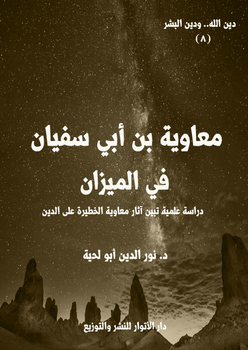

الكتاب: معاوية بن أبي سفيان في الميزان
المؤلف: أ.د. نور الدين أبو لحية
الناشر: دار الأنوار للنشر والتوزيع
الطبعة: الثانية، 1437 هـ
عدد الصفحات: 100
ISBN: 978-620-2-34569-9
لمطالعة الكتاب من تطبيق مؤلفاتي المجاني وهو أحسن وأيسر: هنا

التعريف بالكتاب
يتصور البعض أننا عندما نتحدث عن معاوية نتحدث عن شخصية تاريخية، لا علاقة لها بالواقع، ولا بالدين.. وأن أمرها في الأخير يعود إلى الآخرة التي سنكتشف فيها جلية الأمر وحقيقته.
وهذا وهم كبير، فنحن لا يعنينا أن يكون معاوية مؤمنا ولا كافرا ولا منافقا، فما أكثر المؤمنين وما أكثر الكفار وما أكثر المنافقين.. ولا يعنينا أن يكون من أهل الجنة أو من أهل النار.. فالله هو رب الجنة والنار.. ولا يضرنا إن دخل في إحداهما أو لم يدخل.
لكن الذي يعنينا هو آثار معاوية في الدين الذي نعتقده ونعيشه.. لأن معاوية كان في ذلك الصدر الذي أسس فيه للعقائد والفقه والسلوك.. وفيه فسر القرآن..وفيه نقل الحديث.. وفيه أسست نظم الإسلام السياسية والاقتصادية والاجتماعية وغيرها.
معاوية بن أبي سفيان في الميزان (4)
بما أن العقل السلفي ـ كما أشرنا إلى ذلك في سلسلة [الدين والدجل]ـ مؤسس على الرجال، والتسليم لهم، وأخذ الدين عنهم.. فإنه لا مناص لنا للتعرف على أسباب الدجل الذي اتسم به هذه المنهج أن نتتبع الجذور التاريخية المؤسسة له، والتي عبر عنها أعلامه وأئمته الكبار.
وذلك يستدعي بالضرورة التحقيق في حياتهم ومنجزاتهم وآثارهم على الواقع الإسلامي.. ويستدعي أيضا وضعهم في موازين التعديل والتجريح، مثلما نراهم يفعلون مع مخالفيهم.. والذين وضعوهم جميعا في موازينهم.. ثم حكموا عليهم بالبدعة.. وحكموا عليهم بعدها بالضلالة.. وحكموا عليهم بعد ذلك كله بالنار.
وبناء على هذا، فسنقوم في هذه السلسلة [أئمة السلفية في الميزان] بنفس ما قاموا به.. لكنا لا نجرؤ أن نضع أحدا في النار.. لأن للنار ربها وخالقها، وهو أعرف بأهلها.. ولهذا نكتفي ببيان التحريفات والتضليلات التي وقع فيها هؤلاء الأئمة من غير أن نتدخل لا في نياتهم ومقاصدهم، ولا في إيمانهم وكفرهم.. ولا في نهايتهم ومصيرهم.. لأن ذلك كله لا يجدينا.. فنحن نبحث عن علل الدجل وجذوره، ولا يعنينا هل غفر الله لمن وقع منهم ذلك، أم لم يغفر.. فالغفران بيد الله.. ونحن عبيد الله، ولا نجرؤ أن نحكم على أحد بما لم يعلمنا الله به.
والهدف الذي ترمي إليه هذه السلسلة ليس مشروعا فقط، بل هو واجب أيضا، وأدلة وجوبه هي نفس الأدلة التي يعتمدها التيار السلفي عندما يبيح لنفسه أن يقوم بوضع كل أعلام الأمة في موازينه التي لا تحوي إلا كفة واحدة هي كفة التجريح.
وحتى نخاطبهم بلغتهم وأسلوبهم في التفكير، فسنقتبس مقولة أحدهم في وجوب
معاوية بن أبي سفيان في الميزان (5)
قيام سوق الجرح والتعديل في هذا الزمان، فقد أورد قوله صلى الله عليه وآله وسلم: (يحمل هذا العلم من كل خلف عدوله، ينفون عنه تحريف الغالين، وانتحال المبطلين، وتأويل الجاهلين) (1)
ثم عقب عليه بقوله: (هذا الحديث أصل من أصول المنهج العلمي الإسلامي، وقاعدة من أجل قواعده، وأس من أبين أسسه؛ ذلكم أنه يبين مهمة لا تنقطع، ووظيفة لا تنفد، ومسؤولية جسيمة ملقاة على كواهل عدول الأمة: من العلماء والأئمة.. هذه الوظيفة وهذه المهمة مبنية على ما ورد في الحديث (ينفون عنه تحريف الغالين وانتحال المبطلين وتأويل الجاهلين) (2)
ثم راح ـ ليقرر ما يريد ـ يتساءل: (كيف للمسلم أن يميز بين المبطل والمحق؟ وكيف له أن يتميز له المدعي من صاحب الحق؟ وكيف له أن يدري على وجه السداد والتمام: الجاهل من العالم)
ثم أجاب على ذلك بقوله: (لن يكون له قدرة على ما هو أدنى من ذلك - فضلا عن الوقوف على حقيقة ذلك - إلا ضمن قواعد علم الجرح والتعديل.. هذا العلم الذي بدأت بواكير قواعده تُبنى وتؤسس في عصر أصحاب رسول الله صلى الله عليه وآله وسلم ثم تبلورت، وازدهرت، وتقعدت في عصر الفتنة، كما ورد عن بعض التابعين (لم يكونوا يسألون عن الإسناد؛ فلما وقعت الفتنة قالوا: سموا لنا رجالكم، فينظر إلى أهل السنة فيؤخذ حديثهم، وينظر إلى أهل البدع فلا يؤخذ حديثهم)، وكلمة ابن المبارك– في ذلك – عالية غالية (لولا الإسناد لقال من شاء ما شاء)
ثم بين أن هذا العلم لم ينته بعصر الرواية، وإنما هو ممتد لكل زمان، فقال: (وهذا العلم يحمله الخالف عن السالف، ويتلقاه الطلاب عن الشيوخ، ويأخذه الأبناء عن الآباء،
__________
(1) ابن عدي (2/ 79)، البيهقي (10/ 209)، ابن عبد البر في التمهيد (1/ 59)
(2) الجرح والتعديل -أصول وضوابط-، للشيخ علي الحلبي.
معاوية بن أبي سفيان في الميزان (6)
ويتناوله الأحفاذ عن الأجداد: دائرة متاكلمة الأطراف، ومنهجا متنامي الحقائق؛ حتى يكتمل في هذه الأمة دورها، وينتشر نورها. وليس – فقط – هذا العلم كما يتوهم المتوهمون هو علم فقط في الجيل الأول، أو في العصر الأول، أو أنه مقصور على كتب السنة، والحديث، والأثر.. لا.. ولكنه ممتد – كما ورد في الحديث – (يحمل هذا العلم من كل خلف) أي من كل جيل، فهذه إشارة إلى الاستمرار، والعلو، والوصول، وليس إلى الانقطاع، وليس إلى الانفصال، وليس إلى البتر.. ورحم الله من قال: (لولا حملة المحابر لخطبت الزنادقة على المنابر)
هذا نص من نصوص كثيرة نراها في الكتب والمواقع تدعو إلى إحياء فن الجرح والتعديل، أو الجرح والتجريح ليميز المستنون من المبتدعين، ودعاة الهداية من دعاة الضلالة.
وهو صواب من حيث المفاهيم، وإن لم يكن صوابا من حيث المصاديق، لأنهم راحوا إلى كل داعية هداية ووحدة.. وإلى كل حريص على الأمة.. يرمونه بما شاءت لهم أهواؤهم من أصناف التضليل والتبديع والتكفير.. بل والرمي في جهنم..
ونحن لا نجاريهم في كل ذلك.. ولذلك فإن الأعلام الذين سنتحدث عنهم في هذه السلسلة لا نزعم أنهم عارون من كل مكرمة، ولا خالون من كل منقبة.. بل نقر أن لهم مكارم ومناقب.. كما نقر ـ متأسفين ـ بأن لهم معايب ومثالب.. وعندما نحذر من عيوبهم ومثالبهم لا نحذر منها رغبة منا في نشر الفضائح.. وإنما نفعل ذلك لأجل بقاء الدين صافيا نقيا بعيدا عن الدجل، فالدين عندنا أهم من الرجال.
انطلاقا من هذا الهدف الذي نراه، تحاول هذه السلسلة التعرف على كبار أعلام السلفية وأئمتهم الذين كان لهم الأثر فيما انتهجوه من منهج، وتبنوه من أفكار.
وهي تبدأ من جذورهم الأولى من عصر الصحابة، فمن بعدهم إلى عصرنا الحاضر،
معاوية بن أبي سفيان في الميزان (7)
وهي تعتمد الدراسات المرتبطة بسيرهم الذاتية أولا، لتحقق فيها، وفي أسباب العلل وجذور الدجل التي تسربت إليها، ثم تبحث بعد ذلك في التراث الذي تركته، والآثار التي انجرت عنه.
ولذلك هي ليست مباحث تاريخية مجردة، وإنما هي مباحث تحقيقية همهما الأول كشف الدجل وأسبابه وعلله للتحذير منه، لا لفضح أصحابه.
ونعتذر لأصحاب الورع البارد، والعواطف الكاذبة لما قد يصدمهم من هذه السلسلة، لأن الحق أحق أن يتبع، وكشف الدجل أولى من رعاية المشاعر.. لأن في كشف الدجل تنقية للدين، حتى يميز دين الله عن دين البشر، وتميز الشريعة المقدسة عن الشريعة المدنسة.
معاوية بن أبي سفيان في الميزان (8)
لا يذكر السلفية الصحابة إلا ويذكرون فيهم ومعهم معاوية بن أبي سفيان، حتى أن عوامهم من البسطاء يتصورون أنه من السابقين الأولين للإسلام.. ويتصورون أن حياته كلها كانت مصداقا لقوله تعالى: {قُلْ إِنَّ صَلَاتِي وَنُسُكِي وَمَحْيَايَ وَمَمَاتِي لِلَّهِ رَبِّ الْعَالَمِينَ} [الأنعام: 162]
أما خطباؤهم، فهم لا يذكرونه إلا ويشفعونه بالترضي، واعتباره خال المؤمنين، وكاتب وحي رسول الله صلى الله عليه وآله وسلم، وفاتح الفتوح، وأول ملك في الإسلام، وصاحب الحلم والذكاء والعبقرية.. وغيرها من الصفات التي جعلت العوام يحنون إليه أكثر من حنينهم للإمام علي، ويتقربون منه أكثر من تقربهم لآل بيت النبوة.. وكيف يفعلون ذلك، ومعاوية رمز عندهم للسنة، وأهل بيت النبوة رمز عندهم للرفض.
ولذلك لم يكتفوا باعتباره علما من أعلام الإسلام، ولا فردا من أفراد الصحابة، بل جعلوه ـ على الرغم من الجرائم الكثيرة التي فعلها بالسابقين من الصحابة ـ حامي حمى الصحابة، بل حامي حمى السنة نفسها.. ولهذا لا عجب إن اعتبرنا معاوية هو الإمام الأكبر للسلفية.. فهم يغضبون له أكثر مما يغضبون لغيره.
ولو أن أحدا من الناس نقل التهم التي وجهها ابن تيمية للإمام علي أو لفاطمة الزهراء أو لغيرهما من أهل بيت النبوة، ووجهها لمعاوية أو لابنه يزيد لقامت قيامة السلفية على من يفعل هذا، واتهم بما تعود السلفية أن يرموا به مخالفيهم من الرفض وما يتبعه من الألقاب.
بناء على هذا سنحاول أن نذكر في هذا الكتاب أهم الانحرافات التي استفادها السلفية من إمامهم الأول والأكبر معاوية بن أبي سفيان، والتي أشار إليها رسول الله صلى الله عليه وآله وسلم في
معاوية بن أبي سفيان في الميزان (9)
قوله: (أول من يبدل سنتي رجل من بني أمية) (1).. ونتبعها بذكر العوامل التي جعلت السلفية يتبنون معاوية ومنهج الفئة الباغية.
__________
(1) رواه ابن أبي شيبة في المصنف (35866)، وابن أبي عاصم (63)، وأبو نعيم في تاريخ أصبهان (1/ 132)، وابن عدي في الكامل (3/ 164)، وابن عساكر في تاريخ دمشق (18/ 160)
معاوية بن أبي سفيان في الميزان (10)
أولا ـ تناقض موقف السلفية من الصحابة
ذكرنا في أجزاء كثيرة من هذه السلسلة ذلك التناقض أو الخداع الذي يمارسه السلفية عند حديثهم عن الصحابة.. فهم ـ عند التأمل والبحث الجاد والصادق ـ من أكبر أعدائهم، لأن الصحابة الحقيقيين هم أولئك السابقون الذين ضحوا بأنفسهم ومالهم في سبيل الله، وهؤلاء لا يعيرهم السلفية أي اهتمام..
فهم لا يكادون يذكرون بلالا، ولا الصخرة التي كانت تجثم على صدره، وهو ينادي أحد أحد.. ولا أحد يعرف المصير الذي صار إليه، ولا الحياة التي عاشها بعد وفاة حبيبه رسول الله صلى الله عليه وآله وسلم..
ولا أحد منهم يذكر سمية تلك التي كانت أول شهيدة في الإسلام.. ولا أحد يذكر زوجها ياسر الذي كان أول الرجال استشهادا في سبيل الله.. ولا أحد يذكر ابنهما عمارا.. لأن ذكره سيشوه الطلقاء، وسيقلب صفحاتهم المنتنة، وسيبعث في جماهير المغفلين السؤال عمن قتله، ولم قتله، وكيف قتله؟ وكل ذلك سيحول الطلقاء ـ الذين غرم بهم السلفية ـ من صحابة أجلاء إلى ظلمة وطواغيت.
ولا أحد منهم يذكر لبينة جارية بني المؤمل المستضعفة المعذبة، وقد كانت من السابقين إلى الإسلام، وأوذيت إيذاء شديدا.. لأن في ذكرهم لها ولكيفية تعذيبها إحراجا كبيرا لمن قدموهم بأهوائهم وأذواقهم ومعاييرهم البشرية القاصرة.
ولا أحد منهم يذكر أم عبيس، التي كانت قريش ـ التي غرمت بها السلفية ـ تعذبها عذابا شديدا هي وزوجها أبو عبيس..
ولا أحد منهم يذكر النهدية تلك الجارية اليمنية المستضعفة التي كانت من السابقين إلى الإسلام، فكانت سيدتها تعذبها، وتقول: والله لا أقلعت عنك.. وهكذا كان حال ابنتها
معاوية بن أبي سفيان في الميزان (11)
التي عذبت معها، ولا نزال إلى الآن لا نعرف اسمها ولا اسم ابنتها، ولا أي تفاصيل عنها في نفس الوقت الذي يعرف فيه السلفية أنساب الطلقاء، ويعتزون بها.
ولا أحد يذكر زنيرة تلك الجارية المستضعفة التي كانت يتداول المشركون على تعذيبها بكل صنوف العذاب الحسي والمعنوي، لأن في ذكرهم لها تشويها لقريش التي حولوها جميعا إلى صحابة أجلاء يتمتعون بكل أنواع الحصانة.
ولم يكتف السلفية بذلك التجاهل لأولئك السابقين الصادقين من الصحابة، بل ضموا إليه اعتبار كبارهم من الذين واجهوا بني أمية منافقين.. فمن الصحابة الذين حكم عليهم السلفية بالنفاق مع كونهم ممن شارك في غزوة بدر (1): معتب بن قشير الأنصاري: الذي هو بدري بالإجماع وهو عندهم منافق بالإجماع..
ومنهم مدلاج بن عمرو السلمي وهو بدري شهد صفين مع علي وتأخرت وفاته إلى عام 50 هـ، ورغم ذلك قال أبو حاتم عنه: (أعرابي مجهول وتواطئوا على ذكره في الضعفاء كأبي حاتم وابنه وابن الجوزي إلى عهد الذهبي فاستدركه عليهم ابن حجر في لسان الميزان في القرن التاسع!)
ومنهم ربيعة بن مسعود القارئ الذي قال فيه أبو حاتم: (أعرابي مجهول)! وذكره في الضعفاء ابن الجوزي والذهبي، وأهمله البخاري في تاريخه.. مع أنه بدري، وأسلم قبل دخول النبي صلى الله عليه وآله وسلم دار الأرقم، وشهد بدراً والمشاهد كلها وتوفي عام 30 هـ.
ومنهم خليدة بن قيس الأنصاري، وهو بدري، لكن مع ذلك قال عنه أبو حاتم الرازي: (خليدة بن قيس بن عثمان من بني نعمان بن سنان الأنصاري شهد بدرا سمعت أبي
__________
(1) انظر بحثا في المسألة مهما جدا بعنوان [صحابة بدريون ولكنهم منافقون.... هكذا يقول السلفيون!] للشيخ حسن بن فرحان المالكي.
معاوية بن أبي سفيان في الميزان (12)
يقول ذلك وسمعته يقول هو مجهول) (1)
ومنهم حمزة بن الجمير من بني عبيد بن عدي الأنصاري، وهو بدري ومع إقرار أبي حاتم بذلك إلا أنه قال فيه: (سمعت أبي يقول ذلك ويقول هو مجهول)، أي مجهول العدالة..
ومنهم أبو سفيان بن الحارث بن قيس، أخو نبتل، الأوسي، وهو بدري اتهموه بالنفاق..
وغيرهم كثير من الذين اتهموهم بالنفاق أو بالجهالة، وراحوا يرمونهم بعدم الوثاقة، في نفس الوقت الذي يكذبون فيه على الناس بادعاء عدالة جميع الصحابة.. لكن مقصودهم الأول في ذلك هو الفئة الباغية، ومن ساندها.
وهكذا نرى مواقفهم من الصحابة الذين شهد لهم رسول الله صلى الله عليه وآله وسلم بالصدق والإخلاص، ولكن بسبب كونهم من المعارضين للفئة الباغية نرى التجاهل السلفي في حقهم، بل الإعراض عنهم، واتهام كل من يذكرهم بالرفض وما يتبعه من الألقاب والأوصاف.
ومنهم أولئك الشهداء المظلومين المقتولين ظلما بعذراء من أرض دمشق، فعن أبي الاسود، قال: دخل معاوية على عائشة فقالت: ما حملك على قتل أهل عذراء حجر وأصحابه؟ فقال: يا أم المؤمنين، إني رأيت قتلهم صلاحا للأمة، وبقاءهم فسادا للأمة، فقالت: سمعت رسول الله صلى الله عليه وآله وسلم يقول: (سيقتل بعذراء ناس يغضب الله لهم، وأهل السماء) (2)
وعن سعيد بن أبي هلال أن معاوية حج فدخل على عائشة فقالت: يا معاوية قتلت
__________
(1) الجرح والتعديل: 3/ 400.
(2) رواه يعقوب بن سفيان وابن عساكر.
معاوية بن أبي سفيان في الميزان (13)
حجر بن الأدبر وأصحابه؟ أما والله، لقد بلغني أنه سيقتل بعذراء سبعة نفر يغضب الله لهم وأهل السماء (1).
ومع قبول السلفية لهذا الحديث، ومع كونه يدل على غضب الله على من قتل أولئك الشهداء المظلومين إلا أنهم لم يغضبوا لذلك، بل راحوا يدافعون عن الطلقاء، وجرائمهم في حق الصحابة وغيرهم..
ومنهم عمرو بن الحمق الذي أخبر رسول الله صلى الله عليه وآله وسلم أن الطلقاء سيقتلونه، فعن رفاعة بن شداد البجلي أنه خرج مع عمرو بن الحمق حين طلبه معاوية قال: فقال لي يا فارعة أن القوم قاتلي، إن رسول الله صلى الله عليه وآله وسلم أخبرني أن الجن والانس تشترك في دمي، قال رفاعة: فما تم حديثه حتى رأيت أعنة الخيل فودعته وواثبته حية، فلسعته وأدركوه فاحتزوا رأسه، وكان أول رأس أهدي في الاسلام (2).
وفي حديث آخر عنه قال: بعث رسول الله صلى الله عليه وآله وسلم سرية، فقالوا: يا رسول الله، إنك تبعثنا، ولا لنا زاد ولا طعام، ولا علم لنا بالطريق، فقال: (إنكم ستمرون برجل صبيح الوجه يطعمكم من الطعام ويسقيكم من الشراب، ويدلكم على الطريق، وهو من أهل الجنة)، فلم يزل القوم على جعل يشير بعضهم الى بعض، وينظرون الي فقلت: مالكم يشير بعضكم الى بعض وتنظرون إلي، فقالوا: أبشر ببشرى الله ورسوله صلى الله عليه وآله وسلم فإنا نعرف فيك نعت رسول الله صلى الله عليه وآله وسلم، فأخبروني بما قال لهم، فأطعمتهم وسقيتهم وزودتهم وخرجت معهم حتى دللتهم على الطريق. ثم رجعت الى أهلي وأوصيتهم بإبلي ثم خرجت إلى رسول الله صلى الله عليه وآله وسلم فقلت: ما الذي تدعو إليه؟ قال: (أدعو الى شهادة أن لا اله الا الله، وأني رسول الله واقام الصلاة، وايتاء الزكاة، وحج البيت، وصوم رمضان)، فقلت: إذا أجبناك الى هذا فنحن آمنون على
__________
(1) رواه ابن عساكر.
(2) رواه ابن عساكر.
معاوية بن أبي سفيان في الميزان (14)
أهلنا ودمائنا وأموالنا؟ قال: (نعم)، فأسلمت، ثم رجعت الى أهلي، فأعلمتهم باسلامي، فأسلم على يدي بشر كثير منهم، ثم هاجرت الى رسول الله صلى الله عليه وآله وسلم فبينا أنا عنده ذات يوم فقال: (يا عمرو، هل لك أن أريك آية الجنة، تأكل الطعام، وتشرب الشراب وتمشي في الاسواق؟)، قلت: بلى، بأبي أنت وأمي، قال: (هذا وقومه)، وأشار الى علي بن أبي طالب، وقال لي: (يا عمرو، هل لك أن أريك آية النار تأكل الطعام، وتشرب الشراب، وتمشي في الاسواق؟)، قلت: بلى، بأبي أنت وأمي، قال: (هذا) وأشار الى رجل، فلما وقعت الفتنة ذكرت قول رسول الله صلى الله عليه وآله وسلم ففررت من آية النار الى آية الجنة، ويرى بني أمية قاتلي بعد هذا، قلت: الله ورسوله أعلم، قال: والله، لو كنت حجرا في جوف حجر لاستخرجني بنو أمية حتى يقتلوني، حدثني به حبيبي رسول الله صلى الله عليه وآله وسلم أن رأسي أول رأس تجز، ويحتز في الاسلام، وينقل من بلد الى بلد.
ومنهم قيس بن خرشة ومحاولة هؤلاء المجرمين التعرض له، وحماية الله له منهم، فعن محمد بن يزيد بن أبي زياد الثقفي قال: إن قيس بن خرشة قدم على النبي صلى الله عليه وآله وسلم، قال: أبايعك على ما جاء من الله تعالى وعلى أن أقول بالحق، فقال النبي صلى الله عليه وآله وسلم: (يا قيس، عسى أن يمدك الدهر، أن يلقاك بعدي من لا تستطيع أن تقول بالحق معهم)، قال قيس: والله لا أبايعك على شئ إلا وفيت لك به، فقال النبي صلى الله عليه وآله وسلم: (إذا لا يضرك بشر)، وكان قيس يعيب زياد بن أبي سفيان، وابنه عبيد الله، فبلغ ذلك عبيد الله، فأرسل إليه فقال: أنت الذي تفتري على الله تعالى وعلى رسوله؟ قال: لا، ولكن إن شئت أخبرتك بمن يفتري على الله وعلى رسوله؟ قال: من ذاك؟ قال: أنت وأبوك الذي أمركما، قال قيس: وما الذي افتريت على الله ورسوله؟ فقال: (تزعم انه لا يضرك بشر!) قال: نعم، قال: (لتعلمن اليوم أنك قد كذبت، ائتوني بصاحب العذاب وبالعذاب)، قال: فمال قيس عند ذلك، فمات (1).
__________
(1) رواه الطبراني والبيهقي.
معاوية بن أبي سفيان في الميزان (15)
ومنهم أهل الحرة، وفيهم صحابة أجلاء، يزعم السلفية كذبا أنهم موالون لهم، مع أنهم يقفون مع الذين استحلوا دماءهم، فعن أيوب بن بشير المعاوي أن رسول الله صلى الله عليه وآله وسلم خرج في سفر، فلما مر بحرة زهرة وقف، فاسترجع، فسألوه فقال: (يقتل بهذه الحرة خيار أمتي بعد أصحابي) (1)
وعن ابن عباس قال: جاء تأويل هذه الآية على رأس ستين سنة: {وَلَوْ دُخِلَتْ عَلَيْهِمْ مِنْ أَقْطَارِهَا ثُمَّ سُئِلُوا الْفِتْنَةَ لَآتَوْهَا وَمَا تَلَبَّثُوا بِهَا إِلَّا يَسِيراً} (الأحزاب:14) قال: لأعطوها، يعني ادخال بني حارثة أهل الشام على المدينة (2).
وعن الحسن قال: لما كان يوم الحرة قتل أهل المدينة حتى كاد لا ينفلت منهم أحد (3).
وعن مالك بن أنس قال: قتل يوم الحرة سبعمائة رجل من حملة القرآن منهم ثلاثمائة من الصحابة، وذلك في ملك يزيد.
وقد أخبر صلى الله عليه وآله وسلم عن هذه الحادثة، وعن بعض الأحداث التي ستحدث في المدينة المنورة بعده، فعن أبي ذرٍّ الغفاريٍّ قال: ركب رسول الله صلى الله عليه وآله وسلم حماراً، وأردفني خلفه، وقال: (يا أبا ذر، أرأيت إن أصاب الناس جوعٌ شديد، لا تستطيع أن تقوم من فراشك إلى مسجدك، كيف تصنع؟) قال: الله ورسوله أعلم، قال: (تعفّف)، قال: (يا أبا ذر، أرأيت إن أصاب الناس موتٌ شديدٌ، يكون البيت فيه بالعبد، (يعني: القبر) ـ كيف تصنع؟) قلت: الله ورسوله أعلم، قال: (اصبر)، قال: (يا أبا ذر، أرأيت إن قتل الناس بعضهم بعضاً حتى تغرق حجارة الزيت من الدماء كيف تصنع؟)، قلت: الله ورسوله أعلم، قال: (اقعد في بيتك، وأغلق عليك بابك)، قال: فإن لم أترك؟ قال: (فأت من أنت منهم فكن فيهم)، قال:
__________
(1) رواه البيهقي.
(2) رواه البيهقي.
(3) رواه البيهقي.
معاوية بن أبي سفيان في الميزان (16)
فآخذ سلاحي؟ قال: (إذاً تشاركهم فيما هم فيه، ولكن إن خشيت أن يروعك شعاع السيف، فألق طرف ردائك على وجهك حتى يبوء بإثمه وإثمك) (1)
وقد قال ابن حجر مشيرا إلى هذه الوقعة عند ترجمته لمسرف بن عقبة ـ وهو صحابي ظالم من قواد يزيد بن معاوية ـ: (وقد أفحش مسلم القول والفعل بأهل المدينة وأسرف في قتل الكبير والصغير حتى سموه مسرفا وأباح المدينة ثلاثة أيام لذلك والعسكر ينهبون ويقتلون ويفجرون، ثم رفع القتل وبايع من بقي على أنهم عبيد ليزيد بن معاوية) (2)
وقال ابن كثير – الذي يثق فيه السلفية كما يثقون في ابن حجر-: (وإنما يسميه السلف: مسرف بن عقبة، فلما ورد المدينة استباحها ثلاثة أيام، فقتل في غضون هذه الأيام بشرا كثيرا حتى كاد لا يفلت أحد من أهلها، وزعم بعض علماء السلف أنه قتل في غضون ذلك ألف بكر والله أعلم) (3)
ونقل عن عبد الله بن وهب عن الإمام مالك قوله: (قتل يوم الحرة سبعمائة رجل من حملة القرآن، حسبت أنه قال: وكان فيهم ثلاثة من أصحاب رسول الله صلى الله عليه وآله وسلم، وذلك في خلافة يزيد) (4)
وقد علق الشيخ حسن بن فرحان المالكي على هذا النص بقوله: (هؤلاء الصحابة من قتلهم غير سلف الغلاة؟ ولماذا يتكتمون؟.. كفار قريش لم يقتلوا من (الصحابة) ربع ما قتل سلفهم. مجموع ما قتلت قريش نحو (90 صحابياً فقط) ولكن بني أمية قتلوا فوق الألف على أقل حال.. أيضاً الشيعة والجهمية (والرافضة) وكل خصوم الغلاة لم يقتلوا من
__________
(1) رواه أحمد والترمذي والحاكم وابن حبان.
(2) الإصابة في تمييز الصحابة (6/ 232)
(3) البداية والنهاية: 6/ 262.
(4) البداية والنهاية: 6/ 262.
معاوية بن أبي سفيان في الميزان (17)
(الصحابة) صحابياً، بينما سلف الغلاة من بني أمية حصدوا أهل بدر والرضوان، بينما سعيد بن المسيب يقول بأن بني أمية قتلوا من أدركوا من (أهل بدر والرضوان).. لو لو سلمنا لهم جدلاً... أن كل خصومهم من الشيعة والجهمية والإباضية يكفرون (كل الصحابة ويلعنونهم) فهل تكفير الصحابي ولعنه أشد أم قتله؟ ليجرب أحدكم نفسه، ولينظر: هل يسوؤه أكثر من يلعنه ويكفره.. أم من يقتله ويفجر بنسائه وبناته، كما فعل أحبابكم بنو أمية بالصحابة، اصحوا، ولماذا حقدكم على من يلعن (الصحابة) أكثر من حقدكم على من قتلوا الصحابة وفجروا بنسائهم، مع أن أحبابكم بني أمية جمعوا الأمرين معاً.. أريد تفسيراً واضحاً من الغلاة... حتى نرتب الحقد على قدر الذنب. لكنني لا أفهم منهم هذا الحب للقاتل واللاعن والفاجر، وهذا البغض للاعن فقط) (1)
والنص الذي يشير إليه الشيخ حسن بن فرحان هو ما ورد في صحيح البخاري عن سعيد بن المسيب قال: وقعت الفتنة الأولى - يعني مقتل عثمان - فلم تبقِ من أصحاب بدر أحداً، ثم وقعت الفتنة الثانية - يعني الحرة - فلم تبقِ من أصحاب الحديبية أحداً) (2)
وهكذا نرى موقف هؤلاء الطلقاء من الأنصار الذين يدعي السلفية تعظيمهم لهم، بينما هم يحتقرونهم أعظم احتقار حين يوالون أعداءهم، وقد حدث أسيد بن حضير وأنس أن رسول الله صلى الله عليه وآله وسلم قال للأنصار حين أفاء الله عليه أموال هوازن: (إنكم ستلقون بعدي أثرة فاصبروا حتى تلقوني على الحوض) (3)
وحدث أنس عن ذلك، فذكر أن رسول الله صلى الله عليه وآله وسلم قال للأنصار: (ستلقون بعدي أثرة في
__________
(1) خلاصات أموية - الشيخ حسن فرحان المالكي.
(2) صحيح البخاري: 4/ 1475.
(3) رواه البخاري ومسلم واحمد والبيهقي والترمذي والنسائي.
معاوية بن أبي سفيان في الميزان (18)
القسم والأمر، فاصبروا حتى تلقوني على الحوض) (1)
وقد حدث مقسم يذكر وقوع ما أخبر عنه رسول الله صلى الله عليه وآله وسلم، فذكر أن أبا أيوب أتى معاوية فذكر حاجة له، فجفاه ولم يرفع به رأسا، فقال أبو أيوب: أما ان رسول الله صلى الله عليه وآله وسلم قد خبرنا أنه ستصيبنا بعده أثرة قال: فبم أمركم؟ قال: أمرنا أن نصبر حتى نرد عليه الحوض، قال: فاصبروا إذا، فغضب أبو أيوب، وحلف أن لا يكلمه أبدا (2).
هذه أمثلة عن مواقف السلفية المتناقضة من الصحابة الذين يزعمون ـ زورا وبهتانا ـ أنهم يوالون في الحين الذين يشنون عليهم كل ألوان الحقد والكراهية في سبيل إرضاء الفئة الباغية.
__________
(1) رواه الحاكم وابو نعيم.
(2) رواه الحاكم.
معاوية بن أبي سفيان في الميزان (19)
ثانيا ـ آثار معاوية على القراءة السلفية للإسلام
يتصور البعض أننا عندما نتحدث عن معاوية نتحدث عن شخصية تاريخية، لا علاقة لها بالواقع، ولا بالدين.. وأن أمرها في الأخير يعود إلى الآخرة التي سنكتشف فيها جلية الأمر وحقيقته.
وهذا وهم كبير، فنحن لا يعنينا أن يكون معاوية مؤمنا ولا كافرا ولا منافقا، فما أكثر المؤمنين وما أكثر الكفار وما أكثر المنافقين.. ولا يعنينا أن يكون من أهل الجنة أو من أهل النار.. فالله هو رب الجنة والنار.. ولا يضرنا إن دخل في إحداهما أو لم يدخل.
لكن الذي يعنينا هو آثار معاوية في الدين الذي نعتقده ونعيشه.. لأن معاوية كان في ذلك الصدر الذي أسس فيه للعقائد والفقه والسلوك.. وفيه فسر القرآن.. وفيه نقل الحديث.. وفيه أسست نظم الإسلام السياسية والاقتصادية والاجتماعية وغيرها.
ودعوتنا للبحث في أمره وآثاره في الدين هي نفس دعوتنا للمسيحيين في البحث في شأن بولس وتأثيره في المسيحية.. وهو نفس دعوتنا لكل أهل دين تعرض للتحريف، للبحث عن جذور التحريف ومصادره والتحقيق فيها، لأنه لا يمكن معرفة الحقيقة من دون ذلك.. ولا يمكن معرفة الحقيقة ونحن نضع الحصانة الدينية لكل المشكوك فيهم وفي آثارهم.
ولذلك فإن اهتمامنا به نابع من هذه الآثار.. فهل أثر معاوية في الفهم السلفي للدين بقيمه ونظمه ومعانيه.. أم أنه كان فردا عاديا بسيطا، جل ما في الأمر أنه كان عاشقا للسلطة، ثم تولاها كما تولاها سائر الملوك والسلاطين.. ولذلك فإن خطأه منحصر في ذلك، وفي تلك الفترة التاريخية التي تولاها.
سنحاول الإجابة على هذه الأسئلة عبر إبراز آثار معاوية على الفهم السلفي للدين
معاوية بن أبي سفيان في الميزان (20)
من خلال الجواب التالية.
1 ـ آثار معاوية على صورة الشخصية الإسلامية
الشخصية الإسلامية الحقيقية هي التي تستلهم مبادئها النظرية والعملية من رسول الله صلى الله عليه وآله وسلم باعتباره المثلى الأعلى، والقدوة الأكبر الذي قال الله تعالى فيه: {لَقَدْ كَانَ لَكُمْ فِي رَسُولِ اللَّهِ أُسْوَةٌ حَسَنَةٌ لِمَنْ كَانَ يَرْجُو اللَّهَ وَالْيَوْمَ الْآخِرَ وَذَكَرَ اللَّهَ كَثِيرًا} [الأحزاب: 21]
ثم هي بعد ذلك ـ لتأكيد تلك المعاني وتقويتها ـ تستلهم من السابقين الأولين من المهاجرين والأنصار الذين حسنت صحبتهم وتلمذتهم على رسول الله صلى الله عليه وآله وسلم، ومثلوه في جميع القيم التي جاء بها خير تمثيل، وماتوا على ذلك.
وهم الذين وردت في حقهم الآيات الكريمة تنوه بفضلهم، ومكانتهم، وقد وصفهم الإمام علي، فقال: (لقد رأيت أصحاب محمد صلى الله عليه وآله وسلم، فما أرى أحداً يشبههم منكم لقد كانوا يصبحون شعثاً غبراً، وقد باتوا سجّداً وقياماً يراوحون بين جباهِهِم وخدودهم ويقفون على مثل الجمر من ذكر معادهم، كأن بين أعينهم رُكب المعزى من طول سجودهم، إذا ذكر الله هملت أعينهم حتى تبُلَّ جيوبهم، ومادوا كما يميد الشجر يوم الريح العاصف، خوفاً من العقاب ورجاءً للثواب) (1)
لكن السلفية، وباعتبارهم الطلقاء وغيرهم من الصحابة، شوهوا الشخصية الإسلامية تشويها عظيما، من أجل الحفاظ على سمعة من سموهم كذبا وزورا صحابة وتلاميذ لرسول الله صلى الله عليه وآله وسلم..
ولهذا نراهم لا يكتفون بالقول بنجاة معاوية، ولا بكونه فردا من أفراد الصحابة، بل راحوا يضمون إلى ذلك ما هو أخطر بكثير، وهو اعتباره سيدا وقدوة وصاحب شخصية قوية يمكن للمؤمنين البسطاء أن يستبدلوا بها شخصية عمار وبلال وأبي ذر وقتادة وغيرهم
__________
(1) نهج البلاغة ج:1 ص:189 ـ 190.
معاوية بن أبي سفيان في الميزان (21)
من كبار الصحابة.. وكأن تلمذة معاوية القصيرة لرسول الله صلى الله عليه وآله وسلم فاقت تلمذة أولئك السابقين من المهاجرين والأنصار.
وهم يروون لتأكيد هذا عن ابن عمر قوله: ما رأيت أحدا بعد رسول الله صلى الله عليه وآله وسلم كان أَسْوَدَ من معاوية، قال: قلت: هو كان أسود من أبي بكر؟ قال: هو - والله - أخير منه، وهو - والله - كان أسود من أبي بكر، قال: قلت: فهو كان أسود من عمر؟ قال: عمر - والله - كان أخير منه، وهو - والله - أسود من عمر، قال: قلت: هو كان أسود من عثمان؟ قال - والله - إن كان عثمان لسيدا، وهو كان أسود منه) (1)
ورروا عن قبيصة بن جابر الأسدي قوله: ألا أخبركم من صحبت؟ صحبت عمر بن الخطاب فما رأيت رجلاً أفقه فقهاً ولا أحسن مدارسة منه، ثم صحبت طلحة بن عبيد الله، فما رأيت رجلاً أعطى للجزيل من غير مسألة منه؛ ثم صحبت معاوية فما رأيت رجلاً أحب رفيقاً، ولا أشبه سريرة بعلانية منه) (2)
ورووا عنه قوله: (ما رأيت أحداً أعظم حلماً ولا أكثر سؤدداً ولا أبعد أناة ولا ألين مخرجاً ولا أرحب باعاً بالمعروف من معاوية) (3)
ولست أدري كيف صار معاوية بهذه الأخلاق العالية، والسيادة الرفيعة التي سبق فيها ـ حسب تصورهم ـ السابقين الأولين من المهاجرين والأنصار، وهو لم يتتلمذ يوما واحدا على رسول الله صلى الله عليه وآله وسلم.. بل كان من ألد أعدائه هو وأسرته جميعا منذ صباه الباكر.
يقول الشيخ حسن بن فرحان معلقا على ذلك العشق والهيام الذي يقابل به السلفية شيخهم وإمامهم معاوية: (أعجب منهم أناس - يدعون أنهم يحبون النبي صلى الله عليه وآله وسلم - يمدحون
__________
(1) سير أعلام النبلاء، 3/ 154.
(2) تاريخ الطبري (5/ 337) وأورد هذا الخبر البخاري في التاريخ الكير (7/ 175).
(3) البداية والنهاية (8/ 138).
معاوية بن أبي سفيان في الميزان (22)
أشخاصاً أفنوا أعمارهم في حرب رسول الله صلى الله عليه وآله وسلم وأهل بيته وصحابته على مدى ثمانين عاما، فقد ولد معاوية قبل البعثة بخمس سنين، ورضع بغض النبي منذ الصبا، فأبوه أبو سفيان، وأمه هند بنت عتبة آكلة كبد حمزة، وعمته حمالة الحطب.. لقد كان معاوية - في أول العهد المكي - من أولئك الصبية الذين كانت قريش تسلطهم على أذية رسول الله، وشارك شبابهم في بقية العهد المكي، ثم اشترك مع أبيه في حرب النبي في تلك الحروب، وكان فيها مقتل أخيه حنظلة ببدر (قتله علي)، ومقتل جديه عتبة وشيبة وخاله الوليد.. ثم أسلم نفاقاً يوم فتح مكة.. واشترك في غزوة حنين منافقاً، فقد كان ممن اعتزل مع أبيه فوق تلّ وقال معه: (بطل السحر اليوم)! ثم قام هو وأبوه يوم حنين بسرقة جمل لعجوز مسلمة، فاشتكتهما إلى النبي، فأنكرا وحلفا، فأخبر الوحي النبي صلى الله عليه وآله وسلم بالمكان الذي أخفيا فيه الجمل، فوبخهما وردّ الجمل على العجوز وتألفهما على الإسلام.. ثم كان معاوية في تبوك، وحاول مع أبيه اغتيال النبي صلى الله عليه وآله وسلم في عقبة تبوك، ولكن الله سلم (1).. ثم في عهد عثمان اجتهد في كنز الأموال واضطهاد الصالحين والربا.. وفي عهد علي قتل 25 بدريا ونحو 200 من أصحاب بيعة الرضوان بصفين. ثم في عهده، لعن علياً على المنابر، واضطهد الأنصار، ونبش قبر حمزة، وأمر أحد العمال بضرب قدم حمزة الذي قتل جده عتبة، فانبعث الدم من قدمه. وأراد تخريب منبر النبي مرتين، فأظلمت السماء، فترك ذلك، وذهب إلى الأبواء لينبش قبر أم النبي، ويطرحه في بئر، فأصابه الله باللقوة، فتوقف.. ثم كانت خاتمته أنه تحقق فيه قول النبي (يموت معاوية على غير ملتي)، والحديث صحيح على شرط مسلم، وقد صححت الحديث
__________
(1) قصة محاولة الاغتيال هي تلك ذكرها الله في قوله {وَهَمُّوا بِمَا لَمْ يَنَالُوا} [التوبة: 74] وكان مع أبي سفيان ومعاوية آخرون بلغوا أربعة عشر رجلاً، فلعنهم، ثم بعد عودة النبي من غزوة تبوك، أخرج الذين حاولوا اغتياله من المسجد، ولعنهم، وكان منهم أبو سفيان وابناه معاوية وعتبة، وسندها صحيح.
معاوية بن أبي سفيان في الميزان (23)
جامعة أم القرى.. وتحقق فيه الحديث الآخر (حديث الدبيله) (1) فأصابته الدبيلة (قرحة كبيرة) فانغرست في ظهره وخرجت من صدره، وبقي معذباً بها سنة كاملة) (2)
ثم ختم ذلك بقوله: (هذا هو عجلكم معاوية الذي ملأتم بمدحه الدنيا، ولو لم يكن فيه إلا الحديث الصحيح: (يموت معاوية على غير ملتي) لكفى بذلك ذماً. وهذا الحديث يقطع كل جدل، ورجاله ثقات أثبات سمع بعضهم من بعض، وصححه مجموعة من أهل الحديث على شرط مسلم، منهم المحدث محمد عزوز المكي وابن عقيل) (3)
ولم يكتف السلفية بكل ذلك، بل إنهم لأجل الحفاظ على المكانة الرفيعة لمعاوية ومن معه من الفئة الباغية، راحوا يقدمون ـ شعروا أو لم يشعروا ـ معاوية على كل الصحابة، وحتى على السابقين منهم.
ومن الأمثلة على ذلك أنهم في الخلاف الخطير الذي جرى بين معاوية وأبي ذرّ الغفاري نراهم يقدمون معاوية، ويعتبرونه المحق، ويعتبرون أبا ذر جانيا بإنكاره على معاوية، ويلتمسون كل المبررات التي تحفظ ماء وجه معاوية، ولو بإراقة ماء وجه أبي ذر.
مع أن رسول الله صلى الله عليه وآله وسلم أخبر عن صدق أبي ذر، وكونه ابتلاء لمن بعده، فقال: (ما أقَلّت الغَبْراءُ ولا أظَلّت الخضراءُ من رجل أصدق لهجة من أبي ذرّ) (4)
__________
(1) ففي صحيح مسلم من حديث قيس بن عباد عن عمار: (ثمانية تكفيكهم الدبيلة: مرض يظهر في ظهورهم فينجم من صدورهم)، وكان لا يستتقذ كل رداء، حتى أنهم جعلوا له رداء من حواصل الطير، فاستثقله وآذاه، ولما طال مرضه وأعياه، نصحه طبيب بلبس الصليب، والبراءة من دين محمد، ففعل ومات، انظر: رسالة بعنوان: حديث الدبيلة للشيخ حسن بن فرحان المالكي.
(2) من مقال بعنوان: (هذا معاويه الذي ملأتم به الدنيا!)
(3) من مقال بعنوان: (هذا معاويه الذي ملأتم به الدنيا!)
(4) أحمد: 6/ 192
معاوية بن أبي سفيان في الميزان (24)
وسنحكي هنا باختصار قصة الخلاف، وما انجر عنها من نفي أبي ذر إلى الربذة ليموت فيها شهيدا، والقصة هي ما رواه البخاري في صحيحه عن زيد بن وهب، قال: (مررت بالربَذَة فإذا أنا بأبي ذر، فقلت له: ما أنزلك منزلك هذا؟ قال: كنت بالشام، فاختلفت أنا ومعاوية في: {وَالَّذِينَ يَكْنِزُونَ الذَّهَبَ وَالْفِضَّةَ وَلَا يُنْفِقُونَهَا فِي سَبِيلِ اللَّهِ فَبَشِّرْهُمْ بِعَذَابٍ أَلِيمٍ} [التوبة: 34]، قال معاوية: نزلت في أهل الكتاب، فقلت: نزلت فينا وفيهم، فكان بيني وبينه في ذاك، وكتب إلى عثمان يشكوني، فكتب إلي عثمان: أن اقدم المدينة فقدمتها، فكثر علي الناس حتى كأنهم لم يروني قبل ذلك، فذكرت ذاك لعثمان، فقال لي: إن شئت تنحيت، فكنت قريبا، فذاك الذي أنزلني هذا المنزل، ولو أمروا علي حبشيا لسمعت وأطعت) (1)
وقد روي أن سبب الخلاف كان أعمق من ذلك، فقد كان أبو ذر يلاحظ تلك التحريفات الخطيرة التي قام بها معاوية، وكان ينكر عليه، فبعث إليه معاوية بثلاث مائة دينار، فقال: (إن كان من عطائي الذي حرمتمونيه عامي هذا قبلتها، وإن كانت صلة فلا حاجة لي فيها)
وعندما بنى معاوية قصره الخضراء بدمشق، فقال: (يا معاوية! إن كانت هذه الدار من مال الله فهي الخيانة، وإن كانت من مالك فهذا الاسراف)
وكان يقول: (والله لقد حدثت أعمال ما أعرفها، والله ما هي في كتاب الله ولا سنة نبيه، والله اني لأرى حقا يطفأ وباطلا يحيى، وصادقا يكذب، وأثره بغير تقى، وصالحا مستأثرا عليه)، وكان الناس يجتمعون عليه، فنادى منادي معاوية ألا يجالسه أحد (2).
وفي رواية أن معاوية بعث إليه بألف دينار في جنح الليل فأنفقها، فلما صلى معاوية
__________
(1) البخاري: 2/ 107.
(2) ابن سعد 4/ 229.
معاوية بن أبي سفيان في الميزان (25)
الصبح، دعا رسوله فقال: اذهب إلى أبي ذر، فقل: أنقذ جسدي من عذاب معاوية، فإني أخطأت. قال: يا بني، قل له: يقول لك أبو ذر: والله ما أصبح عندنا منه دينار ولكن أنظرنا ثلاثا حتى نجمع لك دنانيرك، فلما رأى معاوية أن قوله صدق فعله، كتب إلى عثمان: أما بعد، فإن كان لك بالشام حاجة أو بأهله، فابعث إلى أبي ذر فإنه وغل صدور الناس... الحديث (1).
وقد حاول السلفية سلفهم وخلفهم أن يلتمسوا كل الحيل لتبرئة معاوية ومروان، وإلصاق كل التهم بأبي ذر غير مراعين حجمه في الصحابة، ولا أسبقيته للإسلام، بل قدموا عليه الطلقاء وأبناء الطلقاء.
ومن تلك الاعتذرات ما عبر عنه ابن تيمية بقوله: (وأما قوله: إنه نفى أبا ذر إلى الربذة وضربه ضربا وجيعا، مع أن النبي صلى الله عليه وآله وسلم قال في حقه: (ما أقلت الغبراء ولا أظلت الخضراء على ذي لهجة أصدق من أبي ذر)، وقال: (إن الله أوحى إلي أنه يحب أربعة من أصحابي وأمرني بحبهم. فقيل له: من هم يا رسول الله؟ قال: علي سيدهم، وسلمان، والمقداد، وأبو ذر)، فالجواب: أنّ أبا ذر سكن الرّبذة ومات بها لسبب ما كان يقع بينه وبين الناس، فإن أبا ذر كان رجلا صالحا زاهداً، وكان من مذهبه أن الزّهد واجب، وأن ما أمسكه الإنسان فاضلا عن حاجته فهو كنز يكوى به في النار، واحتج على ذلك بما لا حجة فيه من الكتاب والسنة. احتج بقوله تعالى: {وَالَّذِينَ يَكْنِزُونَ الذَّهَبَ وَالْفِضَّةَ وَلَا يُنْفِقُونَهَا فِي سَبِيلِ اللَّهِ فَبَشِّرْهُمْ بِعَذَابٍ أَلِيمٍ} [التوبة: 34]، وجعل الكنز ما يفضل عن الحاجة، واحتج بما سمعه من النبي صلى الله عليه وآله وسلم هو أنه قال: (يا أبا ذر ما أحب أن لي مثل أحد ذهبا يمضي عليه ثالثة وعندي منه دينار، إلا دينارا أرصده لدَين). وأنه قال: (الأكثرون هم الأقلون يوم القيامة، إلا من قال بالمال هكذا وهكذا)، ولما توفي عبد الرحمن بن عوف وخلف مالا،
__________
(1) سير أعلام النبلاء 2/ 50.
معاوية بن أبي سفيان في الميزان (26)
جعل أبو ذر ذلك من الكنز الذي يعاقب عليه، وعثمان يناظره في ذلك، حتى دخل كعب ووافق عثمان، فضربه أبو ذر، وكان قد وقع بينه وبين معاوية بالشام بهذا السبب، وكان أبو ذر يريد أن يوجب على الناس ما لم يوجب الله عليهم، ويذمهم على ما لم يذمهم الله عليه، مع أنه مجتهد في ذلك، مثاب على طاعته رضي الله عنه كسائر المجتهدين من أمثاله.... فلما كان في خلافة عثمان توسع الأغنياء في الدنيا، حتى زاد كثير منهم على قدر المباح في المقدار والنوع، وتوسع أبو ذر في الإنكار حتى نهاهم عن المباحات. وهذا من أسباب الفتن بين الطائفتين، فكان اعتزال أبي ذر لهذا السبب، ولم يكن لعثمان مع أبي ذر غرض من الأغراض) (1)
وهكذا نرى ابن تيمية يعلم أبا ذر ماذا يفعل، بل نراه يهينه حين لا يكتفي بتقديم معاوية عليه، بل يقدم عليه كعب الأحبار نفسه، وكأن كعبا ومعاوية أعلم بالدين من أبي ذر الذي أخبر رسول الله صلى الله عليه وآله وسلم عن صدقه.. بل أمر بحبه.
وهكذا ندرك أن سلف السلفية الأوائل ليسوا الصحابة السابقين، وإنما هؤلاء الطلقاء الذين استبدوا بالأمر من دون السابقين، ثم وجدوا من الفقهاء ومن متأخري الصحابة من ساندهم وأيدهم، فأصبحوا الممثلين الشرعيين للدين.
ونفس الأمر يقال في موقفهم من عمار بن ياسر، فهم يقدمون عليه معاوية، ويضربون بالأحاديث الواردة في فضله وكونه مقتولا من طرف الفئة الباغية عرض الحائط.
فهم يؤولون كل ما ورد من نصوص في ذلك تأويلا عجيبا، كهذا التأويل الذي نراه من بعض السلفيين الأكاديميين المعاصرين، فقد قال: (روى البخاري ومسلم وغيرهما، أن النبي صلى الله عليه وآله وسلم قال: (إن عمارا تقتله الفئة الباغية) وكان عمار مع أهل العراق، وقد قتله أهل الشام في صفّين، فالحديث دلّ على أن الفئة الباغية هي التي تقتل عمارا، ومن المحتمل أن الحديث
__________
(1) منهاج السنّة النبوية 6/ 271
معاوية بن أبي سفيان في الميزان (27)
لا يشمل كل أهل الشام، وإنما أريد به تلك العصابة- الفئة- التي حملت على عمار حتى قتلته، وهي طائفة من العسكر، وروي أن معاوية تأوّل الطائفة التي قتلت عمارا بأنها هي الطائفة التي جاءت به، فردّ عليه علي بقوله: (فالمسلمون إذن هم الذين قتلوا حمزة وليس المشركون)، وعند ابن تيمية أن ما ذهب إليه معاوية ضعيف، وأن ما قاله علي هو الصواب.. لكن لا يغيب عن البال أن في الطائفتين بغاة، فالذين قتلوا عمارا بغاة وهم من أهل الشام، والذين قتلوا الخليفة عثمان أعظم بغيا وجرما من هؤلاء، وهم مع جيش العراق، مما يجعل ما ذهب إليه معاوية بن أبي سفيان له وجه من الصحة، فقتلة عثمان هم السبب في مجيء عمار وغيره. وفي هذا الأمر يرى الباحث محب الدين الخطيب أن قتلة عثمان هم الفئة الباغية، فكل مقتول يوم الجمل وصفين فإثمه عليهم لأنهم هم الذين أججوا نار الفتنة بين المسلمين، ابتداء بعثمان وانتهاء بعلي ومرورا بطلحة والزبير وعمار) (1)
وقبله قال ابن تيمية: (ثم (إن عمارا تقتله الفئة الباغية) ليس نصا في أن هذا اللفظ لمعاوية وأصحابه؛ بل يمكن أنه أريد به تلك العصابة التي حملت عليه حتى قتلته، وهي طائفة من العسكر، ومن رضي بقتل عمار كان حكمه حكمها، ومن المعلوم أنه كان في المعسكر من لم يرض بقتل عمار: كعبد الله بن عمرو بن العاص وغيره؛ بل كل الناس كانوا منكرين لقتل عمار، حتى معاوية، وعمرو) (2)
بل إننا عندما نتأمل كلماتهم ومواقفهم نجدهم يقدمون معاوية على الإمام علي نفسه، غير مراعين صحبه، ولا أسبقيته للإسلام، ولا كل ما ورد في شأنه.
ولهذا يصورون معاوية أنه كان ولي دم عثمان، وأنه كان يطالب بالقصاص من قتلته
__________
(1) د. خالد كبير علال، دراسات نقدية هادفة عن مواقف الصحابة بعد وفاة الرسول الكريم - قضية التحكيم في موقعة صفّين بين الحقائق والأباطيل-
(2) مجموع الفتاوى (35/ 77)
معاوية بن أبي سفيان في الميزان (28)
الذين التحقوا بجيش علي.. وأن الإمام علي كان يمكنه أن يتفادى المشكلة، لو أنه دفع لهم القتلة..
يقول ابن تيمية: (لما رأى علي وأصحابه أنه يجب عليهم طاعته ومبايعته، إذ لا يكون للمسلمين إلا خليفة واحد، وأنهم خارجون عن طاعته يمتنعون عن هذا الواجب، وهم أهل شوكة، رأى أن يقاتلهم حتى يؤدوا هذا الواجب، فتحصل الطاعة والجماعة، وهم –أي معاوية وأصحابه - قالوا: إن ذلك لا يجب عليهم، وأنهم إذا قوتلوا على ذلك كانوا مظلومين، قالوا: لأن عثمان قتل مظلوما باتفاق المسلمين، وقتلته في عسكر علي، وهم غالبون لهم شوكة، فإذا امتنعنا، ظلمونا واعتدوا علينا. وعلي لا يمكنه دفعهم، كما لم يمكنه الدفع عن عثمان؛ وإنما علينا أن نبايع خليفة يقدر على أن ينصفنا، ويبذل لنا الإنصاف) (1)
وقال: (لكن قاتلوا مع معاوية لظنهم أن عسكر علي فيه ظلمة – يعني قتلة عثمان - يعتدون عليهم كما اعتدوا على عثمان، وأنهم يقاتلونهم دفعا لصيالهم عليهم) (2)
هذه بعض النماج والأمثلة عن مواقف السلفية التبريرية لكل جرائم معاوية في حق نفسه وحق المسلمين وحق الإسلام.. والمشكلة الأكبر في تلك التبريرات أنها صورت الشخصية الإسلامية بصورة متناقضة تماما مع الصورة التي أراد الإسلام تكوينها.
فالصورة المثالية للمسلم هي صورة أولئك الصحابة السابقين الذين مثلهم الإمام علي أحسن تمثيل، والتي تهتهم بالمبادئ قبل المصالح، وبالقيم قبل المنافع.. لكن الصورة الجديدة التي تكونت لدى السلفية بسبب ولائهم لمعاوية هي صورة المسلم البراغماتي المصلحي الذي لا يهمه سوى الصعود، ولا يهم أي سلم يصعد عليه.
أو كما عبر عن ذلك الجاحظ بقوله: (كان عليٌّ لايستعمل في حربه إلا ماعدّله ووافق
__________
(1) مجموع الفتاوى (35/ 72 - 73)
(2) منهاج السنة (4/ 383)
معاوية بن أبي سفيان في الميزان (29)
فيه الكتاب والسنة، وكان معاوية يستعمل خلاف الكتاب والسنة، ويستعمل جميع المكايد، وجميع الخدع، حلالها وحرامها، ويسير في الحرب سيرة ملك الهند إذا لاقى كسرى، وخاقان إذا لاقى زنبيل، وفنغور إذا لاقى المهراج، وعليّ يقول: لاتبدؤوهم بقتل حتى يبدؤوكم، ولاتتبعوا مدبراً ولا تجهزوا على جريح، ولا تفتحوا باباً مغلقاً) (1)
وعبر بعده سيد قطب عن ذلك، فقال: (إن معاوية وزميله عمراً لم يغلبا علياً لأنهما أعرف منه بدخائل النفوس، وأخبر منه بالتصرف النافع في الظرف المناسب. ولكن لأنهما طليقان في استخدام كل سلاح، وهو مقيد بأخلاقه في اختيار وسائل الصراع. وحين يركن معاوية وزميله عمرو إلى الكذب والغش والخديعة والنفاق والرشوة وشراء الذمم لا يملك على أن يتدلى إلى هذا الدرك الأسفل. فلا عجب ينجحان ويفشل، وإنه لفشل أشرف من كل نجاح. على أن غلبة معاوية على علي، كانت لأسباب أكبر من الرجلين: كانت غلبة جيل على جيل، وعصر على عصر، واتجاه على اتجاه. كان مد الروح الإسلامي العالي قد أخذ ينحسر. وارتد الكثيرون من العرب إلى المنحدر الذي رفعهم منه الإسلام، بينما بقي علي في القمة لا يتبع هذا الانحسار، ولا يرضى بأن يجرفه التيار. من هنا كانت هزيمته، وهي هزيمة أشرف من كل انتصار) (2)
ونحب أن نورد هنا مثالا يحرص السلفية على ذكره عند تعديدهم لمناقب معاوية، وخاصة أن الذي رواه هو البخاري صاحب الصحيح، وهو ما رواه عن ابن أبي مليكة، قيل لابن عباس: هل لك في أمير المؤمنين معاوية فإنه ما أوتر إلا بواحدة؟ قال: (أصاب إنه فقيه) (3)
__________
(1) رسائل الجاحظ ص 365 (الرسائل السياسية)
(2) كتب وشخصيات، ص 242 – 243.
(3) صحيح البخاري -تحقيق: د. مصطفى ديب البغا (ج 3 ص 1373)
معاوية بن أبي سفيان في الميزان (30)
وللأسف فإن السلفية يقبلون هذه الرواية عن ابن عباس، ويعرضون عن عشرات غيرها يذم فيها ابن عباس معاوية.. مع أن هذه الرواية نفسها لا تعبر إلا عن صورة ذلك المتكاسل المحتال الذي لا يصلي من الليل إلا ركعة واحدة في نفس الوقت الذي أعرضوا فيه عن أولئك السابقين الذين كانوا من أول الإسلام يقومون الليل نصفه وثلثه، بل حتى ثلثيه، بل حتى الليل جميعا.
بل إن الإمام الطحاوي ـ وهو من الموثوقين لدى السلفية ـ أورد رواية أخرى تدل على أن مقولة ابن عباس لم تكن سوى تهكما وسخرية، فقد روى بسنده عن عكرمة أنه قال: كنت مع ابن عباس عند معاوية نتحدث حتى ذهب هزيع من الليل، فقام معاوية فركع ركعة واحدة، فقال ابن عباس: (من أين ترى أخذها الحمار) (1)
وقد علق الطحاوي على الرواية التي أوردها البخاري بقوله: (وقد يجوز أن يكون قول ابن عباس (أصاب معاوية) على التقية له)
2 ـ آثار معاوية على النظام السياسي والاقتصادي الإسلامي
كما أن الإسلام جاء ليبني الشخصية السوية المؤمنة الممتلئة بالورع والتقوى، والتي شوهها السلفية بتلك النماذج الجديدة التي استبدلوا بها التربية النبوية، بالتربية الممتلئة بالأهواء، تحت حجة الصحابة واحترام الصحابة، فإنهم كذلك راحوا إلى أهم الجوانب في الإسلام، وهو جانب العدالة في السياسة والاقتصاد، ليستبدلوه ـ عبر تقبلهم لنموذج معاوية ودفاعهم عنه ـ إلى الجور والظلم والاستبداد باسم الإسلام.
ولذلك نراهم يضربون بكل النصوص التي وردت في تغير نظام الحكم الإسلامي، وتحوله إلى ملك عضوض، وانفصال القرآن عن السلطان عرض الحائط، حيث يعتبرون معاوية خليفة وحاكما عادلا رغم أنف الواقع، ورغم أنف كل تلك النصوص التي
__________
(1) شرح مشكل الآثار 1: 289، رقم: 1720
معاوية بن أبي سفيان في الميزان (31)
يصححونها.
فابن تيمية ـ مثلا ـ يقول في سيرة معاوية: (وكانت سيرة معاوية مع رعيته من خيار سير الولاة وكان رعيته يحبونه وقد ثبت في الصحيح عن النبي صلى الله عليه وآله وسلم أنه قال: (خيار أئمتكم الذين تحبونهم ويحبونكم وتصلون عليهم ويصلون عليكم وشرار أئمتكم الذين تبغضونهم ويبغضونكم وتلعنونهم ويلعنونكم) (1)
ويقول: (واتفق العلماء على أن معاوية أفضل ملوك هذه الأمة، فإن الأربعة قبله كانوا خلفاء نبوة، وهو أول الملوك، كان ملكه ملكاً ورحمة) (2)
ويقول: (فلم يكن من ملوك المسلمين خير من معاوية، ولا كان الناس في زمان ملك من الملوك خيراً منهم في زمان معاوية) (3)
وهكذا نرى ابن كثير يقول في ترجمته له: (وأجمعت الرعايا على بيعته في سنة إحدى وأربعين.. فلم يزل مستقلاً بالأمر في هذه المدة إلى هذه السنة التي كانت فيها وفاته، والجهاد في بلاد العدو قائم وكلمة الله عالية، والغنائم ترد إليه من أطراف الأرض، والمسلمون معه في راحة وعدل وصفح وعفو) (4)
بل إن ابن أبي العز الحنفي، وفي كتاب العقيدة الذي يتبناه السلفيون، وعلى أساسه يبدعون الأمة ويضللونها يقول: (وأول ملوك المسلمين معاوية وهو خير ملوك المسلمين) (5)
__________
(1) منهاج السنة [6/ 247] والحديث رواه أحمد ومسلم.
(2) مجموع الفتاوى (4/ 478)
(3) منهاج السنة (6/ 232)
(4) البداية والنهاية (8/ 119)
(5) شرح العقيدة الطحاوية (ص 722)
معاوية بن أبي سفيان في الميزان (32)
وهكذا يقول الذهبي في ترجمته له: (أمير المؤمنين ملك الإسلام) (1)، ويقول: (ومعاوية من خيار الملوك الذين غلب عدلهم على ظلمهم) (2)
وينقل ابن العربي عن بعضهم قوله: (إن دولة معاوية وأخباره كان ينبغي أن تلحق بدول الخلفاء الراشدين وأخبارهم، فهو تاليهم في الفضل والعدالة والصحبة) (3)
ولم يكتفوا بذلك، بل راحوا يروون أو ينسبون إلى سلفهم الأول كل أنواع التمجيد لنظام الحكم الذي أسسه معاوية، فقد قد رووا عن الزهري قوله: (عمل معاوية بسيرة عمر بن الخطاب سنين لا يخرم منها شيئاً) (4)
ورووا عن همام بن منبه قوله: سمعت ابن عباس يقول: (ما رأيت رجلاً كان أخلق بالملك من معاوية) (5)
ورووا عن الأعمش أنه ذكر عنده عمر بن عبد العزيز وعدله، فقال: فكيف لو أدركتم معاوية؟ قالوا: يا أبا محمد يعني في حلمه؟ قال: لا والله بل في عدله (6).
وهكذا نرى المتأثرين بالسلفية من الإخوان المسلمين وغيرهم يجتهدون في التستر على جرائم معاوية، بل تبريرها وشرعنتها، كما فعل منير الغضبان الذي كان رقيبا للإخوان المسلمين في سوريا، فقد كتب كتابا حول معاوية يثني عليه سماه (معاوية بن أبي سفيان صحابي كبير وملك مجاهد)، قال في مقدمته: (ما أعتقد أن شخصية في تاريخنا الإسلامي
__________
(1) سير أعلام النبلاء (3/ 120)
(2) سير أعلام النبلاء (3/ 159)
(3) العواصم من القواصم (ص 213)
(4) الخلال في كتاب السنة (2/ 444).
(5) السنة للخلال [440]، الطبري في التاريخ [3/ 269]، البداية [8/ 137]
(6) السنة للخلال (1/ 437)
معاوية بن أبي سفيان في الميزان (33)
ومن الرعيل الأول من الصحابة الذين تربوا على يدي رسول الله صلى الله عليه وآله وسلم وعاشوا وحي السماء قد نالها من التشويه والدس والافتراء ما نال معاوية بن أبي سفيان.. لقد أصبح كثير من المعلومات ثابتة في أذهان الناس لا تقبل الشك ولا تقبل الجدل، لا تتناسب أبداً والمستوى اللائق بصحابة رسول الله صلى الله عليه وآله وسلم، وصورة معاوية في أذهان الناس أنه طالب سلطة وسياسي بارع ونهاز للفرص لا يرعوي عن شيء في سبيل الوصول إلى الحكم. صارع من أجل السلطة وسعى إلى قتل عشرات الألوف من الناس لكي يصل إلى الخلافة، وهذا الصورة تتنافى مع حس المسلم وفطرته، لكنه لا يجد لها بديلاً، فكتب التاريخ تذكر ذلك، وعندما جاء المؤرخون المحدثون وكتبوا عن معاوية، زادوا الطين بلة، وكرسوا هذه المفاهيم في أذهان الناس وزادوهم قناعة بها، فكان لا بد من الكتابة عن معاوية بن أبي سفيان) (1)
هذا هدفه من الكتاب، وقد حاول أن يبرر فيه كل جرائم معاوية، وكل جرائم يزيد من بعده، وهو ما يعطي جرعات كافية للإرهابيين ليستنوا بسنة أخطر إرهابيين في التاريخ معاوية ويزيد.
ولذلك نراهم يرمون بالبدعة والضلالة بل بالكفر كل من تكلم في جرائم معاوية التي سنها في نظام الحكم والاقتصاد، والتي شرعها وبررها الفقه السلفي الذي يؤيد كل طاغية، ويقف وراء كل مستبد.
وقد أشار الشيخ حسن بن فرحان المالكي إلى بعض تلك السنن التي سنها معاوية ومن تبعه من الفئة الباغية في الأمة، فذكر منها: (التغيير في أعلى الهرم (السلطة).. انتهاك واسع للحقوق.. الإقطاعية.. العصبية القبيلة.. الملك العضوض.. الوراثة.. إبطال الشورى.. استخدام الاسلام لخدمة السلطة.. عقيدة الجبر.. الطاعة الطلقة.. الغلو في الخلفاء.. سب الأنبياء والصالحين.. التكفير.. تفريق المسلمين طوائف وفرق.. تشريع
__________
(1) معاوية بن أبي سفيان صحابي كبير وملك مجاهد، منير محمد الغضبان، ص 5.
معاوية بن أبي سفيان في الميزان (34)
المظالم.. استهداف المقدسات.. فرض العقائد والأحكام.. الرشوة والفساد.. اصطناع الرجال بالمكر والمال والمنزلة... الاستئثار والاستتغلال والاستحواذ على أخصب الأراضي وأنفع الأموال.. فرض الضرائب على كل شيء حتى أصبحت بلاد المسلمين مزرعة كبيرة.. إذلال الناس، مثل ختم الأعناق والأيدي حصل مع كبار من الصحابة وعامة الفلاحين.. كراهية الشعوب وظلمهم أسلموا أو لم يسلموا.. احتقار المهن.. تحويل بيت مال المسلمين إلى خزينة للسلطان.. شن الحروب من أجل الغنيمة والتوسع.. التعذيب وأصنافه المختلفة مثل تعليق النساء من أثدائهن، وتسليط الحيوانات المفترسة على المعذبين، وتقطيع الجسد قطعة قطعة، والدفن حياً، وسمل الأعين (ونسبوا ذلك للرسول صلى الله عليه وآله وسلم حتى يشرعنوه)، وبتر الأطراف، والإلقاء من المباني العالية، وقطع الألسنة، وسبي المسلمات، وذبح الأطفال أمام والديهم عمداً، وإجبار البربر على بيع نسائهم وأبنائهم في حال التقصير في ضريبة غير واجبة، وحمل رؤوس الصحابة) (1)
وقد علق الشيخ حسن على هذه الجرائم وغيرها، بقوله: (كيف يتخذ الغلاة هؤلاء الظلمة أئمة هدى، وينافحون عنهم ويحتجون بمظالمهم في كتب العقائد، ويتعبدون الله بمظالمهم وكذبهم وفجورهم.. كيف يتخذ الغلاة هؤلاء قدوة لهم، ويتبعون سنتهم ويعرضون عن سنة رسول الله صلى الله عليه وآله وسلم مع أن هؤلاء الظلمة لم يكونوا يؤمنوا بأن الله سيحاسب الخليفة.. لقد أشاع بنو أمية ووعاظهم أن الخليفة ليس عليه حساب ولا عقاب إذا حكم ثلاثة أيام وبعضهم قال أربعين يوماً! وفضلوا الخلفاء على الأنبياء، فكيف يتخذهم الغلاة قدوة لهم من دون كتاب الله ومن دون سنة رسول الله؟ كيف يرضون بهذا وهم يعرفون منهم ذلك) (2)
__________
(1) خلاصات أموية، حسن المالكي.
(2) خلاصات أموية، حسن المالكي.
معاوية بن أبي سفيان في الميزان (35)
وما ذكره الشيخ حسن صحيح، فإلى الآن لا زال السلفية يعتبرون كل ما قام به بنو أمية وعلى رأسهم معاوية من جرائم اجتهادا يؤجرون عليه.. فالحاكم عندهم لا يسأل ولا يحاسب، بل هو فوق ذلك كله.
وقد أشار سيد قطب إلى هذا عند تأريخه للانحرافات التي انحرفت بالنظام السياسي والاقتصادي الإسلامي إلى الجور بدل العدالة، فقال: (مضى عثمان إلى رحمة ربه، وقد خلف الدولة الأموية قائمة بالفعل بفضل ما مكن لها في الأرض، وبخاصة في الشام، وبفضل ما مكن للمبادئ الأموية المجافية لروح الإسلام، من إقامة الملك الوراثي والاستئثار بالمغانم والأموال والمنافع، مما أحدث خلخلة في الروح الإسلامي العام. وليس بالقليل ما يشيع في نفس الرعية ـ إن حقاً وإن باطلا ـ أن الخليفة يؤثر أهله، ويمنحهم مئات الألوف؛ ويعزل أصحاب رسول الله صلى الله عليه وآله وسلم ليولي أعداء رسول الله؛ ويبعد مثل أبي ذر لأنه أنكر كنز الأموال، وأنكر الترف الذي يخب فيه الأثرياء، ودعا إلى مثل ما كان يدعو إليه الرسول صلى الله عليه وآله وسلم من الإنفاق والبر والتعفف.. فإن النتيجة الطبيعية لشيوع مثل هذه الأفكار، إن حقاً وإن باطلا، أن تثور النفوس، وأن تنحل نفوس. تثور الذين أشربت نفوسهم روح الدين إنكاراً وتأثما، وتنحل نفوس الذين لبسوا الإسلام رداء، ولم تخالط بشاشته قلوبهم، والذين تجرفهم مطامع الدنيا، ويرون الانحدار مع التيار. وهذا كله قد كان في أواخر عهد عثمان) (1)
وقال: (ومضى علي إلى رحمة ربه وجاء بنو أمية. فلئن كان إيمان عثمان وورعه ورقته، كانت تقف حاجزاً أمام بني أمية.. لقد انهار هذا الحاجز.. وانفتح الطريق للانحراف. لقد اتسعت رقعة الإسلام فيما بعد، ولكن روحه انحسرت بلا جدال. ولولا قوة كامنة في طبيعة هذا الدين، وفيض عارم في طاقته الروحية، لكانت أيام أمية كفيلة بتغيير مجراه الأصيل. ولكن روحه ظلت تقاوم وتغالب وما تزال فيها الطاقة الكامنة للغلب
__________
(1) العدالة الاجتماعيّة في الإسلام: ص 161.
معاوية بن أبي سفيان في الميزان (36)
والانتصار. غير أنه منذ أمية انساحت حدود بيت مال المسلمين، فصار نهباً مباحاً للملوك والحاشية والمتملقين، وتخلخلت قواعد العدل الإسلامي الصارم، فأصبح للطبقة الحاكمة امتيازات ولأذيالها منافع ولحاشيتها رسوم، وانقلبت الخلافة ملكاً وملكاً عضوضاً، كما قال عنه رسول الله صلى الله عليه وآله وسلم في وثبة من وثبات الاستشفاف الروحي العميق. وعدنا نسمع عن الهبات للمتملقين والملهين والمطربين، فيهب أحد ملوك أمية اثني عشر ألف دينار لمعبد، ويهب هارون الرشيد ـ من ملوك العباسيين ـ إسماعيل بن جامع المغني في صوت واحد أربعة آلاف دينار، ومنزلاً نفيس الأثاث والرياش.. وتنطلق الموجة في طريقها لا تقف إلا فترة بين الحين والحين) (1)
ولذلك يمكن اعتبار معاوية أول مؤسس للعلمانية الدكتاتورية المستبدة في الإسلام، كما أشار إلى ذلك في خطبته في أهل الكوفة بعد الصلح، فقال: (يا أهل الكوفة! أتراني قاتلتكم على الصلاة والزكاة والحج، وقد علمت أنكم تصلون، وتزكون وتحجون؟ ولكني قاتلتكم لأتأمرعليكم وعلى رقابكم، وقد آتاني الله ذلك، وأنتم كارهون. ألا إن كل مال أو دم أصيب في هذه الفتنة فمطلول، وكل شرط شرطته، فتحت قدمي هاتين) (2)
فهذه الخطبة إعلان صريح منه بـ (أن العبادات قد فصلت عن القيادة والسياسة، فالأولى لكم فيها اتباع الشرع وما قال الله وقال الرسول، والثانية لي وأنا حر فيها.. وأنه قاتل الناس ليتأمر عليهم، ويأخذ القيادة بحد السيف.. وأن الناس كارهون له في ذلك، إذ لم يكن ما فعله يحظى بذرة رضا.. وأنه تخلص من كل العهود والمواثيق والشروط التي قطعها على نفسه مع الإمام الحسن ومع الأشخاص والقبائل، وأن الدماء التي أريقت في سبيل وصوله إلى السلطة، والمعارك التي قتل فيها عشرات الألوف من المسلمين لا حساب
__________
(1) العدالة الاجتماعية في الإسلام، ص 164 ـ 165
(2) الكامل لابن الأثير: 6/ 220.
معاوية بن أبي سفيان في الميزان (37)
عليها ولا قود ولا عقاب، وعلى الأمة إذن أن تنسى ما كان، وتبدأ صفحة جديدة من تاريخها، الذي ستبدأ أحداثه وفق تصور جديد، وسياسة مغايرة) (1)
وبذلك يكون معاوية قد أسس لما يمكن تسميته الثورة المضادة، حيث (أسس جهازا لتشويه أهل الحق، وآخر لتصفية المعارضين جسديا، واخترع الأحاديث، ولفق التفاسير، وأنشأ الفرق الفكرية المعارضة، ونشر بين المسلمين السكوت على الظلم والظالمين بل وتأييدهم، وأن الأسلم لهم عند احتدام المعركة بين الحق والباطل الفرار إلى رؤوس الجبال خشية الفتنة، وأرهب الآمنين من الناس، وصادر أموال المعارضين ظلما وعدوانا، وأغدق أموال الدولة على حزبه ومؤيديه، وعطل الحدود وأوقف الشرع، وابتدع في الدين على النحو المفصل في تاريخنا) (2)
كما أنه يمكن اعتباره أول من أسس للماكفيلية الإسلامية التي تجعل الغاية هدفا، وكل ما يؤدي إليها من خير وشر وسيلة، وإلى هذا أشار عباس محمود العقاد في وصفه للنظام السياسي الذي ابتدعه معاوية، حيث قال في كتابه [عبقرية الإمام]: (فلم تكن المسألة خلافا بين علي ومعاوية على شيء واحد ينحسم فيه النزاع بانتصار هذا او ذاك، ولكنها كانت خلافا بين نظامين متقابلين وعالمين متنافسين: أحدهما يتمرد ولا يستقر، والآخر يقبل الحكومة كما استجدت ويميل فيها الى البقاء والاستقرار.. أو هي كانت صراعا بين الخلافة الدينية كما تمثلت في علي بن أبي طالب، والدولة الدنيوية كما تمثلت في معاوية بن أبي سفيان) (3)
وأشار إليه الشيخ محمد رشيد رضا ـ وهو من المحدثين الذين يعتبرهم كثير من
__________
(1) الامامة والقيادة، الدكتور أحمد عز الدين، ص 118
(2) الامامة والقيادة، الدكتور أحمد عز الدين، ص 118
(3) عبقرية الإمام ص 80
معاوية بن أبي سفيان في الميزان (38)
السلفية ـ فقد قال في مواضع مختلفة من كتبه: (قال أحد كبار علماء الألمان في الأستانة لبعض المسلمين وفيهم أحد شرفاء مكة: إنه ينبغي لنا أن نقيم تمثالا من الذهب لمعاوية بن أبي سفيان في ميدان كذا من عاصمتنا (برلين) قيل له: لماذا؟ قال: لأنه هو الذي حول نظام الحكم الإسلامي عن قاعدته الديمقراطية إلى عصبية الغلب، ولولا ذلك لعم الإسلام العالم كله، ولكنا نحن الألمان وسائر شعوب أوربة عربا ومسلمين) (1)
بل أشار إلى ذلك بصراحة ووضوح الأديب الكبير عمرو بن بحر الجاحظ، وقد كان قريب العهد من معاوية ومن الفترة التي تولى فيها الأمويون، ورأى بعينه تدهور النظام السياسي الإسلامي، فقال: (فعندما استوى معاوية على الملك، واستبد على بقية الشورى، وعلى جماعة المسلمين من الأنصار والمهاجرين في العام الذي سموه عام الجماعة، وماكان عام جماعة بل كان عام فرقةٍ وقهر وجبرية وغلبة، والعام الذي تحولت فيه الإمامة ملكاً كسرويا، والخلافة منصباً قيصرياً، ولم يعد ذلك أجمع الضلال والفساق، ثم مازالت معاصيه من جنس ما حكينا، وعلى منازل ما رتبنا حتى ردّ قضية رسول الله صلى الله عليه وآله وسلم رداً مكشوفاً، وجحد حكمه جحداً ظاهراً في ولد الفراش ومايجب للعاهر من إجماع الأمة على أنّ سمية لم تكن لأبي سفيان فراشاً، وأنه إنما كان بها عاهراً، فخرج بذلك من حكم الفجار إلى حكم الكفار) (2)
3 ـ آثار معاوية على القيم الإسلامية
لم يكتف معاوية ولا أنصاره من السلفية بتشويه الشخصية الإسلامية، ولا بنظام الحكم الإسلامي المبني على العدالة، وإنما راحوا فوق ذلك كله يشوهون كل تلك المعاني
__________
(1) تفسير المنار: ج 11 ص 214، وذكر الحكاية نفسها في مقال له تحت عنوان (ثورة فلسطين - أسبابها ونتائجها) في مجلته المنار.
(2) رسائل الجاحظ ص 241 (الرسائل الكلامية)
معاوية بن أبي سفيان في الميزان (39)
والقيم والنبيلة التي جاء بها الإسلام، والتي تضمنتها مصادره المقدسة.
ومن الآليات التي نفذ بها ذلك التشويه توفير كل الفرص لليهود الذين راحوا يفسرون القرآن الكريم، ويشوهون معانيه عبر تشويه تلك النماذج الطاهرة من الأنبياء الكرام الذين طلب من المؤمنين أن يتخذوهم قدوة وأسوة.
ولذلك كانت المساجد مفتوحة لليهود وتلاميذهم في عصر معاوية وفيما بعده من العصور، ليكتسب كعب الأحبار ووهب بن المنبه وغيرهما الكثير من الطلبة والتلاميذ الذين يأخذون عنهم، فتختلط رواياتهم جميعا بالقرآن الكريم، وبحديث رسول الله صلى الله عليه وآله وسلم، حتى تصبح تلك العجينة المركبة من الأهواء والمقدسات عجينة تتلقفها كل الأجيال باعتبارها دين الله.
أما أولئك الصادقون المخلصون من المؤمنين، فقد زج بهم فيما يسمونه كذبا وزورا فتوحات إسلامية، وهل يمكن لرجل يشوه الإسلام ويشوه كل قيمه أن يقوم بمثل هذه الفتوحات، التي لم تكن سوى نزعة توسعية لا تختلف عن النزعات التوسعية التي امتلأت بها قلوب الأباطرة والظلمة عبر التاريخ.
ولذلك فإن تلك المقولة التي يرددها السلفيون ومن يتبعهم من الحركات الإسلامية من أن معاوية كان من الفاتحين، وأن ذلك وحده كاف في فضله، لا معنى لها، لأن هذا الدين بمصادره المقدسة جاء ليحيي المعاني الإنسانية النبيلة الطاهرة، ولم يأت ليقتبل أو ليذبح أو ليقوم بتوسع على أي أساس عسكري.
ومن أخطر الكذبات في هذا تلك الرواية التي أشاعوها، وعلى أساسها حكموا لمعاوية وابنه يزيد بالغفران والرضوان والجنان..
وهذه الرواية ـ التي اشترك الكثير من أتباع معاوية في روايتها (1) ـ هي (أول جيش
__________
(1) فقد اشترك في روايتها: الأسود وخالد بن معدان وثور بن يزيد، والثلاثة نواصب في الجملة، والنواصب يحبون معاوية ويضعون في فضله الأحاديث أو يروونها بمعنى مغاير وهذه منها [انظر بحثا مفصلا في الحديث للشيخ حسن بن فرحان المالكي]
معاوية بن أبي سفيان في الميزان (40)
من أمتي يغزون مدينة قيصر مغفور لهم) (1)، ثم يعقبون على ذلك بأن يزيد بن معاوية هو أول من غزاها..
ومن العجب أن يعملوا هذه النبوءة، ويتغافلون عن عشرات النبوءات التي تخبر عن المظالم التي يرتكبها البيت الأموي في حق الأمة.
ويتعامون عن كون يزيد هو صاحب وقعة الحرة التي يصدق فيها قوله صلى الله عليه وآله وسلم: (لا يَكيد أهل المدينة أحد إلا انماع كما ينماع الملح في المَاءِ) (2)، وقوله: (من أخاف أهل المدينة فعليه لعنة الله والملائكة والناس أجمعين، لا يقبل الله منه صرفا ولا عدلا، من أخافها فقد أخاف ما بين هذين [وأشار إلى ما بين جنبيه])
ومن تلك التشويهات الخطيرة التي جرهم إليها حبهم الموهوم للصحابة ولمعاوية والفئة الباغية معه تعظيمهم لبسر بن أرطاة باعتباره صحابيا، متغافلين عن دوره في قتل الصحابة وأبناء الصحابة وهدم دورهم وسبى الصحابيات، كما تنص على ذلك مصادرهم التي يعتمدونها.
ولكنه بسبب كونه من الفئة الباغية ومن أصحاب معاوية المقربين أعطيت له الحصانة الخاصة التي تحميه من النقد والتجريح.
فقد روى أحمد والترمذي وأبو داود والنسائي أنه قتل قثم وعبد الرحمن ابني عبيد الله بن العباس وهما ولدان صغيران أمام أمهما (3)
__________
(1) البخاري مع الفتح (6|22). ومسلم (13|57).
(2) رواه البخاري ومسلم..
(3) وقد صحح الحديث الألباني، انظر: سنن الترمذي ت شاكر (4/ 53) ح 1450 قال الألباني: (صحيح) ومثله الأرنؤوط والهروي في المرقاة.
معاوية بن أبي سفيان في الميزان (41)
يقول ابن العماد الحنبلي في ترجمته: (بسر بن أرطاة العامري أمير معاوية في أهل البيت من القتل والتشريد، حتى خد لهم الأخاديد، وكانت له أخبار شنيعة في علي وقتل ولدي عبيد الله بن عباس وهما صغيران على يدي أمهما، ففقدت عقلها، وهامت على وجهها، فدعا عليه علي أن يطيل الله عمره، ويذهب عقله، فكان كذلك) (1)
ويقول الزركلي: (بسر بن أرطاة (أو ابن أبي أرطاة) العامري القرشي، أبو عبد الرحمن: قائد فتاك من الجبارين. ولد بمكة قبل الهجرة وأسلم صغيرا، وروى عن النبي صلى الله عليه وآله وسلم حديثين (في مسند أحمد) ثم كان من رجال معاوية بن أبي سفيان. وشهد فتح مصر. ووجهه معاوية سنة 39 هـ في ثلاثة آلاف إلى المدينة، فأخضعها، وإلى مكة فاحتلها، وإلى اليمن فدخلها. وكان معاوية قد أمره بأن يوقع بمن يراه من أصحاب علي، فقتل منهم جمعا. وعاد إلى الشام، فولاه معاوية على البصرة سنة 41 هـ بعد مقتل علي وصلح الحسن، فمكث يسيرا وعاد إلى الشام، فولاه البحر) (2)
فهذا نموذج عن صاحب من أصحاب معاوية الذين يلزمنا السلفية أن نعظمهم، وأن نعطيهم من القداسة والحرمة ما نعطيه للإمام علي أو لعمار بن ياسر.. بل يلزموننا في حال التخيير بينهما أن نختاره لأنه لا شك في كونه على سنة معاوية وأحبابه من الفئة الباغية.
4 ـ آثار معاوية على الوحدة الإسلامية
وهذه من السنن التي سنها معاوية، والتي لا تزال آثارها إلى اليوم، وهي سنة فرعونية، تؤكد كون معاوية فرعون هذه الأمة، كما وردت الأحاديث الشريفة بذلك كما سنرى.
__________
(1) شذرات الذهب في أخبار من ذهب،، (1/ 277).
(2) الأعلام: (2/ 51)
معاوية بن أبي سفيان في الميزان (42)
فلا يزال السلفية إلى اليوم يعتبرون معاوية ـ لا عليا ـ قسيما للجنة والنار، فبه يمتحن السني عندهم، ولهذا نراهم يؤلفون الكتب الكثيرة في فضل معاوية، وهو الطليق بن الطليق الذي قضى حياته كلها في حرب رسول الله صلى الله عليه وآله وسلم هو وأبوه وأمه وأهله جميعا، لكنهم لم يؤلفوا ولا نصف كتاب في عمار بن ياسر، ذلك الرجل العظيم الذي اعتبره رسول الله صلى الله عليه وآله وسلم محكا ومعيارا لتمييز الفئة الباغية الظالمة من الفئة المحافظة على دين الله الأصيل، بل إنهم يعتبرون عمارا ضحية لابن السوداء، وللمخططات اليهودية التي انحرفت بالإسلام.
ولهذا نراهم في كتب العقائد التي وضعها سلفهم يجعلون العقيدة في معاوية إلى جانب العقيدة في الله ورسله وملائكته، كما قال الآجري في (الشريعة): (معاوية رحمه الله كاتب رسول الله صلى الله عليه وآله وسلم على وحي الله عز وجل وهو القرآن بأمر الله عز وجل وصاحب رسول الله صلى الله عليه وآله وسلم ومن دعا له النبي صلى الله عليه وآله وسلم أن يقيه العذاب ودعا له أن يعلمه الله الكتاب ويمكن له في البلاد وأن يجعله هادياً مهدياً.. وهو ممن قال الله عز وجل {يَوْمَ لا يُخْزِي اللَّهُ النَّبِيَّ وَالَّذِينَ آمَنُوا مَعَهُ} (التحريم: 8) فقد ضمن الله الكريم له أن لا يخزيه لأنه ممن آمن برسول الله صلى الله عليه وآله وسلم) (1)
وقال ابن بطة في (الإبانة الصغرى): (تترحم على أبي عبد الرحمن معاوية بن أبي سفيان أخي أم حبيبة زوج النبي صلى الله عليه وآله وسلم خال المؤمنين أجمعين وكاتب الوحي وتذكر فضائله) (2)
ولهذا ـ أيضا ـ نراهم يجيزون نقد عمار والطعن فيه وتأويل ما ورد في فضله من نصوص، بينما يعتبرون الكلام في معاوية طامة كبرى، وزندقة عظمى، وبدعة ليس لصاحبها قرار سوى في النار.. لأن سلفهم هو الذي قرر ذلك، ولا راد لقراره.
فقد رووا عن سلفهم عبد الله بن المبارك قوله: (معاوية عندنا محنة، فمن رأيناه ينظر
__________
(1) الشريعة: 3/ 496.
(2) الإبانة الصغرى، ص: 299.
معاوية بن أبي سفيان في الميزان (43)
إلى معاوية شَزْراً؛ اتهمناه على القوم، أعني على أصحاب محمد صلى الله عليه وآله وسلم) (1)
ورووا عن الربيع بن نافع قوله: (معاوية بن أبي سفيان ستر أصحاب رسول الله صلى الله عليه وآله وسلم فإذا كشف الرجل الستر اجترئ على ما وراءه) (2)
ورووا كذبا وزورا عن النسائي أنه سُئِلَ عن معاوية، فقال: (إنما الإسلام كدار لها باب، فباب الإسلام الصحابة فمن آذى الصحابة إنما أراد الإسلام، كمن نقر الباب إنما يريد دخول الدار، قال: فمن أراد معاوية؛ فإنما أراد الصحابة) (3)
أما ما ورد من النصوص في الدعاء عليه، فإنهم يفرضون على المسلم تأويله حتى يصير من الفرقة الناجية، قال الألباني: (.. فسره بعض المحبين قال: لا أشبع الله بطنه، حتى لا يكون ممن يجوع يوم القيامة، لأن الخبر عنه أنه قال: (أطول الناس شبعا في الدنيا أطولهم جوعا يوم القيامة) (4).. وقد يستغل بعض الفرق هذا الحديث ليتخذوا منه مطعناً في معاوية، وليس فيه ما يساعدهم على ذلك.. ولذلك قال الحافظ ابن عساكر (إنه أصح ما ورد في فضل معاوية) فالظاهر أن هذا الدعاء منه صلى الله عليه وآله وسلم غير مقصود، بل هو ما جرت به عادة العرب في وصل كلامها بلا نية كقوله صلى الله عليه وآله وسلم في بعض نسائه (عقرى حلقى) و(تربت يمينك)، ويمكن أن يكون ذلك منه صلى الله عليه وآله وسلم بباعث البشرية التي أفصح عنها هو نفسه عليه السلام في أحاديث كثيرة متواترة، منها حديث عائشة قالت: (دخل على رسول الله صلى الله عليه وآله وسلم رجلان، فكلماه
__________
(1) تاريخ دمشق 59/ 209.
(2) تاريخ بغداد 1/ 209.
(3) تهذيب الكمال 1/ 339 - 340، وهذا من الكذب عليه، لأن المؤرخين يذكرون تعرضه لمحنة سببها كتابه في في فضل الإمام علي بن أبي طالب الذي جمع فيه الاحاديث الواردة في فضل الامام علي وأهل بيته..
(4) رواه الترمذي وابن ماجة وهو حديث قوي بشواهده، كما في سير أعلام النبلاء 3/ 123.
معاوية بن أبي سفيان في الميزان (44)
بشيء لا أدري ما هو فأغضباه، فلعنهما وسبهما، فلما خرجا قلت: يا رسول الله من أصاب من الخير شيئا ما أصابه هذان؟ قال: وما ذاك؟ قالت: قلت: لعنتهما وسببتهما، قال: (أو ما علمت ما شارطت عليه ربي؟ قلت: اللهم إنما أنا بشر، فأي المسلمين لعنته أو سببته فاجعله له زكاة وأجراً) (1)
بل إنهم ولمبالغتهم في شأن معاوية حرموا الكثير من علماء المسلمين من الانتماء للفرقة الناجية بسبب نقدهم لمعاوية ولاستبداده وطغيانه.
ومن أمثلة ذلك تلك الانتقادات الشديدة لسيد قطب بسبب نقد علمي بسيط ذكره في كتابه (كتب وشخصيات) عن معاوية بن أبي سفيان، وعمرو بن العاص، قال فيه: (إن معاوية وزميله عمراً لم يغلبا علياً لأنهما أعرف منه بدخائل النفوس، وأخبر منه بالتصرف النافع في الظرف المناسب، ولكن لأنهما طليقان في استخدام كل سلاح، وهو مقيد بأخلاقه في اختيار وسائل الصراع. وحين يركن معاوية وزميله إلى الكذب والغش والخديعة والنفاق والرشوة وشراء الذمم لايملك علي أن يتدلى إلى هذا الدرك الأسفل، فلا عجب ينجحان ويفشل. وإنه لفشل أشرف من كل نجاح) (2)
وهو كلام طبيعي يبين فيه سيد قطب فضل السابق على الطليق، وأن أخلاق تلاميذ رسول الله صلى الله عليه وآله وسلم لا يمكن أن يعادلها أحد غيرهم.. لكن السلفية لم يعجبهم هذا، لأن النصب الذي ورثوه من أسلافهم جعلهم يفضلون من حيث لا يشعرون معاوية على علي، لأن معاوية هو الذي آوى سلفهم أبا هريرة وكعب الأحبار وغيرهما، بينما كان علي بن أبي طالب هو عدو سلفهم من اليهود وتلاميذ اليهود.
يقول الشيخ عبد العزيز بن باز تعليقا على النص الذي أوردناه لسيد قطب: (هذا
__________
(1) السلسلة الصحيحة: 1/ 164.81.
(2) كتب وشخصيات، ص 242.
معاوية بن أبي سفيان في الميزان (45)
كلام قبيح سب لمعاوية وسب لعمرو بن العاص؛ كل هذا كلام قبيح، وكلام منكر.. معاوية وعمرو ومن معهما مجتهدون أخطأوا. والمجتهدون إذاأخطأوافالله يعفوا عنا وعنهم).
وعندما سئل: ألا ينهى عن هذه الكتب التي فيها هذاالكلام؟ أجاب: (ينبغي أن تمزق) (1) مع أنه هو نفسه يثني ويحقق الكتب الممتلئة بسب الأنبياء، بل بسب سيد الأنبياء صلى الله عليه وآله وسلم.
ولو طبقنا هذه المعايير التي تعامل بها السلفية مع سيد قطب وغيره مع الصحابة أنفسهم، أو مع السلف الأول الذين يدعي السلفية انتسابهم لهم، لرأينا حقيقة السلف الذين يقصدهم السلفية.
ونحب أن نورد هنا بعض النماذج عن علماء ومحدثين وفقهاء كبار من المدرسة السنية، اتفقوا جميعا على ذم معاوية، وبيان عظم الفتنة التي أوقعها في الأمة، وذلك ردا على من يتصور أن ذمه خاص بالشيعة..
فمن المحدثين المتقدمين الذين ذموا معاوية وما فعله بالأمة، وهو ممن يعتبرهم السلفية سلفهم الأول، ومن أركان الرواية والدراية: الحافظ جرير بن عبد الحميد، وهو ـ كما يذكرون ـ ثقة عادل من رجال الستة (البخاري ومسلم والترمذي والنسائي وابو داود وابن ماجه)، وقد قال فيه ابن حجر العسقلاني: (وقال الخليلي في الارشاد: ثقة متفق عليه. وقال قتيبة: حدثنا جرير الحافظ المقدّم، لكني سمعته يشتم معاوية علانية) (2)
ومنهم الحافظ الفضل بن دكين، وهو الثقة العدل الحافظ من رجال الستة (البخاري ومسلم والترمذي والنسائي وابو داود وابن ماجه)، فقد روى الحافظ الذهبي عن الحسين الغازي قال: سألت البخاري عن أبي غسان قال: وعماذا تسأل؟ قلت: التشيع، فقال: هو
__________
(1) شرح رياض الصالحين، بتاريخ يوم الأحد 18/ 7/1416.
(2) تهذيب التهذيب ج 1 ص 298
معاوية بن أبي سفيان في الميزان (46)
على مذهب أهل بلده، ولو رأيتم عبيد الله بن موسى، وابا نعيم، وجماعة مشايخنا الكوفيين، لما سألتمونا عن أبي غسان. قال الذهبي: وقد كان ابونعيم وعبيد الله، معظّمين لابي بكر وعمر، وانما كانا ينالان من معاوية وذويه، رضي الله عن جميع الصحابة) (1)
ومنهم الحافظ الكبير سليمان بن مهران الأعمش الذي قال فيه الذهبي: (الأعمش سليمان بن مهران، الامام، شيخ الاسلام، شيخ المقرئين والمحدثين ابو محمد الاسدي الكاهلي مولاهم الكوفي الحافظ...) (2)
وقد روى البلاذري في [أنساب الأشراف] بسند صحيح قال: (وحدثني عبد الله بن صالح العجلي عن عبيد الله بن موسى قال ذكر معاوية عند الاعمش فقالوا: كان حليما، فقال الاعمش: كيف يكون حليما وقد قاتل عليا وطلب – زعم – بدم عثمان من لم يقتله، وما هو ودم عثمان، وغيره كان اولى بعثمان منه.. وحدثت عن شريك عن الاعمش انه قال: كيف يُعَدُّ معاوية حليما وقد قاتل علي بن أبي طالب.) (3)
ومنهم الإمام مسروق بن الأجدع، الذي قال فيه الذهبي: (مسروق ابن الاجدع، الامام، القدوة، العلم، ابو عائشة الوادعي الهمداني الكوفي... وعداده في كبار التابعين وفي المخضرمين الذين أسلموا في حياة النبي صلى الله عليه وآله وسلم) (4)
وقد روى البلاذري في [أنساب الأشراف]، قال: (وحدثنا يوسف واسحاق قالا: جرير عن الاعمش عن أبي وائل قال: كنت مع مسروق بالسلسلة فمرت به سفائن فيه أصنام صفر تماثيل الرجال، فسألهم عنها فقالوا: بعث بها معاوية الى ارض السند والهند تباع
__________
(1) سير أعلام النبلاء: 10/ 430
(2) سير اعلام النبلاء ج 6 ص 226 رقم 110
(3) أنساب الأشراف ج 5 ص 137
(4) سير أعلام النبلاء ج 4 ص 63 رقم 17
معاوية بن أبي سفيان في الميزان (47)
له فقال مسروق: لو اعلمأانهم يقتلونني لغرقتها، ولكني أخاف أن يعذبوني ثم يفتنوني، والله ما أدري أي الرجلين معاوية، أرجل يئس من الآخرة فهو يتمتع من الدنيا، أم رجل زين له سوء عمله) (1)
ومنهم الحافظ شريك بن عبد الله، الذي قال فيه الذهبي: (شريك بن عبد الله العلامة الحافظ القاضي ابو عبد الله النخعي احد الاعلام..) (2)
وقد قال عنه في [ميزان الاعتدال]: (وروي أنّ قوما ذكروا معاوية عند شريك فقيل: كان حليما. فقال شريك: ليس بحليم مَنْ سَفَّهَ الحق وقاتل عليا.. قلت: قد كان شريك من أوعية العلم) (3)
ومنهم الحسن البصري، فقد روى الطبري وابن الأثير وابن الجوزي وأبي الفداء وابن كثير وغيرهم عنه قوله: (أربع خصال كنّ في معاوية لو لم يكن فيه منهنّ إلا واحدة لكانت موبقة، انتزاؤهُ على هذه الامة بالسفهاء حتى ابتزها أمرها بغير مشورة منهم، وفيهم بقايا الصحابة وذوو الفضيلة، واستخلافه ابنه بعده سكيراً خميراً يلبس الحرير ويضرب بالطنابير، وادعاؤهُ زياداً وقد قال رسول الله صلى الله عليه وآله وسلم: (الولد للفراش، وللعاهر الحجر)، وقتله حجراً، ويلاً له من حجر وأصحاب حجر، مرتين) (4)
وروى البلاذري عن الحسن قوله: قال رسول الله صلى الله عليه وآله وسلم: (إذا رأيتم معاوية على منبري
__________
(1) أنساب الأشراف ج 5 ص 137
(2) سير أعلام النبلاء ج 8 ص 37
(3) ميزان الإعتدال ج 2 ص 274
(4) تاريخ الطبري ج 4 ص 208، الكامل في التاريخ لابن الاثير ج 3 ص 487، المنتظم لابن الجوزي ج 5 ص 243
معاوية بن أبي سفيان في الميزان (48)
فاقتلوه)، فتركوا أمره فلم يفلحوا ولم ينجحوا (1).
ومنهم عبيد الله بن موسى وهو من مشايخ البخاري، فقد روى الخلال في [السنة]، قال: سمعت محمد بن عبيدالله بن يزيد المنادي يقول: كنا بمكة في سنة تسع، وكان معنا عبيدالله بن موسى، فحدث في الطريق، فمر حديث لمعاوية، فلعن معاوية، ولعن من لا يلعنه، قال ابن المنادي: فأخبرت أحمد بن حنبل فقال: متعدي يا أبا جعفر فأخبرني محمد بن أبي هارون أن حبيش بن سندي حدثهم أن أبا عبدالله ذكر له حديث عبيدالله بن موسى فقال: ما أحسب هو بأهل أن يحدث عنه وضع الطعن على أصحاب رسول الله صلى الله عليه وآله وسلم ولقد حدثني منذ أيام رجل من أصحابنا أرجو أن يكون صدوقا أنه كان معه في طريق مكة فحدث بحديث لعن فيه معاوية، فقال: (نعم لعنه الله، ولعن من لا يلعنه)، فهذا أهل يحدث عنه علي الإنكار من أبي عبدالله أي إنه ليس بأهل يحدث عنه إسناده حسن) (2)
ومنهم علي بن الجعد، وهو صاحب [مسند علي بن الجعد]، وهو من رجال البخاري وابو داود، فقد قال الآجري عنه: قلت لابي داود: أيما أعلى عندك؟ علي بن الجعد أو عمرو بن مرزوق؟ فقال: عمرو أعلى عندنا. علي بن الجعد وسم بميسم سوء قال: ما ضرني أن يعذب الله معاوية. وقال: ابن عمر ذاك الصبي. وقال ابو جعفر العقيلي: قلت لعبد الله بن احمد بن حنبل: لم لم تكتب عن علي بن الجعد؟ فقال: (نهاي أبي أن أذهب إليه، وكان يبلغه عنه أنه يتناول أصحاب رسول الله صلى الله عليه وآله وسلم) (3)
ومنهم الامام الشافعي، فقد قال أبو الفداء في تاريخه عنه: (ورويَ عن الشافعي رحمه الله تعالى أّنه أسرّ إالى الربيع أنه لايقبل شهادة أربعة من الصحابة وهم: معاوية وعمرو بن
__________
(1) أنساب الأشراف (2/ 121)
(2) السنة للخلال ج 3 ص 505 رقم 808
(3) تهذيب الكمال ج 20 ص 347، تاريخ بغداد ج 11 ص 364
معاوية بن أبي سفيان في الميزان (49)
العاص والمغيرة وزياد) (1)
ومنهم الإمام النسائي، المحدث الكبير صاحب السنن، فقد ذكر المؤرخون أنه بعد أن ترك مصر في أواخر عمره قصد دمشق ونزلها، فوجد الكثير من أهلها منحرفين عن الامام علي بن أبي طالب، فأخذ على نفسه وضع كتاب يضم مناقبه وفضائله رجاء أن يهتدي به من يطالعه أو يلقى إليه سمعه، فأتى به والقاه على مسامعهم بصورة دروس متواصلة.. وبعد ان فرغ منه سئل عن معاوية وما روي من فضائله، فقال: (أما يرضى معاوية ان يخرج رأسا برأس حتى يفضل؟)، وفي رواية: (ما أعرف له فضيلة إلا لا أشبع الله بطنك)، فهجموا عليه وداسوه حتى أخرجوه من المسجد، فقال: احملوني إلى مكة، فحمل إليها، فتوفى بها (2).
ومنهم الحاكم النيسابوري المحدث الكبير المعروف، فقد قال الذهبي: (عن ابن طاهر: أنه سأل أبا إسماعيل عبد الله بن محمد الهروي، عن أبي عبد الله الحاكم، فقال: ثقة في الحديث، رافضي خبيث.. قلت: كلا ليس هو رافضيا، بلى يتشيع.. قال ابن طاهر: كان شديد التعصب للشيعة في الباطن، وكان يظهر التسنن في التقديم والخلافة، وكان منحرفا غاليا عن معاوية رضي الله عنه وعن أهل بيته، يتظاهر بذلك، ولا يعتذر منه، فسمعت أبا الفتح سمكويه بهراة، سمعت عبد الواحد المليحي، سمعت أبا عبد الرحمن السلمي يقول: دخلت على الحاكم وهو في داره، لا يمكنه الخروج إلى المسجد من أصحاب أبي عبد الله بن كرام، وذلك أنهم كسروا منبره، ومنعوه من الخروج، فقلت له: لو خرجت وأمليت في فضائل هذا الرجل حديثا، لاسترحت من المحنة، فقال: لا يجئ من قلبي، لا يجئ من
__________
(1) تاريخ ابي الفداء المسمى المختصر في أخبار البشر ج 1 ص 259، ورواه البغدادي في خزانة الأدب ج 6 ص 51
(2) انظر: تذكرة الحفاظ للذهبي ص 699،ووفيات الأعيان لابن خلكان ج 1 ص 77 والمقفى الكبير للمقريزي ج 1 ص 402، والبداية والنهاية لابن كثير ج 11 ص 124 وغيرها كثير
معاوية بن أبي سفيان في الميزان (50)
قلبي) (1)
ومنهم الإمام عبد الرزاق الصنعاني ـ وهو من كبار العلماء ومن رجال الستة (البخاري ومسلم والترمذي والنسائي وابو داود وابن ماجه)، قال الحافظ ابن حجر العسقلاني: (قال ابو داود: وكان عبد الرزاق يعرِّض بمعاوية) (2)
وروى الذهبي عن مخلد الشعيري قوله: كنت عند عبد الرزاق فذكر رجل معاوية، فقال: (لا تقذر مجلسنا بذكر ولد أبي سفيان) (3)
وعلى نهج هؤلاء المتقدمين سار الكثير من المحدثين والفقهاء المتأخرين الكبار، ومنهم الحافظ أحمد الغماري وهو صوفي مالكي أشعري، فقد قال في كتابه [الجواب المفيد للسائل والمستفيد]: (وفي الصحيح، صحيح مسلم عن علي عليه السلام قال: والذي فلق الحبة برأ النسمة انه لعد عهده الي رسول الله صلى الله عليه وآله وسلم أنه لا يحبني الا مؤمن ولا يبغضني الا منافق، وفي صحيح الحاكم وغيره: مَنْ سبَّ عليا فقد سبني ومن سبني فقد سب الله؟ ومن سب الله فقد كفر، وفي الصحيح وغيره مما تواتر تواترا مقطوعا به: من كنت مولاه فعلي مولاه اللهم وال من والاه وعاد من عاده، وهذا الحديث قد جمع اسانيده ابن جرير الطبري في مجلدين لكثرتها.. والمقصود من هذه الأحاديث الصحيحة المتفق عليها مع ما تواتر من لعن معاوية لعلي على المنبر طول حياته، وحياة دولته إلى عمر بن عبد العزيز وقتاله وبغضه، يطلع منه أنه منافق كافر، فهي مؤيدة لتلك الأحاديث الأخرى، ويزعم النواصب أن ذلك (أعني لعن معاية لعلي) كان اجتهادا، مع ان النبي صلى الله عليه وآله وسلم يقول في مطلق الناس: (لعن المؤمن كقتله)، فإذا كان الاجتهاد يدخل اللعن وارتكاب الكبائر، فكل سارق وزان وشارب وقاتل يجوز
__________
(1) سير اعلا م النبلاء ج 17 ص 174
(2) تهذيب التهذيب ج 2 ص 574
(3) ميزان الاعتدال ج 2 ص 610
معاوية بن أبي سفيان في الميزان (51)
أن يكون مجتهدا، فلا حد في الدنيا ولا عقابَ في الآخرة) (1)
وقال في كتابه [جؤنة العطار] تعليقا على حديث [إذا رأيتم معاوية على منبري فاقتلوه]: (وهذا حديث صحيح على شرط مسلم، وهو يرفع كل غمة عن المؤمن المتحير في شأن هذا الطاغية قبحه الله، ويقضي على كل ما يموه به المموهون في حقه ومن أعجب ما تسمعه أن هذا الحديث خرجه كثير من الحفاظ في مصنفاتهم ومعاجمهم المشهورة، ولكنهم يقولون: (فطلع رجل)، ولا يصرحون باسم اللعين معاوية، سترا عليه وعلى مذاهبهم الضلالية في النصب وهضم حقوق آل البيت، ولو برفع منار أعداءهم، فالحمد لله الذي حفظ هذه الشريعة رغم على دس الدساسين وحفظ المبطلين) (2)
ومنهم السيد محمد بن عقيل العلوي الشافعي، فقد كتب كتابين في ذم معاوية وهما: [النصائح الكافية لمن يتولى معاوية]، والآخر [تقوية الإيمان]، وقد أثبت فيهما أن السادة الشافعية العلوية باليمن كلهم متفقون على ذم معاوية، وعدم جواز الترضي عليه، بل قال بوجوب لعنه والتبري منه.
ومن تصريحاته الدالة على ذلك قوله في كتابه [النصائح الكافية لمن يتولى معاوية]: (قال لي بعض علماء حضرموت يوما بعد أن جرى البحث بيني وبينه في مسألة وجوب بغض معاوية وجواز لعنه ومنع الترضي عنه وتسويده: (إنّ أسلافك السادة العلويين الحسينين كلهم سنيون أشعريون عقيدة، شافعيون مذهبا، وهم من العلم والعمل والزهد والورع بمقام سام ومرتبة عالية فكيف خالفتهم بأقوالك واعتقادك أترى انهم اخطأوا وأصبت ام الامر بالعكس)، فأجبته: (إن السادة العلويين رضي الله عنهم لكما ذكرت من كمال العلم والمعرفة بالله وسلوك الطريق المستقيم وعقائدهم هي عقائد أجدادهم المطهرين
__________
(1) الجواب المفيد للسائل والمستفيد ص 59.
(2) جؤنة العطار ج 2 ص 154
معاوية بن أبي سفيان في الميزان (52)
وأسلافهم المهتدين.. لا يحيدون عن تلك الطريقة ولا يتحققون الا بتلك الحقيقة.. وقد وافق اعتقادهم أكثر ما دونه أبو الحسن الاشعري في كتبه الكلامية فهم أشعريون بهذا المعنى، وهم شافعيو المذهب في الفروع الفقهية إلا أن لهم اختيارات وانظار خالفوا فيها الشافعية والأشعرية.. كقول الكثير منهم بانتفاء عدالة معاوية وأشباهه وبغضهم في الله ومنع تسويدهم والترضي عنهم، على أنهم لا يخوضون في المسألة إلا في مجالسهم الخاصة بهم ولقد ذاكرت منهم رجالا كثيرة من فضلاء من أدركناهم وتوفاهم الله إليه ومن الموجودين الآن فيما يقول الأشاعرة والماتريدية في هذه المسائل وكلهم يرفضه ويأباه ويشير إلى السكوت إن خيفت فتنة، ولو كنت استاذنتهم لذكرت أسماءهم واحدا فواحدا، فليس بيني وبينهم خلاف في العقيدة، ولا افتراق في الطريقة، وإنما أسروا وأعلنت وأجملوا وبينت وأشاروا واوضحوا وعرضوا وصرحت) (1)
ومنهم العلامة الكبير أحمد خيري الكوثري، وهو من علماء الحنفية الكبار، فقد كتب في تعداد جرائم معاوية في حق الإسلام أرجوزة خصها بذلك، سماها [الأرجوزة اللطيفة] (2)، ومما جاء فيها قوله:
فأول المعدود في الطغام... والجالب السوء إلى الإسلام
المستعين دائما بالزور... والممتطي مراكب الشرور
كبير أهل الزيغ والضلال... لعين ذي الإكرام والجلال
خصيم آل سيد الوجود... طريده عن حوضه المورود
أعني طليق السيف أي معاوية... من بطنه في كل جوف خاوية
فانظر رعاك الله في أقواله... وابحث هداك الله عن أفعاله
ترى الخداع والنفاق والكذب... مع الفجور والرياء واللعب
ويخذل الشهيد ذا النورين... ويخدع الناس بكل مين
وقتل عمار وما عمار... من قال فيه السيد المختار
ما في الصحيحين أتى واشتهرا... وعده السيوطي تواترا
فالبغي حكم قاتليه قطعا... واللعن حكم البغي ذاك شرعا
هذا وكيف الناس يوما تنسى... قتل أويس يا لها من بأسا
وغدره للسبط بعد العهد... وجهره بأنه بالضد
وسبه أبا تراب ومعه... ذرية وصحبة ما أفظعه
وإن ترد دليل ذا يا صاحبي... في مسلم فانظره في المناقب
وقتله السبط بسُم ثم إن... تحقق الأمر وجاءه اطمأن
وما الشمات أمره منكور... وقد بدا السجود والتكبير
لولا النساء لُمنَهُ لما حزن... ولا استمر مظهرا بغض الحسن
وقتل حجر وصحاب ستة... من غير ذنب ما جنوه البتة
بعض ذنوب ذلك اللئيم... حيث بها قد صار للجحيم
وغشه للرجل المسكين... والغش ليس من أمور الدين
حتى تنال زوجه أرينب... وفي الطلاق ليزيد مأرب
لولا الحسين جاءه برحمته... لمات غما زوجها بحسرته
وإن ترد كبيرة الكبائر... وإن تكن صغيرة الصغائر
فعهده للفاسق المخمور... غلامه عبد الهوى والزور
أعني يزيدا لعنة الله العلي... عليهما ما قام لله ولِي
إلى آخر الأرجوزة.. مع العلم أن صاحبها لم يكن شيعيا ولا رافضيا ولا مجوسيا، بل كان سنيا ماتريديا، وكان تلميذا نجيبا لعدو السلفية الأكبر في هذا العصر الشيخ محمد زاهد
__________
(1) النصائح الكافية لمن يتولى معاوية ص 309.
(2) الأرجوزة اللطيفة ص 9.
معاوية بن أبي سفيان في الميزان (53)
الكوثري.
هذه بعض النماذج والأمثلة عن علماء كبار من المدرسة السنية ذموا معاوية، وقد ذكرتها حتى لا يزايد علينا أي أحد بتلك النصوص التي يذكرها السلفية كل حين، ويعتبرون فيها التعرض لمعاوية زندقة وضلالا.. وسنرى في باقي فصول الكتاب أولئك الأئمة الذين نقلوا عنهم تلك المقولات لنرى حظهم من العلم والدين والحرص على الإسلام.
معاوية بن أبي سفيان في الميزان (54)
ثالثا ـ عوامل تأثر السلفية بمعاوية والفئة الباغية
عند تأمل أسباب ذلك التعلق الشديد الذي وقع فيه السلفية سلفهم وخلفهم بمعاوية وبغيره من الفئة الباغية من الطلقاء إعراضهم عن ثلاثة مصادر كبرى للحقيقة، طالما صوروا للعالم أنها حقهم وحدهم، وأنهم وحدهم المستأثرون بها من دون المؤمنين.. وهي القرآن الكريم، والسنة المطهرة، والصحابة الكبار.
ففي هذه المصادر جميعا الحق الواضح الجلي الذي يبين حقيقة أولئك الطلقاء الذين انقلبوا على الإسلام الإلهي، وحولوه إلى إسلام بشري ممعن في الانحراف.
وسنتناول هنا نماذج عن هذه المصادر، لنكتشف حقيقة الخدعة الكبرى التي يعيشها السلفية بسبب تبنيهم لمعاوية وإسلامه الأموي.
1 ـ الإعراض عن الرجوع للقرآن الكريم في أحداث الفتنة
مع أن السلفية يؤمنون ـ كما يؤمن سائر المؤمنين ـ بأن القرآن الكريم يحوي كل الحقائق التي من تعلق بها واهتدى بهديها لن يضل أبدا، إلا أنهم في الواقع من أكثر الناس إعراضا عن تفعيله في أهم أوقات الحاجة إليه.
ومن مصاديق ذلك التعطيل الإعراض عن تدبر الآيات القرآنية الكثيرة التي تخبر عن حقيقة أولئك الطلقاء الذين تحولوا بين عشية وضحاها إلى قادة وسادة وحكام على الأمة، بل تحولوا إلى مدبرين لأمور دينها ودنياها.
ومن تلك الآيات الكريمة قوله تعالى: {لَقَدْ حَقَّ الْقَوْلُ عَلَى أَكْثَرِهِمْ فَهُمْ لَا يُؤْمِنُونَ (7) إِنَّا جَعَلْنَا فِي أَعْنَاقِهِمْ أَغْلَالًا فَهِيَ إِلَى الْأَذْقَانِ فَهُمْ مُقْمَحُونَ (8) وَجَعَلْنَا مِنْ بَيْنِ أَيْدِيهِمْ سَدًّا وَمِنْ خَلْفِهِمْ سَدًّا فَأَغْشَيْنَاهُمْ فَهُمْ لَا يُبْصِرُونَ (9) وَسَوَاءٌ عَلَيْهِمْ أَأَنْذَرْتَهُمْ أَمْ لَمْ تُنْذِرْهُمْ لَا يُؤْمِنُونَ} [يس: 7 - 10]
معاوية بن أبي سفيان في الميزان (55)
فهذه الآيات ـ باتفاق جميع المفسرين ـ نزلت في كفار قريش، وهي تقصد ـ أول ما تقصد ـ رؤساءهم الكبار الذين حولهم السلفية إلى مؤمنين صادقين، بل صحابة أجلاء، مع أن القرآن الكريم أخبر أنه سواء أنذروا أولم ينذروا، فإنهم لا يؤمنون..
ونحن في ذلك بين أن نصدق القرآن الكريم، وإخباراته الغيبية، وإما أن نصدق تلك المقولات السلفية التي خالفت القرآن مخالفة شديدة حين لم تكتف بإثبات الإيمان لأولئك الذين أخبر الله تعالى أنهم لن يؤمنوا، وإنما أضافت إليه الدفاع عنهم، واعتبارهم من أركان الدين وأعمدته، بل أخرجت من الملة من لم يؤمن بذلك.
ومن الآيات الكريمة الدالة على هذا المعنى قوله تعالى: {وَيَقُولُونَ مَتَى هَذَا الْفَتْحُ إِنْ كُنْتُمْ صَادِقِينَ (28) قُلْ يَوْمَ الْفَتْحِ لَا يَنْفَعُ الَّذِينَ كَفَرُوا إِيمَانُهُمْ وَلَا هُمْ يُنْظَرُونَ (29) فَأَعْرِضْ عَنْهُمْ وَانْتَظِرْ إِنَّهُمْ مُنْتَظِرُونَ} [السجدة: 28 - 30]
فمن مصاديق الفتح في هذه الآية ـ وبحسب التفسير القرآني الذي هو أهم التفاسير وأدقها وأصحها ـ فتح مكة، أو الفتح الذي حصل بعد صلح الحديبية، حيت أسرع الكثير إلى الإسلام لا قناعة به، وإنما بسبب انتصاراته، فأسلموا رغبة أو رهبة، ولم يسلموا قناعة وإذعانا.
وللأسف فإن السلفية تتبنى أولئك الذين أسلموا بعد الفتح، أو بعد صلح الحديبية أكثر مما تتبنى غيرهم من السابقين، مع أن الله تعالى أشار في القرآن الكريم إلى الفرق الكبير بينهما.
وبناء على هذا يجتهد السلفية في نفي ارتباط الآيات الكريمة بفتح مكة مع ورود الكثير من الروايات عن السلف الذين يعتمدونهم في الدلالة على ذلك، وقد قال ابن كثير معبرا عن وجهة النظر السلفية: (.. ومن زعم أن المراد من هذا الفتح فتح مكة فقد أبعد النجعة، وأخطأ فأفحش، فإن يوم الفتح قد قبل رسول الله صلى الله عليه وآله وسلم إسلام الطلقاء، وقد كانوا
معاوية بن أبي سفيان في الميزان (56)
قريبا من ألفين، ولو كان المراد فتح مكة لما قبل إسلامهم) (1)
وهذا تبرير عجيب، فرسول الله صلى الله عليه وآله وسلم كان يقبل إسلام أي كان من غير بحث في باطنه، ولذلك قبل إسلام المنافقين، وتعامل معهم كما يتعامل مع المسلمين أنفسهم، مع علمه بباطنهم، وبكفرهم، بل بكونهم أشد كفرا من الكفار الصرحاء أنفسهم.
ومشكلة السلفية هي أنها تتصور أن قريشا لا يمكن أن تنافق.. وأن النفاق خاص بالأوس والخزرج، فلذلك يذكرون أن عبد الله بن أبي بن سلول نافق عندما دخل رسول الله صلى الله عليه وآله وسلم المدينة حرصا على نفسه ومصالحه.. ولا يتصورون أن أبا سفيان أو معاوية أو غيرهما من صناديد قريش نافقوا بعد دخول رسول الله صلى الله عليه وآله وسلم مكة.. ولست أدري الدليل الذي خصوا به النفاق في أهل المدينة، وعصموا منه أهل مكة، مع أن الأدلة الواقعية الكثيرة تدل على أن صناديد قريش كانوا أكثر عتوا وطغيانا من صناديد المدينة.
وقد عقب الشيخ حسن المالكي على قول ابن كثير السابق بقوله: (ويقال له: من قال لك يا ابن كثير بأن النبي صلى الله عليه وآله وسلم يعامل الناس بما في القلوب؟ فالنبي صلى الله عليه وآله وسلم يقبل من الناس الظاهر حتى ولو علم الباطن، والله في الآية يخبر عن الباطن والحقيقة إن صح كونها في فتح مكة، وماذا يريد ابن كثير من النبي صلى الله عليه وآله وسلم أن يفعل؟ أن يقتلهم مثلا؟ كان النبي صلى الله عليه وآله وسلم قد قال: (اذهبوا فأنتم الطلقاء) قبل أن يسلموا، وصاحوا يوم حنين: (بطل السحر اليوم)، ولم يعاقبهم، وحاولوا اغتياله أكثر من مرة ولم يعاقبهم، فهل إسلامهم مقبول في كل هذه المواقف؟ ثم ماذا سيقول ابن كثير في قوله تعالى: {لَقَدْ حَقَّ الْقَوْلُ عَلَى أَكْثَرِهِمْ فَهُمْ لَا يُؤْمِنُونَ} [يس: 7]؟ وهذه نزلت في قريش في العهد المكي، أو تتناولهم بالأولوية حسب سياق الآيات) (2)
ومن الآيات القرآنية الواضحة والصريحة في شدة كفر كبار كفار قريش، وأنهم لا
__________
(1) تفسير ابن كثير: ج 6 / ص 374.
(2) بحث في إسلام معاوية، ص 18.
معاوية بن أبي سفيان في الميزان (57)
يختلفون عن كبار قوم عاد وثمود، تلك الآيات التي تذكر شروطهم للإيمان، باعتبارها شروطا تعجيزية لا يمكن تحققها، ومنها قوله تعالى: {وَلَقَدْ صَرَّفْنَا لِلنَّاسِ فِي هَذَا الْقُرْآنِ مِنْ كُلِّ مَثَلٍ فَأَبَى أَكْثَرُ النَّاسِ إِلَّا كُفُورًا (89) وَقَالُوا لَنْ نُؤْمِنَ لَكَ حَتَّى تَفْجُرَ لَنَا مِنَ الْأَرْضِ يَنْبُوعًا (90) أَوْ تَكُونَ لَكَ جَنَّةٌ مِنْ نَخِيلٍ وَعِنَبٍ فَتُفَجِّرَ الْأَنْهَارَ خِلَالَهَا تَفْجِيرًا (91) أَوْ تُسْقِطَ السَّمَاءَ كَمَا زَعَمْتَ عَلَيْنَا كِسَفًا أَوْ تَأْتِيَ بِاللَّهِ وَالْمَلَائِكَةِ قَبِيلًا (92) أَوْ يَكُونَ لَكَ بَيْتٌ مِنْ زُخْرُفٍ أَوْ تَرْقَى فِي السَّمَاءِ وَلَنْ نُؤْمِنَ لِرُقِيِّكَ حَتَّى تُنَزِّلَ عَلَيْنَا كِتَابًا نَقْرَؤُهُ قُلْ سُبْحَانَ رَبِّي هَلْ كُنْتُ إِلَّا بَشَرًا رَسُولًا (93) وَمَا مَنَعَ النَّاسَ أَنْ يُؤْمِنُوا إِذْ جَاءَهُمُ الْهُدَى إِلَّا أَنْ قَالُوا أَبَعَثَ اللَّهُ بَشَرًا رَسُولًا} [الإسراء: 89 - 94]
ويؤيد هذا تلك الوقائع التاريخية المسجلة في كتب الحديث والسيرة، والتي تبين تعنت رؤوس الشرك ـ بمن فيهم البيت السفياني نفسه ـ أمام المعجزات والخوارق التي كان يظهرها الله على يدي نبيه صلى الله عليه وآله وسلم.
فهل يمكن لمن رأى القمر منشقا في السماء ـ كما دلت على ذلك الروايات الكثيرة التي يبدع السلفية منكرها (1) ـ ثم لا يؤمن، بل يزداد كفرا وعتوا، بل يضيف إلى ذلك كل أنواع الصد عن سبيل الله.. هل يمكن لمن كان هذا حاله أن يؤمن، ويحسن إيمانه عندما يرى جيش المسلمين داخلا إلى بلده، وليس له أي حيلة في صده؟
ومن الآيات القرآنية المخبرة عن مستقبل كفار قريش الذين واجهوا رسول الله صلى الله عليه وآله وسلم
__________
(1) وردت قصّة انشقاق القمر من حديث ابن مسعود، رواه الإمام أحمد والشيخان والبيهقي وأبو نعيم من طرق عن ابن عمر، ورواه الشيخان والبيهقي عن جبير بن مطعم ورواه الإمام أحمد والترمذي وابن جرير والحاكم والبيهقي عن حذيفة بن اليمان ورواه ابن أبي شيبة وعبد بن حميد وابن جرير وأبو نعيم ببعض هذه القصة عن ابن عباس ورواه الإمام أحمد والشيخان وابن جرير وأبو نعيم من طرق وأنس بن مالك ورواه الإمام أحمد والشيخان وأبو نعيم، انظر: سبل الهدى والرشاد في سيرة خير العباد (9/ 430)
معاوية بن أبي سفيان في الميزان (58)
بالمحاربة والصد قوله تعالى: {وَلَا يَزَالُ الَّذِينَ كَفَرُوا فِي مِرْيَةٍ مِنْهُ حَتَّى تَأْتِيَهُمُ السَّاعَةُ بَغْتَةً أَوْ يَأْتِيَهُمْ عَذَابُ يَوْمٍ عَقِيمٍ} [الحج: 55]
وهي إخبار من الله تعالى بأن أولئك المشركين ختم على قلوبهم، وأنهم لا يؤمنون حتى تأتيهم الساعة، وقد علق عليها الشيخ حسن المالكي بقوله: (وهذا إخبار.. وإخبار الله صادق لا كذب فيه.. والذي يقرأ سيرة أبي سفيان ومعاوية يعرف أن هذه المرية لم تفارق قلوبهم.. وقد نزلت وهم من كبار هؤلاء المقصودين في الآية والبقية تبع لهم، وإذا تمت تبرئة الرأس تبعه تبرئة البقية من باب الأولى فبطل معنى الآية، بينما اتهام الرأس يبقي معه بعض الأتباع فيبقى معنى الآية) (1)
ومن الآيات القرآنية المخبرة عن موقف كفار قريش من القرآن الكريم، وسعيهم الدؤوب لمعارضته ومحاربته قوله تعالى: {وَقَالَ الَّذِينَ كَفَرُوا لَا تَسْمَعُوا لِهَذَا الْقُرْآنِ وَالْغَوْا فِيهِ لَعَلَّكُمْ تَغْلِبُونَ (26) فَلَنُذِيقَنَّ الَّذِينَ كَفَرُوا عَذَابًا شَدِيدًا وَلَنَجْزِيَنَّهُمْ أَسْوَأَ الَّذِي كَانُوا يَعْمَلُونَ (27) ذَلِكَ جَزَاءُ أَعْدَاءِ اللَّهِ النَّارُ لَهُمْ فِيهَا دَارُ الْخُلْدِ جَزَاءً بِمَا كَانُوا بِآيَاتِنَا يَجْحَدُونَ} [فصلت: 26 - 28]
وهي في تطبيقها التاريخي لا تنحصر في مكة المكرمة، ولا في أولئك الصناديد من المشركين، وإنما تمتد إلى الفترة التي قام فيها أولئك الصناديد وأبناءهم بالانقلاب على الإسلام المحمدي الأصيل، فقد (استمر معاوية في صد المسلمين عن كتاب الله عن طريق إغراقهم بالروايات الإسرائيلية والجبرية والشعر والعصبيات.. وغيرها) (2)، ولا يزال تأثير ذلك إلى اليوم.
ومن الآيات القرآنية المخبرة عن طبع الله على قلوب المحاربين لرسول الله صلى الله عليه وآله وسلم من
__________
(1) بحث في إسلام معاوية، ص 24.
(2) بحث في إسلام معاوية، ص 24.
معاوية بن أبي سفيان في الميزان (59)
كفار قريش، قوله تعالى: {ذَلِكَ بِأَنَّهُمُ اسْتَحَبُّوا الْحَيَاةَ الدُّنْيَا عَلَى الْآخِرَةِ وَأَنَّ اللَّهَ لَا يَهْدِي الْقَوْمَ الْكَافِرِينَ (107) أُولَئِكَ الَّذِينَ طَبَعَ اللَّهُ عَلَى قُلُوبِهِمْ وَسَمْعِهِمْ وَأَبْصَارِهِمْ وَأُولَئِكَ هُمُ الْغَافِلُونَ (108) لَا جَرَمَ أَنَّهُمْ فِي الْآخِرَةِ هُمُ الْخَاسِرُونَ (109) ثُمَّ إِنَّ رَبَّكَ لِلَّذِينَ هَاجَرُوا مِنْ بَعْدِ مَا فُتِنُوا ثُمَّ جَاهَدُوا وَصَبَرُوا إِنَّ رَبَّكَ مِنْ بَعْدِهَا لَغَفُورٌ رَحِيمٌ (110)} [النحل: 107 - 110]
وهذه الآيات ـ كما يذكر الشيخ حسن المالكي ـ (لم تستثن إلا المهاجرين.. ومعلوم أن الطلقاء قسم ثالث، ليسوا مهاجرين ولا أنصارا.. فهم واقعون تحت الوعيد وخاصة رؤساؤهم وكبارهم.. وإذا شذ القليل فالشاذ لا حكم له) (1)
ومن الآيات القرآنية المخبرة عن طبع الله على قلوب المحاربين لرسول الله صلى الله عليه وآله وسلم من كفار قريش، قوله تعالى: {إِنَّ الَّذِينَ كَفَرُوا سَوَاءٌ عَلَيْهِمْ أَأَنْذَرْتَهُمْ أَمْ لَمْ تُنْذِرْهُمْ لَا يُؤْمِنُونَ (6) خَتَمَ اللَّهُ عَلَى قُلُوبِهِمْ وَعَلَى سَمْعِهِمْ وَعَلَى أَبْصَارِهِمْ غِشَاوَةٌ وَلَهُمْ عَذَابٌ عَظِيمٌ} [البقرة: 6، 7]
وأول المقصودين بالآية ـ باعتبارها من أوائل ما نزل بالمدينة المنورة ـ هم كفار قريش الذين أخرجوا رسول الله صلى الله عليه وآله وسلم والمؤمنين معه من مكة المكرمة، والآيات واضحة في كون الله طبع على قلوبهم، وختم عليها، فلذلك يستحيل أن يؤمنوا.
يقول الشيخ حسن المالكي في بيان وجه دلالتها: (وهذا تأكيد لما سبق في السور المكية، وكل آية في الذين كفروا تتناول كفار قريش بالأولوية ساعة نزول الآيات، وتتناول رؤوسهم قبل العامة، لأنهم الأعداء الأساسيون، وهم من قامت عليهم الحجة وهم من تحاور وعاند وكابر وتآمر وأصر حتى ران على قلوبهم ما كانوا يكسبون، فطبع على قلوبهم بكثرة العناد، لأن الهداية غالية ولا يعرضها الله دائما، بل لوقت ثم يرفعها لأن المخاطب
__________
(1) بحث في إسلام معاوية، ص 25.
معاوية بن أبي سفيان في الميزان (60)
يكون قد أخذ نصيبه من الوقت والحجة، والله هو العدل، فمن عرضت عليه الحجج عشرين سنة وهو يأباها ويحاربها ويحارب صاحبها لا يكون مستحقا لفضل الهداية، فالله لا يتوسل إلى أحد، وإنما يبتلي ويختبر، والاختبار سنة واحدة كان كافيا لأهل الأبطح) (1)
وعقب على ذلك التلاعب الذي مارسته السياسة لتخرج أبا سفيان ومعاوية وكبار كفار قريش من أولئك الذين أخبرت الآيات الكريمة عنهم، فقال: (السياسة هي من حصر هؤلاء بالمقتولين! مع أن أكثر المقتولين يوم بدر ليسوا في عداوة أبي سفيان للنبي صلى الله عليه وآله وسلم، ولا في بلوغه بالحجة ولا في فهمه لها وعناده وكبره وصده عن سبيل الله.. والآية إن لم تكن في الزعماء المتبوعين فلن تكون في الرعاة التابعين، عدل الله يأبى هذا، ومنهج القرآن يأباه، فالقرآن يتناول الزعماء بالدرجة الأولى، وكان أبو سفيان من هؤلاء الزعماء بلا شك، بل هو زعيم الحروب ضد النبي صلى الله عليه وآله وسلم وهو الوحيد الذي حزب الأحزاب، فلم يكن يوم بدر أحزاب، وإنما كانت قريش فقط، ومن هنا يتبين لنا المسلك السياسي (الأموي خاصة) في تخصيص القرآن بما يميت آياته ويحصرها في ما لا فائدة فيه على المستوى الفكري عند المسلمين، إذ لو كانت ثقافة القرآن مستقرة في عقول المسلمين بأن أبا سفيان منهم، فلابد أن يثير هذا الاعتقاد بعض التساؤلات عن أثر أبي سفيان على السياسة العامة للمسلمين، وأثر ابنه معاوية في صرف دلالات القرآن إلى عدو ميت! ليطمئنوا بأن العدو مات! وأن كلام الله ليس على إطلاقه! أو أنه غير صحيح! فالله لم يختم على قلوب رؤوس الكفر من قريش، وأن التاريخ أثبت أن ما يخبر به الله ليس بالضرورة أن يكون صحيحا ولا مطابقا، وعلى هذا فالقرآن توقعات محمد فقط.. هذا ما يريد معاوية وأمثاله أن يثبتوه، والسلفية (حليفة معاوية) تتدين برأي معاوية، وتستبعد صحة مثل هذه الآيات ولو احتمالا.. تصوروا! حتى مجرد الاحتمال أن أبا سفيان من هؤلاء مستبعد في الفكر السلفي، ليس لأن الله لم يقل
__________
(1) بحث في إسلام معاوية، ص 27.
معاوية بن أبي سفيان في الميزان (61)
ويكرر، ولكن لأن معاوية لم يرد ذلك، وخفاء الدور السياسي على الحمقى، فلا مكر كمكر السلطان، ولا جند كجند الحمقى، فإذا اجتمعا لم يردهما شيء) (1)
ومن الآيات القرآنية المخبرة عن مستقبل المحاربين لرسول الله صلى الله عليه وآله وسلم من كفار قريش، الآيات الكريمة التي تشبههم بكفار الأمم من قبلهم، لأن سنة الله فيهم جميعا واحدة، ومنها قوله تعالى: {إِنَّ الَّذِينَ كَفَرُوا لَنْ تُغْنِيَ عَنْهُمْ أَمْوَالُهُمْ وَلَا أَوْلَادُهُمْ مِنَ اللَّهِ شَيْئًا وَأُولَئِكَ هُمْ وَقُودُ النَّارِ (10) كَدَأْبِ آلِ فِرْعَوْنَ وَالَّذِينَ مِنْ قَبْلِهِمْ كَذَّبُوا بِآيَاتِنَا فَأَخَذَهُمُ اللَّهُ بِذُنُوبِهِمْ وَاللَّهُ شَدِيدُ الْعِقَابِ (11) قُلْ لِلَّذِينَ كَفَرُوا سَتُغْلَبُونَ وَتُحْشَرُونَ إِلَى جَهَنَّمَ وَبِئْسَ الْمِهَادُ} [آل عمران: 10 - 12]
والآية الأخيرة واضحة الدلالة في بيان مستقبل أولئك المشركين، سواء في الدنيا أو في الآخرة، يقول الشيخ حسن المالكي ـ في بيان تعامل السلفية مع أمثال هذه الآيات ـ: (هنا وعيدان من الله تحقق أحدهما في الدنيا، والسلفية لا يرون الثاني إلا توقعا خاطئا! فمن المخاطبون ساعة نزول الآية؟ أليست قريشا.. أليس هذا يتناول زعماء الحرب على الأقل ممن أعرقوا في المحاربة والتحزيب والتصدر والمبالغة في معاداة النبي صلى الله عليه وآله وسلم.. هذه الآية وأمثالها عند السلفية راحت هباء منثورا بإظهار أبي سفيان ومعاوية الإسلام خوفا من السيف، مع ثبوت بقائهما على الكفر في أكثر من مناسبة) (2)
هذه مجرد نماذج عن إعراض السلفية عن تطبيق الآيات القرآنية الكثيرة على كفار قريش، حرصا على معاوية وأبيه وأمه وكبار المشركين الذين أظهروا إسلامهم، وأخفوا عداوتهم للإسلام إلى أن جاءتهم الفرصة لينقلبوا عليه.. وللأسف خدع السلفية بذلك الإسلام الظاهر.. وتركوا أولئك الذين صدقوا في إسلامهم، وضحوا في سبيله، وباعوهم
__________
(1) بحث في إسلام معاوية، ص 27.
(2) بحث في إسلام معاوية، ص 27.
معاوية بن أبي سفيان في الميزان (62)
بالطلقاء.
2 ـ الإعراض عن الرجوع للسنة المطهرة في أحداث الفتنة
لم يكتف السلفية بالإعراض عن الآيات الكريمة الواضحة، والتي تبين حقيقة أولئك الأدعياء الذين انحرفوا بالدين، بل راحوا في تحد عجيب يردون أحاديث رسول الله صلى الله عليه وآله وسلم نفسها، ويؤولونها تأويلا عجيبا في سبيل أن يسلم لهم معاوية والفئة الباغية معه.
فقد وقفوا ـ سلفهم وخلفهم ـ موقفا سلبيا من كل الأحاديث الصحيحة الكثيرة التي نصح بها رسول الله صلى الله عليه وآله وسلم أمته، وحذرها فيها من أن يحصل لها ما حصل للأمم من التحريفات، وهي من مقتضى الرسالة، ومقتضى حرص رسول الله صلى الله عليه وآله وسلم على أمته، إلا أن السلفية لا يلقون لهذا النوع من الأحاديث أي اهتمام، بل إن أحاديث الوضوء والغسل عندهم أهم من تلك الأحاديث..
فلذلك راحوا يتلاعبون بها، ويشككون في صحتها، ويؤولون ما لم يقدروا على تضعيفه.
وقد عبر عن ذلك التلاعب السلفي ابن القيم بقوله: (فيما صح في مناقب الصحابة على العموم ومناقب قريش فمعاوية رضي الله عنه داخل فيه) (1)
ولست أدري كيف عرف أنه داخل في تلك المناقب.. وبأي حجة، وهل اطلع على اللوح المحفوظ أو على ما في قلب رسول الله صلى الله عليه وآله وسلم حين نطق بتلك المناقب.
ولكثرة ما ورد في معاوية والتحذير منه ومن الفتنة العظيمة التي أحدثها في الأمة نكتفي هنا بنقل بعض ما أورد الشيخ حسن بن فرحان المالكي من أحاديث وردت في كتب السنة المعتمدة، وهي لا تنطبق إلا على معاوية، وعلى الفئة الباغية التي اتبعته (2).
__________
(1) المنار المنيف (93).
(2) وقد جمعها في سلسلة بعنوان [سلسلة مثالب معاوية في الأحاديث الصحيحة]
معاوية بن أبي سفيان في الميزان (63)
وهي أكثر من عشرين حديثا ألف الشيخ المالكي في آحادها الكتب والرسائل التي تدرس أسانيدها، وتذكر طرقها، وتبين مدى قوتها، وكيفية تلاعب السلفيين بها حرصا على إمامهم الذي يدل على بغيه وانحرافه وتحريفه كل شيء.
وقد قال بعد ذكره لها في بعض كتبه: (هذه عشرون حديثاً معطلة، عطلها حماة السنة ودعاتها.. وليس القرآنيون ولا المعتزلة.. عطلوها وتكتموا عليها، وتمنوا لو أن النبي صلى الله عليه وآله وسلم سكت، فلم يخبر بشيء ولم يحذر من شيء، وهذا نفاق، لأنه من التقدم بين يدي الله ورسوله، بل هو أسوأ، إن هذه الكراهية لبعض ما جاء به النبي صلى الله عليه وآله وسلم يحتوي على ناقضين من نواقض الإسلام العشرة التي أوردها الشيخ محمد بن عبد الوهاب، لا لشيء إلا لأنها وردت في حق إمام عقائدهم وتاريخهم وشخصياتهم ومنهجهم وسلوكهم.. والحمقى يقصرون عن اكتشاف دوافع الدهاة وقوة مكرهم؛ فيقعون ضحايا تتساقط بسهولة أمام أقدام هؤلاء دهاة الطغاة، ويقدمون لهم الإسلام على طبق من ذهب، ليخدمهم في أي أمر أو نازلة) (1)
ومن تلك الأحاديث قوله صلى الله عليه وآله وسلم: (ويح عمار تقتله الفئة الباغية، يدعوهم إلى الجنة، ويدعونه إلى النار)، وهو متواتر (2).. ومثله حديث (قاتل عمار وسالبه في النار)، وله أسانيد قوية، وقد صححه الألباني، ولا ريب أن من وضع الجائزة لمن يأتي برأس عمار ـ وهو معاوية ـ مشارك في القتل، بل هو أول داع له بسبب الحرب التي أعلنها على الإمام علي.
لكن السلفية مع وضوح هذا الحديث أولوه تأويلا عجيبا، بل جعلوه مغايرا تماما لتحذيره صلى الله عليه وآله وسلم والذي قصد به نصيحية الأمة حتى يكون عمار علامة تميز الفئة الباغية عن الفئة
__________
(1) مثالب معاوية في الأحاديث الصحيحة: 1/ 26.
(2) قال الشيخ حسن معلقا على هذا الحديث: (وهذا الحديث وضعت فيه كتاباً متوسطاً قد يتجاوز الأربع مائة صفحة، في طرقه وأسانيده ومواقف الناس منه، مع توسع في حرج النواصب منه ومحاولاتهم الكثيرة لإبطال معناه والرد عليها، وهو من دلائل النبوة الكبرى)
معاوية بن أبي سفيان في الميزان (64)
المحافظة على الدين الأصيل.
لقد قال ابن كثير ـ تلميذ ابن تيمية النجيب ـ في شرحه للحديث: (وهذا الحديث من دلائل النبوة حيث أخبر صلى الله عليه وآله وسلم عن عمار أنه تقتله الفئة الباغية، وقد قتله أهل الشام في وقعة صفين، وعمار مع علي وأهل العراق.. وقد كان علي أحق بالأمر من معاوية.. ولا يلزم من تسمية أصحاب معاوية بغاة تكفيرهم، كما يحاوله جهلة الفرقة الضالة من الشيعة وغيرهم، لأنهم، وإن كانوا بغاة في نفس الأمر، فإنهم كانوا مجتهدين فيما تعاطوه من القتال، وليس كل مجتهد مصيبا، بل المصيب له أجران، والمخطئ له أجر) (1)
وهكذا حول ابن كثير ـ كما يفعل كل السلفية ـ الحديث عن مساره تماما، حيث زعموا أن لمعاوية وجيشه أجرا على تلك الحرب التي أقاموها في وجه الإمام علي.
وهكذا فعلوا مع تتمة الحديث: (يدعوهم إلى الجنة، ويدعونه إلى النار)، فقد رد ابن كثير على هذا، فقال: (فإن عمارا وأصحابه يدعون أهل الشام إلى الألفة واجتماع الكلمة، وأهل الشام يريدون أن يستأثروا بالأمر دون من هو أحق به، وأن يكون الناس أوزاعا على كل قطر إمام برأسه، وهذا يؤدي إلى افتراق الكلمة، واختلاف الأمة، فهو لازم مذهبهم وناشئ عن مسلكهم، وإن كانوا لا يقصدونه) (2)
ومن تلك الأحاديث الواضحة، والتي لا يمكن تأويلها أو التشكيك في ثبوتها قوله صلى الله عليه وآله وسلم: (أول من يبدل سنتي رجل من بني أمية) (3)، وقد صححه الألباني، ولا شك في انطباقه على معاوية.. لأن يزيد كان تابعا لأبيه، ولم يأت بجديد.. وأوليات معاوية في تغيير السنن
__________
(1) البداية والنهاية، (4/ 538).
(2) البداية والنهاية، (4/ 538).
(3) رواه ابن أبي شيبة في المصنف (35866)، وابن أبي عاصم (63)، وأبو نعيم في تاريخ أصبهان (1/ 132)، وابن عدي في الكامل (3/ 164)، وابن عساكر في تاريخ دمشق (18/ 160)
معاوية بن أبي سفيان في الميزان (65)
كثيرة جدا، وأولها وأعظمها تغيير نظام الحكم الإسلامي.. كما رأينا ذلك في هذا المبحث.
ومن تلك الأحاديث التي تحذر من معاوية وفتنته قوله صلى الله عليه وآله وسلم: (الخلافة ثلاثون عاماً، ثم يكون الملك العضوض) (1)، وقد تلاعب السلفية بهذا الحديث بما شاءت لهم أهواؤهم، فرووا في نقضه أحاديث أخرى أقل منه درجة، لكنهم قدموها عليه، كما هو شأنهم في التلاعب بالنصوص.
ومنها هذه الرواية العجيبة التي تنطق ألفاظها بكذبها: (أول هذا الأمر نبوة ورحمة، ثم يكون خلافة ورحمة، ثم يكون ملكًا ورحمة، ثم يتكادمون عليها تكادم الحمير، فعليكم بالجهاد، وإن أفضل جهادكم الرباط، وإن أفضل رباطكم عسقلان) (2)
ومن تلك الأحاديث التي تحذر من معاوية وفتنته ما حدث به عبد الله بن عمرو بن العاص قال: كنت جالسا عند رسول الله صلى الله عليه وآله وسلم فقال: (يطلع عليكم من هذا الفج رجل يموت على غير ملتى)، قال: وكنت تركت أبي قد وضع له وضوءا، فكنت كحابس البول مخافة أن يجئ، قال: فطلع معاوية، فقال النبي صلى الله عليه وآله وسلم: (هذا هو) (3)
قال الشيخ حسن بن فرحان معلقا عليه: (وهو صحيح الإسناد وفق منهج أهل الحديث، إلا أن بعضهم إذا لم يلتزم بمنهجه الذي ارتضاه فهذا شأنه، كأي جماعة أو دولة، فإذا وضعت دولة لها قانوناً فيه معايير الفساد، ثم لا تطبقه على الفاسدين فهذا شأنها، ولا يعني أنهم غير فاسدين، والحديث قد روي بأسانيد على شرط الصحيح، في قوة الرجال والاتصال في السند، ورجاله كلهم رجال الشيخين، وأشهر طرقه طريق عبد الله بن عمرو
__________
(1) سنن الترمذي: 4/ 436 ــ سنن أبي داوود: 5/ 36، فضائل الصحابة- للامام أحمد بن حنبل ص 17، مسند احمد ج 5 ص 221.
(2) رواه الطبراني
(3) البلاذري في كتابه جمل من أنساب الأشراف (5/ 1978) وغيره.
معاوية بن أبي سفيان في الميزان (66)
بن العاص (وأرجح أنه أذاعه بعد موت معاوية وبعد توبته على يد الحسين بن علي بمكة في أواخر عهد معاوية)، وقد روي بأسانيد أقل صحة عن جابر بن عبد الله وعبد الله بن عمر، وله شواهد من طريق آخر عن ابن عمر (وبسبب ذلك هدد معاوية بقتل عمر)، ولو كان هناك إنصاف لكان من علامات النبوة) (1)
ومن تلك الأحاديث التي تحذر من معاوية وفتنته قوله صلى الله عليه وآله وسلم: حديث: (لعن الله الراكب والقائد والسائق)، فعن البراء بن عازب، قال: أقبل أبو سفيان ومعه معاوية، فقال رسول الله صلى الله عليه وآله وسلم: (اللهم العن التابع والمتبوع اللهم عليك بالأقيعس)، فقال ابن البراء لأبيه: من الأقيعس؟ قال: معاوية (2).
وقد قال الشيخ حسن بن فرحان المالكي تعليقا عليه: (ورد في معاوية وأبيه وأخيه، وله طرق كثيرة جداً، أغلبها صحيح لذاته، وفق منهج أهل الحديث، بل قد يصل هذا الحديث للتواتر، فهو مروي من طرق سفينة والحسن بن علي والبراء بن عازب وعاصم الليثي وابن عمر والمهاجر بن قنفذ، وكل هذه الطرق صحيحة الأسانيد مع أقرار بعض أصحاب معاوية كعمرو بن العاص والمغيرة بن شعبة، فالحديث يقترب من التواتر لأن الطرق كلها بين الصحيح والحسن، وسيتفاجأ هؤلاء الغلاة قطعاً بصحة الأسانيد، وإذا ضعفوها فأنا معهم بشرط أن نطرد ذلك، ثم ينظرون هل يبقى لنا حديث كثير بعد هذا التشدد) (3)
ومن تلك الأحاديث التي تحذر من معاوية وفتنته ما رواه سعيد بن عمرو بن العاص قال: كنت مع مروان وأبي هريرة في مسجد النبي صلى الله عليه وآله وسلم، فسمعت أبا هريرة يقول: سمعت
__________
(1) مثالب معاوية في الأحاديث الصحيحة: 1/ 17.
(2) وقعة صفين:217.
(3) مثالب معاوية في الأحاديث الصحيحة: 1/ 18.
معاوية بن أبي سفيان في الميزان (67)
الصادق المصدوق يقول: (هلاك أمتي على يدي أغيلمة من قريش، فقال مروان: غلمة، قال أبو هريرة: (إن شئت أن أسميهم بني فلان وبني فلان) (1)
وقد علق الشيخ حسن بن فرحان على الحديث بقوله: (والسؤال: يا ترى من هم هؤلاء الذين يكون هلاك الأمة على أيديهم، سواء الهلاك المادي أو المعنوي؟ فهل نقبت عنهم السلفية المحدثة لتعرف سبب بلاء هذه الأمة وهلاكها؟ هل اهتموا بهذا الحديث كما اهتموا بأسطورة عبد الله بن سبأ والفرق الضالة وذم العقل والرأي وغيرها من الأمور التي لم يحذر منها لا كتاب ولا سنة؟ كلا.. إذن فهذا نبي الله صلى الله عليه وآله وسلم يخبرنا بأصل الضلال والهلاك والبدعة والفتنة الذي أصاب هذه الأمة، وقال لنا بصراحة ووضوح ونصيحة تامة: إن سبب ذلك سفهاء من قريش يكون فساد وهلاك الأمة برمتها على أيديهم، ومع ذلك تجد السلفية المحدثة تذهب إلى أن الخطر الذي أدى إلى فساد الأمة هو عبد الله بن سبأ والعقل والمنطق والفلسفة والفرق الضالة وأهل الرأي والصوفية والشيعة والمعتزلة والجهمية... الخ! ولا يأتون على ذكر سفهاء قريش بحرف واحد) (2)
ثم راح يخاطب العقل السلفي الذي استهان بمثل هذه النصوص الخطيرة، وأعرض عنها إلى ما قاله سلفه الموالون للفئة الباغية، فقال: (على كل حال: ما زالت الفرصة قائمة، فادرسوا هذا الحديث.. وانظروا متى بدأ الملك العضوض، وهل كان له أثره على الفكر والدين والعقل والتدبر والعقل المسلم والنفسية المسلمة.. أم لا.. أو قولوا: إن رسول الله صلى الله عليه وآله وسلم لا يدري ما يخرج ما يقول، وأن سلفكم الصالح هو أعلم بمواطن الخطر وأنصح للأمة من رسول الله صلى الله عليه وآله وسلم، وإن قلتم حاشا وكلا أن نقول ذلك، فأريحونا من كتمنا وإفسادنا وإهلاكنا بمنهج هؤلاء الأمراء السفهاء الذين أخبر الصادق المصدوق بأن فساد الأمة على
__________
(1) أحمد (2/ 324) والبخاري (4/ 242).
(2) مثالب معاوية في الأحاديث الصحيحة: 1/ 18.
معاوية بن أبي سفيان في الميزان (68)
أيديهم، ليس هناك طريق ثالث، إما أن تقولوا بأنكم أعلم من رسول الله بهذا الفساد والهلاك من أين أتى، وإما أن تقروا بأن سلفكم خدعكم بتصوير الخطر في مكان آخر، وصرفكم عن وصية رسول الله، حتى أن أحدكم لو ُسئل عن مكمن البلاء الأول لخرجتم بخمسين جواباً خاطئاً وعشرين جواباً فرعياً، وتركتم السبب الأصلي الذي تفرعت عنه كل الأمراض، كل هذا بسبب هذا الإعراض عن كتاب الله وسنة رسول الله صلى الله عليه وآله وسلم التي تخرجوننا منها في اليوم عشر مرات، ثم إن اختبرناكم بمثل هذا الحديث لم نجد أحداً من سلفكم صنف كتاباً في سفهاء قريش، ولا حاول معرفتهم، بينما هناك المئات وربما الآلاف من المؤلفات التي تعيد أسباب فساد الأمة وهلاكها إلى أمور معظمها باطل، وقد يكون بعضها ثانوياً، وإن أصابوا في القليل الثانوي فما هو إلا نتيجة طبيعية للبلاء الأصلي الذي أهملتموه تماماً حماية لهؤلاء السفهاء، أو لأنكم أنتم جزء من هذا الفساد القديم، ونتيجة طبيعية له، فأنتم من حمل الفساد على ظهوركم وتجشتم إصعاده إلى قمة الدين فسال دينكم فساداً وجهلاً وظلماً، وبقي دين الله محفوظاً في القمة في مكان لم تهتدوا إليه) (1)
ومن تلك الأحاديث التي تحذر من معاوية وفتنته الأحاديث الداعية لاعتزال الفئة الباغية، وعدم التعاون منها، ومنها قوله صلى الله عليه وآله وسلم الذي رواه البخاري في صحيحه عن أبي هريرة قال: قال رسول الله صلى الله عليه وآله وسلم: (يهلك الناس هذا الحى من قريش)، قالوا: فما تأمرنا؟ قال: (لو أن الناس اعتزلوهم؟) (2)
وهذا الحديث مع أحاديث أخرى دلاله منه صلى الله عليه وآله وسلم على كيفية التعامل مع الفئة الباغية بعد أن يتحقق نصرها على الفئة المؤمنة الصادقة، وهي القيام بنوع من العصيان المدني تجاهها
__________
(1) دراسة مفصلة حول حديث الدبيلة، ص 64.
(2) صحيح البخاري: 4/ 242)
معاوية بن أبي سفيان في الميزان (69)
حتى لا يمتد تأثيرها لباقي شؤون الحياة، بعد أن امتد للسياسة والاقتصاد.
لكن السلفية للأسف لم يلقوا لهذا الحديث بالا، بل راحوا ينشرون فضائل تلك الفئة، ويدافعون عنها، ويتقربون إليها.
يقول الشيخ حسن المالكي تعليقا على الحديث: (لكن أكثر الأمة لم يعتزلوهم، بل أعانوهم وسوغوا لهم، ووضعوا في فضائلهم الأحاديث ودخل هذا الذم الصحيح مع ذلك الوضع القبيح في كتب الصحيح! وهنا يتم إفساد حديث بحديث! واضطربت معالم الدين وأوامر الشريعة، وهذا نتيجة طبيعية للحلف بين الغفلة والظلم، فلو أن سلفكم اعتزل الظالمين من سفهاء قريش (الأمراء) كما أوصى هذا الحديث لأمكن الإبقاء على الدين صافياً عند العلماء والفقهاء والصالحين، بلا خشية من تأثير السلطة ولا انتقاء ولا بتر ولا تحريف فضلاً عن الوضع الذي يشهد الدين والعقل والواقع ببطلانه، أنتم يجب أن تعترفوا بأن عقولكم صغار، ولذلك رحمكم الشرع وأمركم بأمر كالاعتزال لأن الشرع يعرف أن الإنسان خلق ضعيفاً، لكنهم قلتم: لا.. لن نخشى في الله لومة لائم، ولن يستطيعوا إضلالنا، فوكلكم الله إلى أنفسكم فضللتم بضلالهم وظلمتهم بظلمهم وأفسدتم بإفسادهم وأهلكتم بهلاكم، ومن ترك التوكل على الله وتنفيذ أوامره حرفياً وكله الله إلى نفسه، فكان الهوى إليه أقرب والضعف به ألصق) (1)
وقد رد الشيخ حسن على كل الاحتمالات التي قد يؤول بها الحديث، فقال: (وهذا الحل النبوي لاعتزال سفهاء قريش وظلمتهم لم يكن المقصود به منافقي الأنصار قطعاً، لأن نص الحديث ينص على قريش، ولا يراد به كفار قريش المقتولين ببدر قطعاً لأن التحذير مستقبلي، وعن سفهاء قريش لا كفارها، فإذا قلنا بعدالة الخلفاء الأربعة في الجملة – مع أن الحاكم الفعلي أيام عثمان كان معاوية- فلم يبق إلا سفهاء بني أمية ومعاوية أولهم، فالبلاء
__________
(1) مثالب معاوية في الأحاديث الصحيحة: 2/ 81.
معاوية بن أبي سفيان في الميزان (70)
من هنا يبدأ، من سفهاء قريش الذين يهلكون الأمة ديناً ودنيا، من تبديل السنن وتعطيل معالم الدين وأحكام الشريعة وسن الملك العضوض، فهل جاء التحذير الخاص منهم على لسان أحرص الأمة وأدلها على أبواب السلامة؟ الجواب نعم، ولكن أهل الرواية بعد أن هجروا كتاب الله حملوا الأحاديث على ظهورهم كبني إسرائيل.. فلا يمعنون في معنى الحديث الصحيح، ولا يهتدون لعلل الحديث الضعيف، وهذا مرجعه إلى هجر الكتاب وضعف العقل وألفة السائد من المعايير والأفكار) (1)
ومن تلك الأحاديث التي تحذر من معاوية وفتنته ما يسمى [حديث الدبيلة]، وقد رواه مسلم في صحيحه، وفيه ـ كما يذكر حسن بن فرحان ـ (إشارة واضحة لنفاق معاوية، ولا يعرف هذا إلا من تدبر الحديث بهدوء، فقد قاله عمار وهو متجه إلى قتال أهل الشام جواباً على قيس بن عباد، والحديث يفيد التخليد في النار، لأن فيه (لا يدخلون الجنة حتى يلج الجمل في سم الخياط).. وهو رأي راوي الحديث عمار بن ياسر، وبه احتج وهو منطلق لقتال معاوية) (2)
ونص الحديث كما روي في (صحيح مسلم) عن أبي نضرة عن قيس قال: قلتُ لعمار أرأيتم صنيعكم هذا الذي صنعتم في أمر علي: أرأياً رأيتموه أو شيئاً عهده إليكم رسول الله صلى الله عليه وآله وسلم؟ فقال: ما عهد إلينا رسول الله صلى الله عليه وآله وسلم شيئاً لم يعهده إلى الناس كافة ولكن حذيفة أخبرني عن النبي صلى الله عليه وآله وسلم قال: قال النبي صلى الله عليه وآله وسلم: (في أصحابي اثنا عشر منافقاً فيهم ثمانية لا يدخلون الجنة حتى يلج الجمل في سم الخياط، ثمانية منهم تكفيكهم: الدبيلة، وأربعة لم أحفظ ما قال شعبة فيهم) (3)
__________
(1) مثالب معاوية في الأحاديث الصحيحة: 2/ 83.
(2) مثالب معاوية في الأحاديث الصحيحة: 1/ 18.
(3) صحيح مسلم) 4/ 2143
معاوية بن أبي سفيان في الميزان (71)
وفي رواية أخرى في صحيح مسلم، قال رسول الله صلى الله عليه وآله وسلم: (في أمتي اثنا عشر منافقاً لا يدخلون الجنة ولا يجدون ريحها حتى يلج الجمل في سم الخياط ثمانية منهم تكفيكهم: الدبيلة سراج من النار يظهر في أكتافهم حتى ينجم من صدورهم)
وقد روي الحديث بروايات أخرى سبب ورود الحديث، وكون معاوية من المنافقين الذين هموا بقتل رسول الله صلى الله عليه وآله وسلم، فعن حذيفة قال: كنت آخذاً بزمام ناقة رسول الله صلى الله عليه وآله وسلم أقود وعمار يسوق أو عمار يقود وأنا أسوق به إذ استقبلنا اثنا عشر رجلاً متلثمين قال: هؤلاء المنافقون إلى يوم القيامة، قلتُ: يا رسول الله ألا تبعث إلى كل رجل منهم فتقتله؟ فقال: أكره أن يتحدث الناس أن محمداً يقتل أصحابه وعسى يكفينيهم الدبيلة، قلنا: وما الدبيلة؟ قال: شهاب من نار يوضع على نياط قلب أحدهم فيقتله) (1)
وقد ثبت تاريخيا ومن خلال مصادر السنة أن معاوية معاوية أصيب بالدبيلة، ومات بها، ومن تلك الروايات ما روي عن أبي بردة بن أبي موسى قال: دخلت على معاوية بن أبي سفيان وبه قرحة بظهره وهو يتأوه منها تأوهاً شديدا ً فقلت: أكل هذا من هذه؟ فقال: ما يسرني أن هذا التأوه لم يكن سمعت رسول الله صلى الله عليه وآله وسلم يقول: (ما من مسلم يصيبه أذى في جسده إلا كان كفارة لخطاياه) وهذا أشد الأذى) (2)
والسلفية يذكرون بفخر عظيم ما ذكره معاوية من الأجر المرتبط بالمرض، وينسون حديث حذيفة وعمار، وأصحاب الدبلية الذين أخبر رسول الله صلى الله عليه وآله وسلم بنفاقهم.
ومن تلك الأحاديث التي تحذر من معاوية وفتنته حديث عبادة بن الصامت في أمراء السوء الذين حذر منهم النبي صلى الله عليه وآله وسلم وقسم عبادة أن معاوية منهم، وهو ما رواه إسماعيل بن عبيد بن رفاعة، عن أبيه، أن عبادة بن الصامت، قام قائما في وسط دار أمير المؤمنين عثمان
__________
(1) رواه الطبراني في (الأوسط)، (مجمع الزوائد) 1/ 109 - 111
(2) المعجم الأوسط) للطبراني 6/ 78
معاوية بن أبي سفيان في الميزان (72)
بن عفان رضي الله عنه فقال: إني سمعت رسول الله صلى الله عليه وآله وسلم محمدا أبا القاسم يقول: (سيلي أموركم من بعدي رجال يعرفونكم ما تنكرون، وينكرون عليكم ما تعرفون، فلا طاعة لمن عصى الله، فلا تعتبوا أنفسكم، فوالذي نفسي بيده، إن معاوية من أولئك)، فما راجعه عثمان حرفا) (1)
وقد علق عليه الشيخ حسن المالكي بقوله: (وسنده حسن، وعبادة بن الصامت بدري كبير، ليس من الطلقاء ولا الأعراب ولا المنافقين حتى نتهمه في روايته أو تفسيره للحديث، وعلى كل حال فإذا لم يكن فهمه لهذا الحديث من فهم السلف الصالح فأين سنجد فهم السلف الصالح؟ والحديث رواه الشاشي في مسنده والحاكم في المستدرك كاملاً ورواه أحمد مبتوراً) (2)
ومن تلك الأحاديث التي تحذر من معاوية وفتنته حديث (معاوية فرعون هذه الأمة)
ومن رواياته ما رواه الخلال وغيره عن ابن عمر قال: قال رسول الله صلى الله عليه وآله وسلم: (لكل أمة
__________
(1) رواه الحاكم (3/ 401، 402) والشاشي (3/ 172) والبزار (7/ 164) ثم أحمد في المسند (8/ 415) – مع بتره- قال الشيخ حسن: (قد تبرع بعض المحدثين كأحمد فحذف أول الحديث –قصة بقر روايا الخمر- وحذف آخره (قول عبادة: والله إن معاوية لمنهم)!! وهذه من أخطاء أحمد – وعلى منهجه شيخه سفيان بن عيينة وتلميذه البخاري لكن أهل الجرح والتعديل لا يتكلمون! - وهؤلاء المحدثون يحذفون من الحديث مايخالف عقيدتهم! فكل ما يخشون أنه قدح في فلان أو فلان! أو ما يخشون أن يحتج به عليهم المخالفون، حذفوه أو بتروه وهم يعترفون بهذا ولا يرون في ذلك ضرراً، فمن يجرؤ على تضعيفهم؟ وقد صرح أحمد في هذا الحديث بالحذف –حذف قصة الخمر- عندما قال) فذكر الحديث) -!! فهو يلمح إلى أن الحديث معروف عند أهل الحديث لكنه تحرج من إيراد هذا) [مثالب معاوية في الأحاديث الصحيحة: 1/ 146.]
(2) مثالب معاوية في الأحاديث الصحيحة: 1/ 20.
معاوية بن أبي سفيان في الميزان (73)
فرعون، وفرعون هذه الأمة معاوية بن أبي سفيان) (1)
ومنها ما رواه نصر بن مزاحم عن عبد الله بن عمر قال: (ما بين تابوت معاوية وتابوت فرعون إلا درجة، وما انخفضت تلك الدرجة إلا أنه قال: (أنا ربكم الأعلى) (2)
ومنها ما رواه الأصبهاني عن أبي ذر قال: قلت لمعاوية، أما انا فأشهد إني سمعت رسول الله صلى الله عليه وآله وسلم يقول: إن أحدنا فرعون هذه الأمة، فقال معاوية: أما أنا فلا (3).
وغيرها من الروايات التي خصها الشيخ حسن المالكي بدراسة مهمة ذكر فيها طرق الحديث وأسانيده، وكيف تلاعب السلفيون في القديم والحديث به، ومما جاء في مقدمته قوله: (هل لهذه الأمة فرعون؟ أتت الأحاديث السنية برجلين، وردت في كل منهما أحاديث بأنه فرعون هذه الأمة، وهما أبو جهل ومعاوية، إلا أن الحديث في أبي جهل ضعيف منقطع ولا واقع له من حيث السلطة والجنود والسحرة، والحديث في معاوية صحيح الإسناد ويدعمه الواقع من حيث الملك والجنود والسحرة والاضطهاد وتفريق الأمة شيعاً.. وكان حديث معاوية متداولاً يعرفه خواص أهل العلم في الوسط السني إلا شهرته تذبل مع الزمن حتى كانت النكبة الثقافية الأخيرة في عهد المتوكل العباسي، فأضاعت كثيراً من الأحاديث والأحداث المتداولة قبلها، حتى أصبح مشهورها غريباً، فالمرحلة المتوكلية نصرت الشق الناصبي في أهل السنة وكان قليلاً إلى أبلغ حد ممكن، وكانت نتيجة هذه المرحلة المتوكلية أن قادت السلفيةُ المحدثةُ أهلَ السنة إلى الانغلاق والتقوقع والتعصب الشديد والتكفير والتصنيف، مع عمليات هائلة من العبث بالحديث من الإخفاء
__________
(1) المنتخب من علل الخلال: 1/ 32.
(2) وقعة صفين: ج 1 / ص 211.
(3) أخبار أصبهان (ج 7/ص 40)، وهذا تعريض من أبي ذر بمعاوية، وقد كذب معاوية عندما قلب الحديث إلى ابي ذر، فهو يعلم أن ابى ذر أبعد عن أن يكون فرعون هذه الأمة.
معاوية بن أبي سفيان في الميزان (74)
للأحاديث غير المرغوب فيها والبتر لها وتحريفها وتقوية ما يضادها ولو كان موضوعاً) (1)
وقال في موضع ذاكرا مدى قوته، وكيف حاول السلفية تحريفه وتجاهله: (وهو من حديث أبي ذر، وله شاهد من حديث ابن عمر من ثلاث طرق عنه، وأسانيده صحيحة في الجملة، وهي أصح من تلك التي في أبي جهل على الأقل، مع توفر الدواعي على كتم الأولى ونشر الثانية، ثم له شواهد كحديث التابوت والموت على غير الملة والدعوة إلى النار.. وكل مثالب معاوية تشهد لبعضها، كلها نفاق وبغي ونار وظلم وفرعنة.. وقد حاول بعض أهل الحديث زحلقة هذا الحديث إلى أبي جهل والسند في ذلك منقطع، وأبو جهل لا يشبه فرعون لا في سلطانه ولا سحرته! وليس له أثر في الأمة، إنما ذلك معاوية، خاصة مع صحة الأسانيد في ذلك، ويمكن للتحقق من ذلك استعراض الآيات التي تحدثت عن فرعون، ثم النظر في سيرة معاوية، وسيندهش المتدبر، ولا يمنع السلفية من التصحيح إلا ألفتهم للمألوف ووحشتهم من الغريب، مع اعترافهم بأن الحق سيعود غريباً مع غربة الإسلام نفسه، فالغربة قد تكون من معايير الصحة وليس العكس، وقد فهم النواصب هذا الحديث في معاوية، فلذلك حاول بعضهم معارضته وتشبيه علي بفرعون بدلاً من معاوية؛ كما فعل ابن تيمية (2) وهذه طريقة ابن تيمية، فكل الأوصاف التي عاب بها علياً في منهاج السنة إنما وجدها وتحقق أنها في معاوية، فلذلك أراد قطع الطريق على من تسول له نفسه اتهام معاوية، بتهديده بأن هذا الوصف أو ذاك أقرب إلى علي بن أبي طالب، فآذن الله بالمحاربة كمعاوية، حاربه معاوية بالسيف بدعوى دم عثمان وحاربه ابن تيمية بالقلم بدعوى السلفية، والاثنان من الدهاة، أخذ الأول أكثر الأمة في القرون الأولى، وأخذ الثاني نصف الأمة في القرون الأخيرة! فإذا كان هذا دهاء الفقيه - الذي ليس معه دولة - وهو ابن تيمية في محاربة الإمام
__________
(1) دراسة حديثية موسعة لحديث (معاوية فرعون هذه الأمة)، ص 5.
(2) منهاج السنة (4/ 292)
معاوية بن أبي سفيان في الميزان (75)
علي، وقد أخذ نصف الأمة معه، فكيف بدهاء المنافق الذي بيده الدولة وعلمائها وقصاصها وجيوشها؟ لا بد أن يكون أثره كبيراً جداً عند أكثر الأمة ولو بمستويات متفاوتة) (1)
هذه بعض الأحاديث التي وردت في شأن معاوية، تحذر منه، وتبين خطورة التحريف الذي جاء به.. وهي أحاديث متفقة تماما مع حرص رسول الله صلى الله عليه وآله وسلم على هذه الأمة، ومن العجب أن يهتم السلفية بأحاديث التحذير من الدجال، ويبالغون فيها وفي الكثير من الأساطير المرتبطة بها، بينما يتغافلون على أمثال هذه الأحاديث التي ترتبط بالدين نفسه، وبالقيم النبيلة التي جاء بها.
ونحن لا نقول لهم: هذه الأحاديث صحيحة جميعا.. ولا أنها صحيحة رغم أنوفكم.. ولكن ندعوهم إلى ترك ذواتهم، وعدم التقديم بين يدي الله ورسوله، والتعامل مع هذه الأحاديث بمثل ما يتعاملون به مع أحاديث التجسيم وتدنيس الأنبياء التي يدافعون عنها، وسيرون أن هذه الأحاديث أكثر قوة وواقعية فكل شيء يدل عليها.
3 ـ الإعراض عن الرجوع للصحابة السابقين في أحداث الفتنة
من أكبر الدلائل الدالة على كون السلفية من الفئة الباغية، وأن أئمتهم هم أئمة الفئة الباغية إعراضهم عن النصوص الكثيرة الواردة عن الصحابة الكبار من الذين أعلنت عليهم الفئة الباغية الحرب.
وهي نصوص موجودة في كتب السنة والتاريخ، ولا يمكنهم تجاهلها، ولا تجاهل أصحابها، لأنهم من الصحابة الكبار الذين أقاموا الدنيا وأقعدوها من أجلهم.. لكنهم عندما يخالفونهم في أهوائهم يضربون بأقوالهم عرض الحائط.
وسنقتبس هنا بعض النماذج عن ذلك، لنرى مواقفهم حوله، ونرى هل يرجع السلفية حقيقة في الجرح والتعديل للصحابة والتابعين.. أم أنهم يؤثرون أهواءهم عليهم..
__________
(1) مثالب معاوية في الأحاديث الصحيحة: 1/ 20.
معاوية بن أبي سفيان في الميزان (76)
فيقدمون قول ابن بطة وابن معين على أقوال عمار بن ياسر وأبي ذر الغفاري وغيرهما؟
ونحن ندعوهم من خلال هذه الآثار والنصوص إلى تطبيق أحكامهم على هؤلاء الصحابة الأجلاء، ليخرجوهم من أهل السنة بسبب موقفهم من معاوية كما أخرجوا سيد قطب والغماري والعقاد وغيرهم.
فمن الصحابة الكبار الذين وردت الأحاديث في فضلهم وصدقهم وسبقهم عمار بن ياسر.. وقد وردت عنه في كتب السنة الروايات الكثيرة التي لا تكتفي بتجريم معاوية فقط، وإنما تتهمه بالكفر والنفاق.
ومن تلك الآثار ما رواه الطبراني عن سعد بن حذيفة بن اليمان قال: قال عمار بن ياسر يوم صفين، وذكر أمرهم وأمر الصلح فقال: (والله ما أسلموا، ولكن استسلموا وأسروا الكفر فلما رأوا عليه أعواناً أظهروه) (1)
وقد علق الشيخ حسن بن فرحان على هذا الحديث الخطير بقوله: (السند صحيح على شرط الشيخين إلا سعد بن حذيفة بن اليمان وهو تابعي كبير ثقة، بل يحتمل أن له صحبة.. فالسند صحيح ورجاله كلهم ثقات سمع بعضهم من بعض.. وعنعنة الأعمش في الصحيحين، وهذا القول قاله عمار بن ياسر يوم صفين، ومعناه واضح؛ فعمار بن ياسر ميزان تلك الحروب يقسم بالله أن معاوية وأمثاله من رموز أهل الشام لم يسلموا يوم فتح مكة، وإنما استسلموا وخضعوا حتى يجدوا على الحق أعواناً، وله شاهد من حديث ابن عمر في قصة التحكيم: (أولى بهذا الأمر من ضربك وأباك على الإسلام حتى دخلتم فيه كرهاً) واصله في صحيح البخاري، ويدل على هذا القرآن الكريم: {إِنَّ الَّذِينَ كَفَرُوا سَوَاءٌ عَلَيْهِمْ أَأَنْذَرْتَهُمْ أَمْ لَمْ تُنْذِرْهُمْ لَا يُؤْمِنُونَ} [البقرة: 6] وأمثالها من الآيات التي ستتناول رؤوس
__________
(1) رواه الطبراني في الكبير، ورواه ابن أبي خيثمة في تاريخه المسمى تاريخ ابن أبي خيثمة: 2/ 991)، وانظر: الهيثمي في مجمع الزوائد (1/ 118)
معاوية بن أبي سفيان في الميزان (77)
الكفر أكثر من تناوله عوامهم، عدل الله يقول هكذا) (1)
ومنها أن عمار بن ياسر قال: (يا أهل الإسلام أتريدون أن تنظروا إلى من عادى الله ورسوله وجاهدهما فلما أراد الله أن ينصر دينه وينصر رسوله أتى النبي صلى الله عليه وآله وسلم فأسلم وهو الله فيما يُرى راهب غير راغب وقبض رسول الله صلى الله عليه وآله وسلم وإنا والله لنعرفه بعداوة المسلم ومودة المجرم! ألا وإنه معاوية فالعنوه لعنه الله وقاتلوه فإنه ممن يطفي نور الله ويظاهر أعداء الله) (2)
ومنها ما رواه أبو داود الطيالسي وأبو بكر بن أبي شيبة والإمام أحمد في المسند، والبلاذري في الأنساب، وأبو يعلى في مسنده، وابن حبان في صحيحه والطبراني في الكبير، والحاكم في المستدرك عن عبد الله بن سلمة قال: رأيت عماراً يوم صفين شيخاً كبيراً آدم طوالاً أخذ الحربة بيده ويده ترعد فقال: (والذي نفسي بيده لقد قاتلت صاحب هذه الراية مع رسول الله صلى الله عليه وآله وسلم ثلاث مرات وهذه الرابعة، والذي نفسي بيده لو ضربونا حتى يبلغونا سعفات هجر لعرفت أن مصلحينا على الحق وأنهم على الضلالة) (3)
ومنها ما رواه البلاذري عن عبد الله بن سلمة، قال: كنا عند عمار بصفين وعنده شاعر ينشده هجاء في معاوية وعمرو؛ وعمار يقول له: الصق بالعجوزين فقال له رجل: أيقال الشعر عندكم ويسب أصحاب رسول الله صلى الله عليه وآله وسلم ويسب أصحاب بدر؟! فقال: (إن شئت فاسمع، وإن شئت فاذهب، فإن معاوية وعمراً قعدا بسبيل الله يصدان عنه، فالله سابهما
__________
(1) بحث في إسلام معاوية، ص 67.
(2) نصر (ص 213)، تاريخ الطبري: 3/ 82)
(3) قال الهيثمي في مجمع الزوائد (ج 7 / ص 175): رواه أحمد والطبراني ورجال أحمد رجال الصحيح غير عبد الله بن سلمة وهو ثقة، وقال البوصيري في كتابه: (إتحاف الخيرة المهرة بزوائد المسانيد العشرة) (ج 8 / ص 5): رواه أبوداود الطيالسي وأبو يعلى وأحمد بن حنبل بسند صحيح.
معاوية بن أبي سفيان في الميزان (78)
وكل مسلم، وإنه لما هجانا المشركون شكونا ذلك إلى رسول الله صلى الله عليه وآله وسلم فقال: قولوا لهم كما يقولون لكم فإن كنا لنعلمه الإماء بالمدينة) (1)
ومن تلك الروايات، وهي تدل على شخصية عمار الذي رباه رسول الله صلى الله عليه وآله وسلم على يده وكان من نجباء أصحابه، ومن التلاميذ الصادقين للنبوة، ما حدث به عبد الملك بن أبي حرة الحنفي، أن عمار بن ياسر خرج إلى الناس، فقال: (اللهم إنك تعلم أني لو أعلم أن رضاك في أن أقذف بنفسي في هذا البحر لفعلته، اللهم إنك تعلم أني لو أعلم أن رضاك في أن أضع ظبة سيفي في صدري ثم أنحني عليها حتى تخرج من ظهرت لفعلت، وإني لا أعلم اليوم عملاً هو أرضى لك من جهاد هؤلاء الفاسقين، ولو أعلم أن عملاً من الأعمال هو أرض لك منه لفعلته) (2)
ومن تلك الروايات التي يتستر عليها السلفية أحباب معاوية، وأنصار الفئة الباغية، هذه الرواية الخطيرة التي تصور واقع الثورة المضادة التي قام بها معاوية، ووعي السابقين من الصحابة لذلك.
فقد حدث أسماء بن الحكم الفزارى قال: كنا بصفين مع على بن أبى طالب تحت راية عمار بن ياسر، ارتفاع الضحى - استظللنا ببرد أحمر، إذ أقبل رجل يستقرى الصف حتى انتهى إلينا فقال: أيكم عمار بن ياسر؟ فقال عمار بن ياسر: هذا عمار. قال: أبو اليقظان؟ قال: نعم. قال: إن لى حاجة إليك فأنطق بها علانية أو سرا؟ قال: اختر لنفسك أي ذلك شئت. قال: لا، بل علانية. قال: فانطق. قال: إني خرجت من أهلي مستبصراً في الحق الذى نحن عليه لا أشك في ضلالة هؤلاء القوم وأنهم على الباطل، فلم أزل على ذلك مستبصراً حتى كان ليلتي هذه صباح يومنا هذا، فتقدم منادينا فشهد ألا إله إلا الله وأن محمدا رسول
__________
(1) أنساب الأشراف: 1/ 328)
(2) تاريخ الرسل والملوك: ج 3 / ص 96)
معاوية بن أبي سفيان في الميزان (79)
الله، ونادى بالصلاة، فنادى مناديهم بمثل ذلك، ثم أقيمت الصلاة فصلينا صلاة واحدة، ودعونا دعوة واحدة، وتلونا كتابا واحدا، ورسولنا واحد، فأدركني الشك في ليلتي هذه، فبت بليلة لا يعلمها إلا الله حتى أصبحت، فأتيت أمير المؤمنين فذكرت ذلك له فقال: هل لقيت عمار بن ياسر؟ قلت: لا. قال: فالقه فانظر ما يقول لك فاتبعه، فجئتك لذلك. قال له عمار: هل تعرف صاحب الراية السوداء المقابلتى فإنها راية عمرو بن العاص، قاتلتها مع رسول الله صلى الله عليه وآله وسلم ثلاث مرات، وهذه الرابعة ما هي بخيرهن ولا أبرهن، بل هي شرهن وأفجرهن، أشهدتَ بدرا وأحدا وحنينا أو شهدها لك أب فيخبرك عنها؟ قال: لا. قال: فإن مراكزنا على مراكز رايات رسول الله صلى الله عليه وآله وسلم يوم بدر، ويوم أحد، ويوم حنين، وإن هؤلاء على مراكز رايات المشركين من الأحزاب، هل ترى هذا العسكر ومن فيه؟ فوالله لوددت أن جميع من أقبل مع معاوية ممن يريد قتالنا مفارقا للذي نحن عليه كانوا خلقا واحدا فقطعته وذبحته، والله لدماؤهم جميعا أحل من دم عصفور، أفترى دم عصفور حراما؟ قال: لا، بل حلال، قال: فإنهم كذلك حلال دماؤهم، أتراني بينت لك؟ قال: قد بينت لى، قال: فاختر أي ذلك أحببت. قال: فانصرف الرجل ثم دعاه عمار بن ياسر فقال: أما إنهم سيضربوننا بأسيافهم حتى يرتاب المبطلون منكم فيقولون: لو لم يكونوا على حق ما ظهروا علينا، والله ما هم من الحق على ما يقذى عين ذباب، والله لو ضربونا بأسيافهم حتى يبلغونا سعفات هجر لعرفت أنا على حق وهم على باطل، وأيم الله لا يكون سلما سالما أبدا حتى يبوء أحد الفريقين على أنفسهم بأنهم كانوا كافرين، وحتى يشهدوا على الفريق الآخر بأنهم على الحق وأن قتلاهم في الجنة وموتاهم، ولا ينصرم أيام الدنيا حتى يشهدوا بأن موتاهم وقتلاهم في الجنة، وأن موتى أعدائهم وقتلاهم في النار، وكان أحياؤهم على الباطل (1).
هذه الرواية الخطيرة التي يصدقها كل شيء تدل على موقف السابقين الصادقين من
__________
(1) نصر بن مزاحم في كتابه في وقعة صفين: ج 1 / ص 320)
معاوية بن أبي سفيان في الميزان (80)
الصحابة من الفتنة التي أحدثها معاوية ومن معه من الفئة الباغية، وأنها لم تكن قاصرة على موقف سياسي أو على مطالب بسيطة، وإنما كان الهدف منها تحريف الدين وتغييره تماما.
وقد أشار رسول الله صلى الله عليه وآله وسلم إلى ما ذكره عمار بن ياسر في الحديث المشهور الذي أخبر فيه عن قتال الإمام علي لمن يريدون تحريف القرآن الكريم، ففي الحديث عن أبي سعيد الخدري قال: كنا جلوسا ننتظر رسول الله صلى الله عليه وآله وسلم، فخرج إلينا قد انقطع شسع نعله، فرمى به إلى علي، فقال: (إن منكم رجلا يقاتل الناس على تأويل القرآن، كما قاتلت على تنزيله)، قال أبو بكر: أنا، قال: لا، قال عمر: أنا، قال: (لا، ولكن خاصف النعل) (1)
وفي رواية عن أبي سعيد قال: كنا نمشي مع النبي صلى الله عليه وآله وسلم، فانقطع شسع نعله، فتناولها علي يصلحها، ثم مشى، فقال: إن منكم لمن يقاتل على تأويل القرآن، كما قاتلت على تنزيله، قال أبو سعيد: فخرجت فبشرته بما قال رسول الله صلى الله عليه وآله وسلم، فلم يكبر به فرحا، كأنه قد سمعه (2).
ونحب أن ننبه هنا إلى أنه لا تناقض بين هذه الروايات وبين ما روي من عدم تكفير عمار بن ياسر لأهل الشام الذين حاربوا الإمام علي (3)، لأن الكثير منهم كان من المغرر بهم، والجمع بينهما سهل يسير.
قال الشيخ حسن بن فرحان المالكي بعد إيراده لكلا النوعين من الروايات: (ولا
__________
(1) تهذيب الخصائص ص 88.
(2) فضائل الصحابة للإمام أحمد: 2/ 627، وانظر: مسند الإمام أحمد 3/ 82، المستدرك للحاكم 3/ 122.
(3) ومن تلك الرويات ما ورد في مصنف ابن أبي شيبة (8/ 722) عن زياد بن الحارث قال: كنت إلى جنب عمار بن ياسر بصفين، وركبتي تمس ركبته، فقال رجل: كفر أهل الشام، فقال عمار: لا تقولوا ذلك نبينا ونبيهم واحد، وقبلتنا وقبلتهم واحدة، ولكنهم قوم مفتونون جاروا عن الحق، فحق علينا أن نقاتلهم حتى يرجعوا إليه.
معاوية بن أبي سفيان في الميزان (81)
تعارض هنا بين اتهام معاوية وأمثاله من الرموز ممن يقصدهم عمار وتفسيق عامة أهل الشام وظلمهم، ومن توهم التعارض قدمنا الأصح عن عمار وهو الحكم على هؤلاء بأنهم استسلموا ولم يسلموا قط.. لكن بالتفصيل يصح الأمر لأن في جيش أهل الشام المغرر به والأحمق ودليل ذلك إن بعضهم لحق بعلي عندما تبين له الحق) (1)
ونحب أن ننبه كذلك إلى أن أحاديث عمار الكثيرة في معاوية وموافقة كبار الصحابة بما فيهم الإمام علي عليها، يدل على ما يسميه السلفية إجماعا سكوتيا.. وذلك لعلم الصحابة بكون رسول الله صلى الله عليه وآله وسلم اعتبر عمارا علامة مميزة بين الفئة الصادقة المحافظة على أصالة الدين والفئة الباغية صاحبة الثورة المضادة.
ويدل على ذلك ما ما حدث به أبو عبد الرحمن السلمي قال: شهدنا مع علي صفين فرأيت عمار بن ياسر لا يأخذ في ناحية ولا واد من أودية صفين إلا رأيت أصحاب محمد صلى الله عليه وآله وسلم يتبعونه كأنه علم لهم (2).
وقد علق الشيخ حسن المالكي على الحديث بقوله: (والسند صحيح على شرط الشيخين، وعلى هذا فقد كان على رأي عمار ثمانون من أهل بدر وثمانمائة من أصحاب بيعة الرضوان، وهذه السلفية العتيقة، لا تقاومها سلفية ابن عمر ولا غيره، مع أن ما ثبت عن المعتزلين وهم قلة سعد وابن عمر يتفق مع علي وعمار وقد ندم المعتزلون وأبرزهم سعد وابن عمر، مع أن ابن عمر ليس بدرياً.. إلا أن السلفية المحدثة غلت فيه بسبب حرصه على بيعة يزيد وتردده في بيعة علي وهذه من أخطائه رحمه الله وسامحه.. إلا أنهم لا ينقلون ندمه على ترك القتال مع علي، ولا تحديثه بحديث لعن معاوية ولا تهديد معاوية له بالقتل إن
__________
(1) بحث في اسلام معاوية، ص 85.
(2) الاستيعاب: ج 1 / ص 352)
معاوية بن أبي سفيان في الميزان (82)
روى مثل هذه الأحاديث) (1)
ومن الصحابة الذين روي عنهم مثلما روي عن عمار بن ياسر سعيد بن زيد بن عمرو، وهو ممن يعتبرهم السلفية أحد العشرة المبشرين بالجنة، فقد حدث محارب بن دثار قال: كان مروان على المدينة، فأمر الناس أن يبايعوا ليزيد وأرسل إلى سعيد بن زيد بن عمرو بن نفيل أهل الشام يدعوه إلى البيعة، قال: فخرج رجل أشعث أغبر رث الهيئة فقال: (يأمرني مروان أن أبايع لقوم ضربتهم بسيفي حتى أسلموا ولكن استسلموا فقال أهل الشام مجنون) (2)
وفي رواية أن معاوية كتب إلى مروان بالمدينة يبايع لابنه يزيد، فقال رجل من أهل الشام ما يحبسك؟ قال حتى يجئ سعيد بن زيد فيبايع فإنه سيد أهل البلد إذا بايع بايع الناس قال: أفلا أذهب فآتيك به، قال: فجاء الشامي وأنا مع أبي في الدار قال: انطلق فبايع قال: انطلق فسأجئ فأبايع فقال: لتنطلقن أو لأضرب عنقك قال: (تضرب عنقي؟ فوالله إنك لتدعوني إلى قوم أنا قاتلتهم على الإسلام، قال: فرجع إلى مروان فأخبره، فقال له مروان: اسكت (3).
ومن الصحابة الذين روي عنهم مثلما روي عن عمار بن ياسر عبد الله بن عمر بن الخطاب، فقد روى البخاري في صحيحه عن ابن عمر قال: دخلت على حفصة، ونوساتها تنطف، قلت: قد كان من أمر الناس ما ترين، فم يجعل لي من الأمر شيء. فقال: الحق، فإنهم ينتظرونك، وأخشى أن يكون في احتباسك عنهم فرقة، فلم تدعه حتى ذهب. فلما تفرق الناس خطب معاوية فقال: من كان يريد أن يتكلم في هذا الأمر فليطلع لنا قرنه، فلنحن
__________
(1) بحث في إسلام معاوية، ص 86.
(2) تاريخ دمشق: ج 21 / ص 89)
(3) تاريخ دمشق: ج 21 / ص 88)
معاوية بن أبي سفيان في الميزان (83)
أحق به منه ومن أبيه. قال حبيب بن مسلمة: فهلا أجبته؟ قال عبد الله: فحللت حبوتي، وهممت أن أقول: أحق بهذا الأمر منك من قاتلك وأباك على الإسلام، فخشيت أن أقول كلمة تفرق بين الجميع، وتسفك الدم، وتحمل على غير ذلك. فذكرت ما أعد الله في الجنان. قال حبيب: حفظت وعصمت (1).
والحديث واضح وصريح، وفوق ذلك هو في صحيح البخاري، وفوق ذلك كله نرى معاوية فيه كيف يتهجم على كبار الصحابة من أمثال عمر وابن عمر، بل يرى نفسه أولى بالحكم منهم.
وقد قال الشيخ حسن المالكي تعليقا على الحديث: (لا أدري لماذا لا تغضب السلفية المحدثة لعمر بن الخطاب هنا، فمعاوية يرى نفسه أولى من ابن عمر ومن عمر بالخلافة، بل إن كانت القصة في المدينة لأجل بيعة يزيد – كما في ألفاظ أخرى- فمعاوية يرى يزيد بن معاوية أولى من عمر وابن عمر بالخلافة، وهذا انتقاص شديد من معاوية لعمر بن الخطاب الذي ولاه وأحسن الظن به، سواء أكان يرى نفسه أولى من عمر أو كان يرى ابنه يزيد أولى من عمر.. ومع ذلك لا يحرك النواصب ساكناً عند هذا الحديث الذي هو في صحيح البخاري، وليس في روايات شيعة ولا معتزلة) (2)
ومن الصحابة الذين روي عنهم مثلما روي عن عمار بن ياسر الإمام علي الذي تجاهل السلفية كل أحاديثه في الفتنة، بل وضعوه مع الطلقاء وأهل البغي في محل واحد، وكأنهما خصمان متساويان متعادلان.
بل نراهم يفضلون معاوية عليه حين يرمون بالكذب والبهتان كل من يتحدث بفضائل الإمام علي، أو كل من يروي أحاديثه وينقل خطبه، باعتباره شيعيا، بينما لا يتهمون
__________
(1) صحيح البخاري: (1/ 2025)
(2) بحث في إسلام معاوية، ص 90.
معاوية بن أبي سفيان في الميزان (84)
بذلك من كان مع معاوية وفي المعسكر المعادي للإمام علي.
ولذلك نراهم يتهمون كل من يروي مثل هذه الأحاديث الواردة عنه في الفتنة بكونه شيعيا، ومعنى كونه شيعيا في التحقيق التاريخي هو كونه كان في جيش الإمام علي في صفين أو قبلها أو بعدها، وهل يمكن عقلا أن يروي أحد أحاديث الإمام علي، وهو لم يكن معه في جيشه؟ وهل يمكن لأهل الشام الذين ملأ معاوية قلوبهم حقدا على الإمام علي أن يرووا مثل تلك الأحاديث.
ولهذا سنذكر هنا ما ورد من روايات عنه في كتب السنة وغيرها، ولا يهمنا الموقف السلفي الذي لا يطمئن إلا لأولئك الرواة الذين وثقتهم الفئة الباغية، ومن سار في صفها.
فمن تلك الروايات قول الإمام علي: (انفروا بنا إلى بقية الأحزاب، انفروا بنا إلى ما قال الله ورسوله، إنا نقول: صدق الله ورسوله، ويقولون: كذب الله ورسوله) (1).
ومنها قوله: (انفروا إلى كذا، انفروا إلى بقية الأحزاب إلى من يقول: كذب الله ورسوله ونحن نقول: صدق الله ورسوله) (2)
ومنها قوله: (والذي فلق الحبة وبرأ النسمة ما أسلموا، ولكن استسلموا وأسروا الكفر، فلما وجدوا أعوانا رجعوا إلى عداوتهم منا إلا أنهم لم يدعوا الصلاة) (3)
ومنها هذه الرواية الخطيرة التي تبين سنة الله في حصول الثورات المضادة بعد الأنبياء عليهم الصلاة والسلام، وفيها أن رجلا جاء إلى على فقال: يا أمير المؤمنين، هؤلاء القوم الذين نقاتلهم: الدعوة واحدة، والرسول واحد، والصلاة واحدة، والحج واحد فبم نسميهم؟ قال: تسميهم بما سماهم الله في كتابه. قال: ما كل ما في الكتاب أعلمه. قال: (أما
__________
(1) مسند البزار (2/ 191)
(2) السنة لعبد الله بن أحمد: ج 3 / ص 253)
(3) وقعة صفين (ص 215)
معاوية بن أبي سفيان في الميزان (85)
سمعت الله قال: {تِلْكَ الرُّسُلُ فَضَّلْنَا بَعْضَهُمْ عَلَى بَعْضٍ مِنْهُمْ مَنْ كَلَّمَ اللَّهُ وَرَفَعَ بَعْضَهُمْ دَرَجَاتٍ وَآتَيْنَا عِيسَى ابْنَ مَرْيَمَ الْبَيِّنَاتِ وَأَيَّدْنَاهُ بِرُوحِ الْقُدُسِ وَلَوْ شَاءَ اللَّهُ مَا اقْتَتَلَ الَّذِينَ مِنْ بَعْدِهِمْ مِنْ بَعْدِ مَا جَاءَتْهُمُ الْبَيِّنَاتُ وَلَكِنِ اخْتَلَفُوا فَمِنْهُمْ مَنْ آمَنَ وَمِنْهُمْ مَنْ كَفَرَ وَلَوْ شَاءَ اللَّهُ مَا اقْتَتَلُوا وَلَكِنَّ اللَّهَ يَفْعَلُ مَا يُرِيدُ} [البقرة: 253]، فلما وقع الاختلاف كنا نحن أولى بالله وبالكتاب وبالنبي وبالحق، فنحن الذين آمنوا، وهم الذين كفروا، وشاء الله قتالهم فقاتلناهم هدى، بمشيئة الله ربنا وإرادته) (1)
ومنها كتاب كتبه إلى معاوية يقول فيه: (أما بعد، فإنا كنا نحن وأنتم على ما ذكرت من الالفة والجماعة، ففرق بيننا وبينكم أمس أنا آمنا وكفرتم، واليوم أنا استقمنا وفتنتم، وما أسلم مسلمكم إلا كرها، وبعد أن كان أنف الاسلام كله لرسول الله صلى الله عليه وآله وسلم حربا) (2)
ومن خطبة له يوم صفين في حواره مع وفد معاوية: (ثم أتاني الناس وأنا معتزل أمورهم، فقالوا لي: بايع، فأبيت عليهم، فقالوا لي: بايع، فإن الأمة لا ترضى إلا بك!، وإنا نخاف إن لم تفعل أن يفترق الناس، فبايعتهم، فلم يرعني إلا شقاق رجلين قد بايعاني، وخلاف معاوية الذي لم يجعل الله عز وجل له سابقة في الدين، ولا سلف صدق في الإسلام، طليق ابن طليق، حزب من هذه الأحزاب، لم يزل لله عز وجل ولرسوله ص وللمسلمين عدوا هو وأبوه حتى دخلا في الإسلام كارهين، فلا غرو إلا خلافكم معه، وانقيادكم له، وتدعون آل نبيكم ص الذين لا ينبغي لكم شقاقهم ولا خلافهم، ولا أن تعدلوا بهم من الناس أحدا ألا إني أدعوكم إلى كتاب الله عز وجل وسنة نبيه ص وإماتة الباطل، وإحياء معالم الدين، أقول قولي هذا وأستغفر الله لي ولكم، ولكل مومن ومؤمنة، ومسلم
__________
(1) وقعة صفين: ج 1 / ص 322)
(2) شرح نهج البلاغة: 17/ 250)
معاوية بن أبي سفيان في الميزان (86)
ومسلمه) (1)
ومن كتاب له إلى معاوية: (ليس أمية كهاشم، ولا حرب كعبد المطلب، ولا أبوسفيان كأبي طالب، ولا المهاجر كالطليق، ولا الصريح كاللصيق، ولا المحق كالمبطل، ولا المؤمن كالمدغل، ولبئس الخلف خلف يتبع سلفا هوى في نار جهنم..) (2)
ومن الصحابة الذين روي عنهم مثلما روي عن عمار بن ياسر الحسن بن علي سبط رسول الله صلى الله عليه وآله وسلم وسيد شباب أهل الجنة، فقد وردت الروايات الكثيرة عنه، والتي تدل على موقفه من معاوية، ومن الفئة الباغية معه، ومنها ما رواه حبيب بن أبي ثابت، قال: لما بويع معاوية خطب فذكر عليا، فنال منه، ونال من الحسن، فقام الحسين ليرد عليه فأخذ الحسن بيده فأجلسه، ثم قام فقال: أيها الذاكر عليا، أنا الحسن، وأبي علي، وأنت معاوية، وأبوك صخر، وأمي فاطمة، وأمك هند، وجدي رسول الله صلى الله عليه وآله وسلم، وجدك حرب، وجدتي خديجة، وجدتك قتيلة، فلعن الله أخملنا ذكرا، وألأمنا حسبا، وشرنا قدما، وأقدمنا كفرا ونفاقا. فقال طوائف من أهل المسجد: آمين) (3)
ومن كتاب له معاوية جاء فيه: (وقد تعجبنا لتوثب المتوثبين علينا في حقنا، وسلطان نبيّنا صلى الله عليه وآله وسلم وإن كانوا ذوي فضيلة وسابقة في الإسلام، فأمسكنا عن منازعتهم مخافة على الدين أن يجد المنافقون والأحزاب بذلك مغمزا يثلمونه به، أو يكون لهم بذلك سبب لما أرادوا به من فساده، فاليوم فليعجب المتعجب من توثّبك يا معاوية على أمر لست من أهله، لا بفضل في الدين معروف، ولا أثر في الإسلام محمود، وأنت ابن حزب من الأحزاب، وابن أعدى قريش لرسول الله صلى الله عليه وآله وسلم، ولكنّ الله خيّبك وستردّ فتعلم لمن عقبى الدار، تالله لتلقينّ عن قليل
__________
(1) تاريخ الطبري (5/ 8)
(2) شرح نهج البلاغة: 15/ 117)
(3) الأصبهاني في مقاتل الطالبيين (1/ 19)
معاوية بن أبي سفيان في الميزان (87)
ربّك، ثم ليجزينّك بما قدمت يداك، وما الله بظلّام للعبيد) (1)
ومن الصحابة الذين روي عنهم مثلما روي عن عمار بن ياسر الإمام الحسين بن علي سبط رسول الله صلى الله عليه وآله وسلم وسيد شباب أهل الجنة، فقد أرسل رسالة إلى معاوية يقول فيها: (.. ألست قاتل حجر بن عدي وأصحابه المصلين العابدين، الذين ينكرون الظلم ويستعظمون البدع، ولا يخافون في الله لومة لائم، ظلما وعدوانا، بعد إعطائهم الأمان بالمواثيق والأيمان المغلظة؟ أو لست قاتل عمرو بن الحمق صاحب رسول الله صلى الله عليه وآله وسلم الذي أبلته العبادة وصفرت لونه وأنحلت جسمه؟! أو لست المدعي زياد بن سمية المولود على فراش عبيد عبد ثقيف، وزعمت أنه ابن أبيك وقد قال رسول الله صلى الله عليه وآله وسلم: (الولد للفراش وللعاهر الحجر)، فتركت سنة رسول الله صلى الله عليه وآله وسلم وخالفت أمره متعمدا، وابتعت هواك مكذبا، بغير هدى من الله، ثم سلطته على العراقين فقطع أيدي المسلمين وسمل أعينهم، وصلبهم على جذوع النخل، كأنك لست من الأمة وكأنها ليست منك، وقد قال رسول الله صلى الله عليه وآله وسلم: (من ألحق بقوم نسبا ليس لهم فهو ملعون)، أو لست صاحب الحضرميين الذين كتب إليك ابن سمية أنهم على دين علي، فكتبت إليه: اقتل من كان على دين علي ورأيه، فقتلهم ومثل بهم بأمرك، ودين علي دين محمد صلى الله عليه وآله وسلم الذي كان يضرب عليه أباك، والذي انتحالك إياه أجلسك مجلسك هذا، ولولا هو كان أفضل شرفك تجشم الرحلتين في طلب الخمور، وقلت: انظر لنفسك ودينك والأمة واتق شق عصا الألفة وأن ترد الناس إلى الفتنة، فلا أعلم فتنة على الأمة أعظم من ولايتك عليها، ولا أعلم نظرا لنفسي وديني أفضل من جهادك، فإن أفعله فهو قربة إلى ربي، وإن أتركه فذنب أستغفر الله منه في كثير من تقصيري، وأسأل الله توفيقي لأرشد أموري؛ وأما كيدك إياي فليس يكون على أحد أضر منه عليك، كفعلك بهؤلاء النفر قتلتهم ومثلت بهم بعد الصلح من غير أن يكونوا قاتلوك ولا نقضوا عهدك، إلا مخافة أمر لو لم تقتلهم مت
__________
(1) مقاتل الطالبيين (ص: 65)
معاوية بن أبي سفيان في الميزان (88)
قبل أن يفعلوه، وأماتوا قبل أن يدركوه، فأبشر يا معاوية بالقصاص، وأيقن بالحساب، واعلم أن الله كتابا لا يغادر صغيرة ولا كبيرة إلا أحصاها، وليس الله بناس لك أخذك بالظنة، وقتلك أولياءه على الشبهة والتهمة، وأخذك الناس بالبيعة لابنك، غلام سفيه يشرب الشراب، ويلعب بالكلاب، ولا أعلمك إلا خسرت نفسك، وأوبقت دينك، وأكلت أمانتك، وغششت رعيتك، وتبوأت مقعدك من النار فبعدا للقوم الظالمين) (1)
ومن الصحابة الذين روي عنهم مثلما روي عن عمار بن ياسر عبد الله بن عباس، فمن خطبة له ألقاها في البصرة جاء فيها: (أيها الناس، استعدوا للمسير إلى إمامكم، وانفروا في سبيل الله خفافا وثقالا، وجاهدوا بأموالكم وأنفسكم، فإنكم تقاتلون المحلين القاسطين، الذين لا يقرءون القرآن ولا يعرفون حكم الكتاب، ولا يدينون دين الحق، مع أمير المؤمنين وابن عم رسول الله صلى الله عليه وآله وسلم، الآمر بالمعروف، والناهي عن المنكر والصادع بالحق، والقيم بالهدى، والحاكم بحكم الكتاب، الذى لا يرتشى في الحكم، ولا يداهن الفجار، ولا تأخذه في الله لومة لائم)، فقام الأحنف بن قيس فقال: نعم، والله لنجيبنك، ولنخرجن معك على العسر واليسر، والرضا والكره، نحتسب في ذلك الخير، ونأمل من الله العظيم من الأجر (2).
ومن خطبة له بصفين: (إن ابن آكلة الأكباد قد وجد من طغام أهل الشام أعوانا على علي بن أبي طالب ابن عم رسول الله صلى الله عليه وآله وسلم وصهره، وأول ذكر صلى معه، بدري قد شهد مع رسول الله صلى الله عليه وآله وسلم كل مشاهده التي فيها الفضل، ومعاوية وأبو سفيان مشركان يعبدان الأصنام،
__________
(1) انظر: طبقات ابن سعد (ترجمة الحسين)، والأخبار الطوال للدينوري، وتاريخ دمشق، وتهذيب المزي، ونبلاء الذهبي، والبداية لابن كثير وغيرهم، وأكمل صيغة للرسالة رواها البلاذري في أنساب الأشراف (ج 2 / ص 119)
(2) وقعة صفين (ص: 116)
معاوية بن أبي سفيان في الميزان (89)
واعلموا: والله الذي ملك الملك وحده فبان به وكان أهله، لقد قاتل علي بن أبي طالب مع رسول الله صلى الله عليه وآله وسلم، وعلي يقول: صدق الله ورسوله، ومعاوية وأبو سفيان يقولان: كذب الله ورسوله. فما معاوية في هذه بأبر ولا أتقى ولا أرشد ولا أصوب منه في تلكم، فعليكم بتقوى الله والجد والحزم والصبر، وإنكم لعلى الحق وإن القوم لعلى الباطل) (1)
وهكذا كان موقف كبار التابعين الذين أقصتهم الفئة الباغية لوقوفهم مع الإمام علي، ومن بينهم محمد بن أبي بكر ـ ربيب الإمام علي وابن أسماء بنت عميس ـ فمن أقواله في معاوية رسالة مشهورة جاء فيها: (وأنت اللعين ابن اللعين، لم تزل أنت وأبوك تبغيان لرسول الله صلى الله عليه وآله وسلم الغوائل، وتجهدان في إطفاء نور الله، تجمعان على ذلك الجموع، وتبذلان فيه المال، وتؤلبان عليه القبائل، وعلى ذلك مات أبوك، وعليه خلفته، والشهيد عليك من تدني ويلجأ إليك من بقية الأحزاب ورؤساء النفاق..) (2)
ومنهم محمد بن الحنفية الذي روي عنه قوله: (لما أتاهم – يعني أتى أهل مكة- رسول الله صلى الله عليه وآله وسلم من أعلى الوادي ومن أسفله وملأ الأودية كتائب استسلموا حتى وجدوا أعوانا) (3)
ولكن السلفية يضربون كل هؤلاء السلف بأولئك الذين قربهم معاوية، وأدناهم، ووهب لهم من الصلات ما جعلهم يسبحون بحمده حتى أن بعضهم، وهو قتادة قال: (لو أصبحتم في مثل عمل معاوية لقال أكثركم هذا المهدي) (4)
__________
(1) وقعة صفين (ص: 318)
(2) مروج الذهب: 1/ 352)
(3) وقعة صفين (ص 216)
(4) السنة؛ للخلال (1/ 438)
معاوية بن أبي سفيان في الميزان (90)
ومثله مجاهد الذي يروون عنه قوله: (لو رأيتم معاوية لقلتم هذا المهدي) (1)
ومثله الزهري الذي يروون عنه قوله: (عمل معاوية بسيرة عمر بن الخطاب سنين لا يخرم منها شيئاً) (2)
ومثله الأعمش الذي ذكر عنده عمر بن عبدالعزيز وعدله فقال: (فكيف لو أدركتم معاوية؟ قالوا: يا أبا محمد يعني في حلمه؟ قال: لا والله، بل في عدله) (3)
ومثله المعافى الذي قيل له: معاوية أفضل أو عمر بن عبدالعزيز؟ فقال: (كان معاوية أفضل من ستمائة مثل عمر بن عبدالعزيز) (4)
فالسلفية يقبلون هذه الروايات ويحفظونها، وينشرونها، لكن روايات كبار الصحابة، وكبار التابعين، وكبار أهل بيت النبوة يرمون بها عرض الجدار، ثم يقولون بعد ذلك: لسنا من الفئة الباغية.. وهل هناك بغي أعظم من البغي على كبار الصحابة والتابعين.. وهل هناك بغي أعظم من البغي على أهل بيت النبوة الذين أمرنا بالتمسك بهم؟
__________
(1) السنة؛ للخلال (1/ 438)
(2) السنة؛ للخلال (1/ 444)
(3) السنة؛ للخلال (1/ 437)
(4) السنة؛ للخلال (1/ 435)
معاوية بن أبي سفيان في الميزان (91)
يتصور البعض أننا عندما نتحدث عن معاوية نتحدث عن شخصية تاريخية، لا علاقة لها بالواقع، ولا بالدين.. وأن أمرها في الأخير يعود إلى الآخرة التي سنكتشف فيها جلية الأمر وحقيقته.
وهذا وهم كبير، فنحن لا يعنينا أن يكون معاوية مؤمنا ولا كافرا ولا منافقا، فما أكثر المؤمنين وما أكثر الكفار وما أكثر المنافقين.. ولا يعنينا أن يكون من أهل الجنة أو من أهل النار.. فالله هو رب الجنة والنار.. ولا يضرنا إن دخل في إحداهما أو لم يدخل.
لكن الذي يعنينا هو آثار معاوية في الدين الذي نعتقده ونعيشه.. لأن معاوية كان في ذلك الصدر الذي أسس فيه للعقائد والفقه والسلوك.. وفيه فسر القرآن.. وفيه نقل الحديث.. وفيه أسست نظم الإسلام السياسية والاقتصادية والاجتماعية وغيرها.